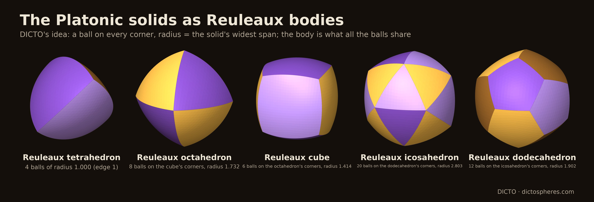
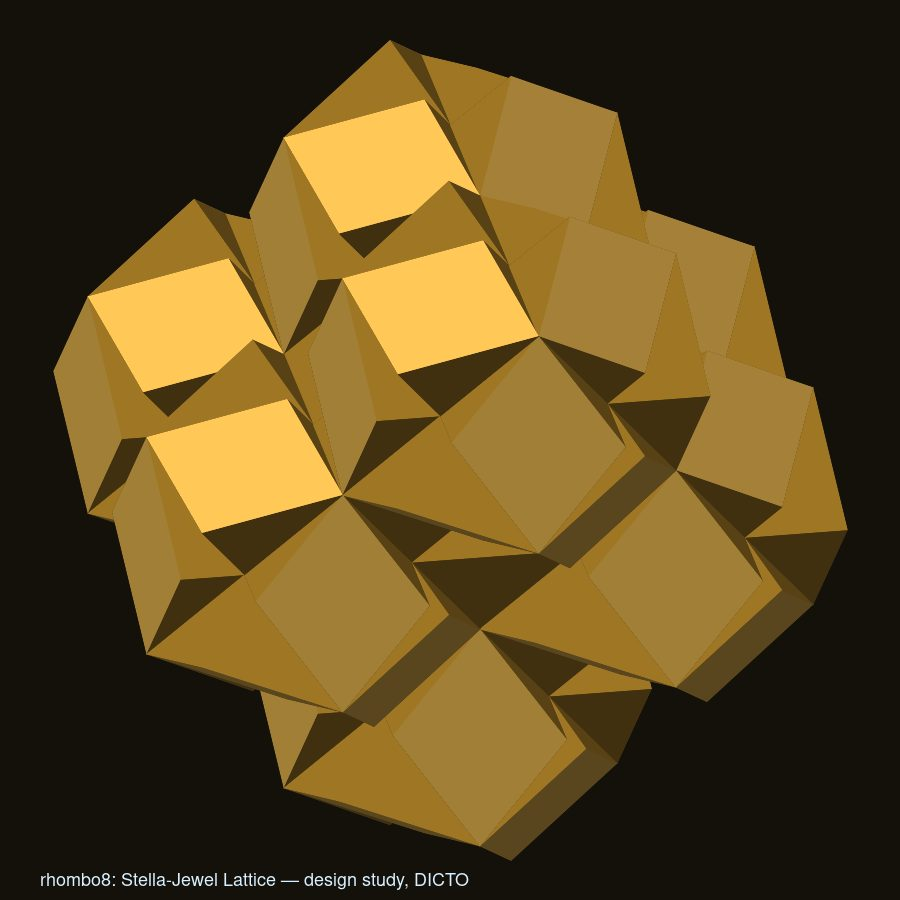
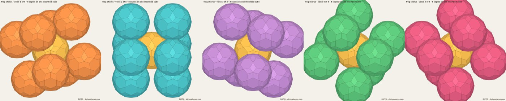
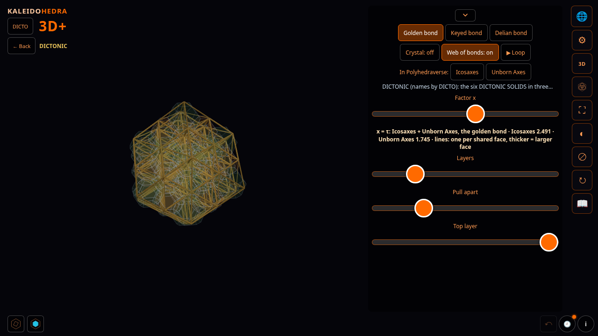
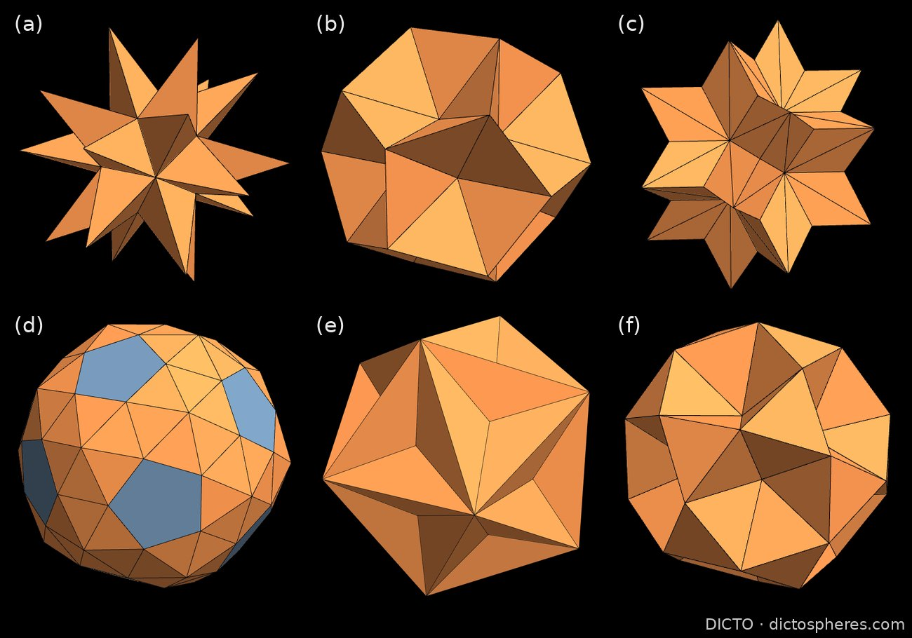
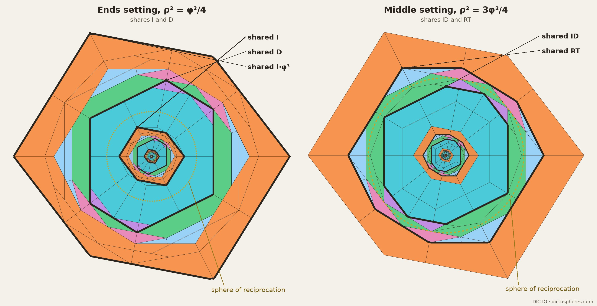
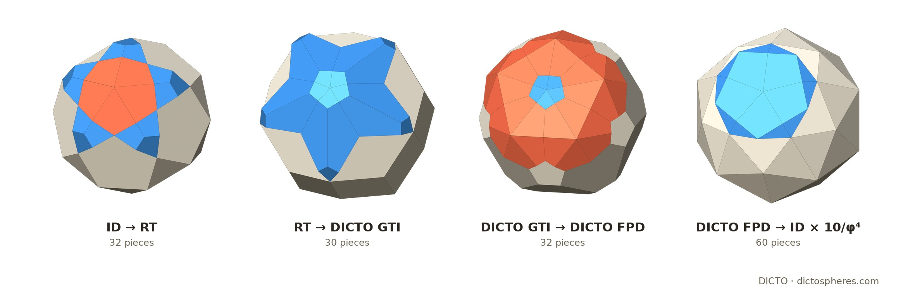

أن ترى عالمًا في حبة رمل وسماءً في زهرة برية، أن تُمسك اللانهاية في راحة يدك والأبدية في ساعة.
ويليام بليك، «نبوءات البراءة»
الأوراق والتطبيقات والبيانات في هذا العمل متاحة للاستخدام بحرية؛ وكلها مفتوحة الوصول، بموجب الرخصة CC BY-SA 4.0، يمكن قراءتها ومشاركتها والبناء عليها بحرية.
كمّات الفضاء
بيان
الأعمال الهندسية لـ DICTO
DICTO
فنان، أوساكا، اليابان · contact@dictospheres.com · https://dictospheres.com
جميع الأعمال والنتائج والأسماء لـ DICTO. الحسابات والتحقق والصياغة بالتعاون مع Claude (Anthropic). الترجمة بالتعاون مع Claude (Anthropic).
الرخصة CC BY-SA 4.0
كتاب · المجلد I (الترجمة العربية) · الإصدار 1 · 7 نوفمبر 2026 · DICTO DOI: عند النشر · الأصل الإنجليزي (الإصدار 2.1): 10.5281/zenodo.23754454
Status (draft for DICTO's reading; this box is deleted at publication): the Arabic edition of Quanta of Space, Volume I, translated from the English Version 2.1 section by section for accuracy, with a binding term list of 613 entries from Arabic Wikipedia and standard usage; right-to-left page with formulas, numbers and DOIs kept left-to-right; title cover كمّات الفضاء. Its own record; DOI reserved at release. The Arabic batches found further points in the English (Concordance errata 38–50); the polytope sentence of the Alice note is already corrected here as in the English v2.2 draft.
المجلد II: «معجم ذرات DICTO — كمّات الفضاء II»، فهرس جميع الذرات، والبيانات عملًا عملًا، والأشكال المعروفة والمُعاد اكتشافها (DICTO DOI: 10.5281/zenodo.23966395).
إلى أبي، آلن بيكر
المحتويات
ما يضمّه هذا العمل مقدمة: كمّات الفضاء 73 عملًا: 71 ورقة في ستة فصول، ثم نتائج Kaleidohedra ومجموعة البيانات (الأرقام هي أرقام الأوراق في dictospheres.com) وفي المجلد II، «معجم ذرات DICTO — كمّات الفضاء II»: فهرس جميع الذرات، والبيانات عملًا عملًا، والأشكال المعروفة والمُعاد اكتشافها
الذرات
مجسمات مفردة، كلٌّ منها قطعة جديدة دقيقة.
#18هكسا DICTO
#19AXE و CLEO و FUJI
#20عائلة FUJI
#28ذو المئة والوجهين العشروني المبتور من DICTO
#31ثمانيني الوجوه من DICTO
#31aنجميّة OCD من DICTO
#34aذو المئة والوجهين والثمانين من DICTO
#35aستيني الوجوه البيني من DICTO
#35bثلاثيني الوجوه المُعاد من DICTO
#41جوهرة DICTO
#45مجسمات رولو الأفلاطونية
#49مبرهنة مطّ متعددات الوجوه
#88لكل مجسم أفلاطوني قصّان ذهبيان بالضبط
—جميع الذرات: الفهرس هو المجلد II
الروابط
كيف تملأ القطع الفضاء معًا: عُدد دقيقة وتعبئات وشبيكات.
الملكتان البيضاء والحمراء بظلالهما ومقاطعهما (كاملةً في «أليشيا في بلاد العجائب: الملكتان الحمراء والبيضاء»)، والقصوص الذهبية بين المقاطع.
#62ظلال البعد الرابع
#63600-خلية الملكة البيضاء
#76بين الملكتين
#65120-خلية الملكة الحمراء
#89الأزواج الذهبية الخمسة كلها مقاطع لمجسمات رباعية الأبعاد
النتائج والتطبيقات
—Kaleidohedra من DICTO
—«مجسمات DICTO: هندسة دقيقة» (مجموعة بيانات)
—الأشكال المعروفة والمُعاد اكتشافها في هذا العمل: في المجلد II
الترتيب والفصول كما في «DICTO: الأعمال الهندسية المجمّعة» (DICTO DOI: 10.5281/zenodo.23345699)، مع إضافة فصلَي التراص والأبعاد الأربعة. والأعمال من #52 فصاعدًا تُروى باختصار؛ والكتب «HexOct» و«الدورة الذهبية» و«أليشيا في بلاد العجائب» تضمّها كاملة.
ما يضمّه هذا العمل
الفضاء مبني من قطع.
كل قطعة يجب أن تكون دقيقة: شكلًا يمكنك أن تصنعه وتمسكه، مُتحقَّقًا منه حتى آخر رأس.
تكفي عُدّة صغيرة: حفنة من الأشكال تبني قشرات وفضاءات بلا نهاية.
النسبة الذهبية تقرر متى تنغلق القشرات.
تتصل القطع في روابط، ونسيج الروابط حقيقي كالقطع نفسها.
النظام المتكرر والنظام غير المتكرر أبدًا يلتقيان في القطع.
كل شيء مفتوح: التطبيقات والبيانات والأوراق، متاحة للاستخدام والبناء عليها بحرية.
DICTO
مقدمة
كمّات الفضاء
هل الفضاء أملس حتى أعمق أعماقه، كالماء؟ أم أنه مبنيّ من قطع، كما يُبنى الجدار من الحجارة؟ يطرح الناس هذا السؤال منذ ألفين وخمسمئة عام. ويأخذ هذا الكتاب السؤال بمعناه الحرفي. فهو يبحث عن أطقم دقيقة من القطع المصمتة تتلاءم معًا بلا فجوات، في قشرات، وفي دورات، وفي الفضاء كله.
ما يلي شجرة نسبٍ لفكرة، لا ادعاءٌ في الفيزياء. القطع في هذا الكتاب أشكال يمكنك أن تبنيها وتمسكها بيدك. وهي تشارك المفكرين القدامى والعلمَ الحديث سؤالًا واحدًا: ما أصغر قطع الفضاء، وكيف تتصل بعضها ببعض؟
الذرات والفضاء الخالي بينها
في اليونان القديمة علّم لوقيبوس وديموقريطس أن العالم مصنوع من قطع دقيقة لا يمكن قطعها، هي الذرات، تتحرك في الفضاء الخالي. ولا تختلف الذرات إلا في شكلها وترتيبها وموضعها. وقد نظم الشاعر الروماني لوكريتيوس هذا التعليم شعرًا: «لا يوجد شيء بذاته سوى الذرات والخلاء». فالذرات إذن كانت قطعًا. لكن أحدًا لم يقل ما أشكالها.
عُدّة قطع أفلاطون
أعطاها أفلاطون أشكالًا. ففي محاورته «طيماوس» تكون العناصر الأربعة أربعة مجسمات منتظمة: النار هي رباعي الوجوه، والهواء ثماني الوجوه، والماء عشروني الوجوه، والتراب المكعب. وجميع وجوهها مبنية من نوعين فقط من المثلثات القائمة الزاوية. أما المجسم المنتظم الخامس، اثنا عشري الوجوه، فقد استُعمل «للكل». وكانت هذه أول عُدّة لبناء المادة: طقم صغير من القطع الدقيقة يُركَّب منه كل شيء.
أهرام أرسطو
ردّ أرسطو بأن الذرات إذا كانت مصمتة فلا بد أن تملأ الفضاء بلا فجوات. وكتب («في السماء» III.8) أن اثنين من المجسمات يفعلان ذلك: الهرم والمكعب. ولم يقل أيَّ هرم. فحمله شرّاحه على رباعي الوجوه المنتظم، الذي يترك وحده فجوة صغيرة، وتجادلوا فيه قرونًا. وإذا قُرئ كلامه كما كتبه، فقد كان محقًّا: أهرام كثيرة تملأ الفضاء. وورقتنا #44، «هرم أرسطو»، تثبت أيَّ الأهرام المقطوعة من مراكز المجسمات الأفلاطونية تفعل ذلك. وفي بُعدٍ أعلى ينغلق حتى رباعي الوجوه المنتظم، عشرون منه حول كل رأس من رؤوس 600-خلية (#63). وتثبت الورقة #65، «120-خلية الملكة الحمراء»، أن أهرامه الخمسة كلها هي نوى المجسمات المنتظمة الرباعية الأبعاد، بنسبه هو تمامًا.
تعبئات كبلر
في عام 1596 وضع يوهانس كبلر المجسمات المنتظمة الخمسة متداخلةً بين أفلاك الكواكب. وفي عام 1611، في كتيّب عن ندفة الثلج السداسية الأركان، فسّر الندفة بكيفية تعبئة وحدات صغيرة متساوية بعضها مع بعض. فصار ذلك السؤالَ الشهير: إلى أي حدّ يمكن رصّ كرات متساوية بإحكام؟ وورقتنا #8، «خلية إقليدس–كبلر–باتشولي»، تجد المجسمات المنتظمة الخمسة كلها متداخلةً على 13 نقطة من خلية واحدة متكررة.
كمّات العلم الحديث
في عام 1900 وجد ماكس بلانك أن الطاقة تأتي في مقادير صغيرة ثابتة، هي الكمّات. وفي إحدى النظريات الحديثة للجاذبية، المسمّاة الجاذبية الكمومية الحلقية، يأتي الفضاء نفسه كذلك في كمّات. وفي عام 1995 أظهر كارلو روفيلي ولي سمولين أن المساحة والحجم في هذه النظرية يأتيان في خطوات منفصلة، لا بصورة متصلة. وفي عام 2011 أظهر أوجينيو بيانكي وبييترو دونا وسيموني سبيتسيالي أن كل مقدار صغير من الحجم يمكن أن يُقرأ مجسمًا صغيرًا ذا وجوه مستوية، تحدّده مقادير وجوهه واتجاهاتها. فيصير الفضاء شبكةً من مثل هذه المجسمات، متصلةً وجهًا لوجه. وعبارة «كمّات الفضاء» نفسها آتية من هذه النظرية (روفيلي وأوبادهيا، 1998).
وثمة فرق ينبغي قوله بصراحة. ففي تلك النظرية تتشارك قطعتان متجاورتان وجهًا له المساحة نفسها، لكنه ليس في العموم بالشكل نفسه (فريدل وسبيتسيالي، 2010). فقطعها لا يلزم أن تتلاءم. أما قطعنا فتتلاءم دائمًا تلاؤمًا دقيقًا، رأسًا لرأس. ومناهج أخرى، مثل المجموعات السببية، تبني الفضاء والزمن من نقاط لا من مجسمات.
لذلك لا يدّعي هذا الكتاب شيئًا في الفيزياء. إنه يشاركها السؤال والشكل: ما أصغر القطع الدقيقة التي يمكن أن يُبنى منها الفضاء، وكيف تتصل؟
المركز: كمّات كل تعبئة متراصة
رُصّ البرتقال في صندوق، فتستقر كل طبقة جديدة في تجاويف الطبقة التي تحتها، بإحدى طريقتين. كرّر اختيارًا واحدًا فيكون التراص مكعبيًّا؛ وكرّر الآخر فيكون سداسيًّا؛ واخلط بينهما بأي ترتيب فيبقى تعبئةً كاملة. والطبيعة تستعمل كثيرًا من هذه الخلائط، في الفلزات والجليد وكربيد السيليكون وأكاسيد البطاريات.
تُظهر قاعدة الأنصاف لـ DICTO (#57) أنه مهما رُصّت الطبقات، دوريةً كانت أو غير دورية، فإن الفضاء بين الكرات يتوزع قطعًا من أنواع منتهية العدد فقط، كل واحدة منها مستعارة كاملةً أو نصفًا من التراصّين الخالصين. هذا فهرس منتهٍ من الكمّات لكل تعبئة متراصة موجودة: أوضح جواب يقدّمه هذا العمل عن السؤال القديم. وحيث تلتقي طبقة مكعبية بطبقة سداسية، تكون القطعة نصفها من هذه ونصفها من تلك: فقطع يانوس c/h تقف على العتبة بين النظامين. ولا تتغير القطع إلا بالمبادلة (قاعدة المبادلة، #61)، ولذا فإن كل عدد وكل حجم خطٌّ مستقيم بدلالة عدد واحد، هو حصة الطبقات السداسية (قانون السداسية، #66)، والبلورات الحقيقية تخضع له (#67–#74). ثم ينغلق الفهرس في بلاطتين فقط، واحدة مكعبية وأخرى سداسية، تبنيان كل تراص بأي ترتيب: HexOct (#75). القانون أعطى القطع؛ والقطع تُثبت القانون.
ستة فصول
إذا قُرئت الأعمال على هذا النحو، فإنها تنقسم إلى ستة فصول.
الذرات مجسمات مفردة، كل منها قطعة جديدة دقيقة: ثمانيني الوجوه من DICTO (Ogdoecontahedron، OG)، وذو المئة والوجهين (Hecatodihedron)، والجوهرة (Jewel)، والهكسا (Hexa)، وAXE وCLEO وFUJI، ومجسمات رولو الأفلاطونية، ومجسمات DICTONIC الستة (الفأس العشرونية (Icosaxes)، وفأس اللامولود (Unborn Axes)، وفأس جوهرة اللوتس (Lotus Jewel Axes)، والفأس الاثنا عشرية (Dodecaxes)، وشمشون، ودليلة). وأشكالها الدقيقة مجموعة في مجموعة البيانات «مجسمات DICTO: هندسة دقيقة»، حيث لكل مجسم من مجسمات DICTO رقم D دائم. وفهرس جميع الذرات، أي 132 شكلًا جديدًا لـ DICTO والأشكالِ المعروفة التي يبني بها العمل، هو المجلد II، «معجم ذرات DICTO — كمّات الفضاء II».
الروابط تتناول كيف تملأ القطع الفضاء معًا: عُدد دقيقة وتعبئات وشبيكات، من خلية إقليدس–كبلر–باتشولي إلى OG على كل تراص. وأوضح الحالات روابط DICTONIC الثلاث (الذهبية والمُفتاحية والديلوسية): أزواج من المجسمات تملأ الفضاء معًا. ورابطة DICTONIC هي زوج واحد من هذه الأزواج؛ أما فصل الروابط فيضم كل طريقة تتصل بها القطع.
القشرات قطع تنغلق في طبقات متداخلة حول نواة، مثل قشور البصلة، وكل طبقة مملوءة تمامًا: سلسلة الكارما، وكرات الدارما، وبذرة بودي، وثياتيتوس.
الدورات قواعد تحوّل القشرة إلى التي تليها ثم تعود إلى البداية، بنهاية أو بلا نهاية: PiTet الشامل، وخطوات عائلة OG، ونوى كيوشيندو، والقشرات وقد قُلب باطنها ظاهرًا. وتُروى القشرات والدورات كاملةً في كتاب «الدورة الذهبية».
التراص هو المركز المذكور أعلاه: قاعدة الأنصاف، وقاعدة المبادلة، وقانون السداسية في المواد الحقيقية، وبلاطتا HexOct، وتُروى كاملةً في كتاب «HexOct: قانون السداسية».
الأبعاد الأربعة تُرى بظلالها ومقاطعها: 600-خلية و120-خلية، اللذان سمّاهما DICTO الملكة البيضاء والملكة الحمراء، وتُروى كاملةً في كتاب «أليشيا في بلاد العجائب: الملكتان الحمراء والبيضاء».
بين المتكرر وغير المتكرر أبدًا
بعض الأنماط يتكرر، مثل بلاط أرضية الحمّام. وبعضها لا يتكرر أبدًا، ومع ذلك فهو منتظم تمامًا، مثل تبليط بنروز. والأعمال في هذا الكتاب تستعمل القطع نفسها لبناء النوعين كليهما.
طوال معظم التاريخ كان النظام في المادة يعني التكرار. فالبلورة خلية صغيرة واحدة منسوخة بلا نهاية، وكان التناظر الخماسي يُعَدّ مستحيلًا فيها. ثم في عام 1982 وجد دان شختمان سبيكة فلزية يُظهر نمط تشتتها تناظرًا خماسيًّا حادًّا. وقد نال بأشباه البلورات هذه، المنتظمة التي لا تتكرر أبدًا، جائزة نوبل في عام 2011. للمادة نوعان من النظام، وصار السؤال: كيف يلتقيان؟
تقع القطع في هذا الكتاب على تلك الحدود. فعُدّة دقيقة واحدة تبني الأوكتيت المتكرر، وتبني أيضًا بلورة لا تتكرر أبدًا، على نمط فيبوناتشي (#40، «عائلة OG من DICTO على كل تراص»). وفي «عمود فقري فيبوناتشي» (#30) تلتقي خمس تعبئات متكررة لـ OG حول محور خماسي. والنسخ التي يجب أن تُنزع على امتداد ذلك المحور تشكّل بالضبط سلسلة فيبوناتشي، أبسط نظام لا يتكرر أبدًا. وقشرات كرات الدارما الذهبية (#23) لا تتكرر إلا بأن تكبر بالعامل الذهبي نفسه في كل لفّة. وفي تراص فيبوناتشي (#69) تأتي قطع كل تعبئة متراصة بنسب ذهبية، وتبني بلاطتا HexOct التراصات المتكررة وغير المتكررة على السواء، بحسب الترتيب الذي توضعان به. عُدّة واحدة، ونوعان من النظام: القطع نفسها هي الجسر.
ما تُظهره القطع
أربعة أمور تعود مرة بعد مرة. تكفي عُدّة صغيرة: حفنة من الأشكال الدقيقة تبني قشرات وفضاءات بلا حدود، وفي التعبئة المتراصة تكون العُدّة منتهية وتامة، حتى تنحصر في بلاطتين. وتظهر النسبة الذهبية حيثما ظهر التناظر الخماسي، وهي التي تقرر متى تنغلق القشرات. وهي أيضًا تمنح كل مجسم أفلاطوني قصّين ذهبيين بالضبط، وتعود الأعماق الذهبية نفسها مقاطعَ لمجسمات الأبعاد الأربعة (#88، #89). والقطع تصل بين نوعي النظام في المادة، المتكرر وغير المتكرر أبدًا. والقطع نفسها تمتد إلى ما وراء فضائنا: فالأهرام الخمسة التي تجادل فيها أرسطو هي نوى المجسمات المنتظمة في الأبعاد الأربعة.
خمّن القدماء أن الفضاء مصنوع من قطع ذات أشكال، وقد عادت الفيزياء الحديثة إلى الفكرة. وهذه الأعمال تبني مثل هذه القطع بدقة وتختبرها، وكل ورقة وراء هذا الكتاب محقَّقة تحقيقًا دقيقًا.
مصادر المقدمة: Plato, Timaeus (tr. B. Jowett); Lucretius, On the Nature of Things (tr. W. E. Leonard); Aristotle, On the Heavens III.8 (tr. J. L. Stocks); J. Kepler, Mysterium Cosmographicum (1596) and Strena seu de nive sexangula (1611); D. Shechtman, I. Blech, D. Gratias, J. W. Cahn, Phys. Rev. Lett. 53 (1984) 1951; C. Rovelli, L. Smolin, Nucl. Phys. B 442 (1995) 593; L. Freidel, S. Speziale, Phys. Rev. D 82 (2010) 084040; E. Bianchi, P. Doná, S. Speziale, Phys. Rev. D 83 (2011) 044035; S. Surya, Living Rev. Relativ. 22 (2019) 5. أُعيدت كتابتها من المقالة «كمّات الفضاء» في «DICTO: الأعمال الهندسية المجمّعة» (DICTO DOI: 10.5281/zenodo.23345699). الرخصة CC BY-SA 4.0.
الفصل 1 · الذرات · #18
هكسا DICTO
مكعب مصنوع من ثماني جواهر، وقرينه هكسا-مفتاح، ورقعة شطرنج تملأ الفضاء
لو أمسكتَه بيدك
لأمسكتَ مكعبًا على وجوهه 24 سقفًا منخفضًا، تتجه إلى الخارج. وهو يبدو، بعبارة الورقة، «جميلًا ومتينًا، كأنه منحوت من الخشب». ويُظهر سطحه 24 نافذة على شكل معين، كل منها المعين السميك في تبليط بنروز.
وهو مصنوع من ثماني جواهر DICTO، موضوعة على كتلة من اثنين في اثنين في اثنين، ويخترق بعضها بعضًا في الداخل. وهو، بوصفه مجسمًا واحدًا، يحوي ما يعادل ستّ جواهر وثلثي جوهرة.
الشكل 18. هكسا DICTO: ثماني جواهر هكسا DICTO (جواهر DICTO دقيقة على كتلة 2 × 2 × 2)، بلا تحويل قصّ. من الشكل 1 في الورقة.
من أين بدأ
تأتي جوهرة DICTO من خلية إقليدس–كبلر–باتشولي (#8). خذ اثني عشري الوجوه المنتظم في الخلية، وهو مكعب عليه سقوف إقليدس الستة. ثم انحت منه ثمانيات الوجوه النجمية، النجمية الشكل، الخاصة بخلاياه الست المجاورة. فما يتبقى يحتفظ بالمكعب كله وبثلثي كل سقف، ويُظهر سطحه اثني عشر معينًا من معينات بنروز، واحدًا على كل حرف من أحرف المكعب: هي النوافذ. والجواهر وثمانيات الوجوه النجمية، إذا وُضعت كالخانات السوداء والبيضاء في رقعة الشطرنج، تملأ الفضاء معًا.
رأينا المكعب المؤلف من ثماني جواهر في عالم Studies في تطبيق Kaleidohedra، وحجمه نحو ثماني جواهر.
ما وجدناه
لا يجعل أيُّ قدر من تحويل القصّ ثماني جواهر منفصلة تلتقي وجهًا لوجه في صورة مكعب. فالهكسا لا توجد إلا ثماني جواهر دقيقة متداخلة. وضغط الجواهر نفسها يُذهب النوافذ، فلم يُعتمد ذلك.
لا تلتقي الهكسات بعضها ببعض إلا نافذةً لنافذة، بنافذتين كاملتين مع كل جار. وفي نمط المكعب المركزي الوجوه يكون لكل هكسا 12 جارًا. والفضاء المتبقي بينها مجسم واحد مفرد، سمّاه DICTOهكسا-مفتاح (Hexa-Key): ثمانية ثمانيات وجوه نجمية واثنا عشر سقفًا مزدوجًا. ثم تملأ الهكسات وهكسات-المفتاح الفضاءَ كرقعة الشطرنج، بنسبة خمسة أجزاء إلى ثلاثة حجمًا، كما تفعل الجواهر وثمانيات الوجوه النجمية في المستوى الأدنى بالضبط. وثمة تناظر لطيف: فالهكسا ثمانية مكعبات عليها 24 سقفًا متجهة إلى الخارج، وهكسا-مفتاح ثمانية ثمانيات وجوه نجمية فيها السقوف الـ24 نفسها متجهة إلى الداخل.
وتنفكّ الهكسا أيضًا انفكاكًا مرتبًا، بطريقتين: إلى 8 مكعبات و24 سقفًا، أو إلى 4 جواهر كاملة و4 جواهر مشذّبة. ويمكن لثماني هكسات أن تتجمع حول هكسا-مفتاح محبوس في وسطها، وهذا هو معيني سطوح الجواهر في «أغلفة كاغومي»، لكن في مستوى أعلى بدرجة. وفي شبكة ألماسية تملأ الهكسات وثمانيات الوجوه النجمية الفضاء دون أن تتبقى جواهر مفردة. ولا شيء يدور: لا يمكن أن يُدار أيُّ وصل في هذه التعبئات ويبقى متلائمًا.
ما يضيفه
ملء الفضاء بثمانيات الوجوه النجمية وثمانيات الوجوه معروف، وكذلك المكعب وثماني الوجوه وثماني الوجوه النجمي داخل اثني عشري الوجوه المعينية. ومعين النافذة واحد من القطع العشر في نظام البناء الذي وضعه لالفاني (براءة اختراع من عام 1988)، أما الجوهرة فليست منها: فجدرانها تقع في مستويات ثمانيات الوجوه النجمية، وليس في البراءة ثماني وجوه نجمي ولا نحت. ولم نجد مكعبًا مبنيًّا من مجسمات اثني عشري الوجوه منحوتة، ولا هذه الكتلة الثمانية، في بحث على الويب ولا في المكتبة المرجعية لـ DICTO. وكما تقول الورقة، ليس هذا برهانًا على الجِدّة، ولا يدّعي السجل أيَّ أسبقية. ويمكن بناء الهكسا في Polyhedraverse ورؤيتها في عالم Stella–Jewel في Kaleidohedra.
الهكسا وأسماؤها لـ DICTO. دراسة التصميم والتحقق بالتعاون مع Claude (Anthropic) في المكتبة مفتوحة المصدر krp-core. صدرت أولًا ضمن Kaleidohedra v2026.10.11-octet. من الورقة #18، الإصدار 2، 20 أكتوبر 2026. الرخصة CC BY-SA 4.0.
DICTO DOI: 10.5281/zenodo.23376320
الفصل 1 · الذرات · #19
AXE وCLEO وFUJI
ثلاث قطع للفجوات في العشروني الوجوه
لو أمسكتَها بيدك
لأمسكتَ ثلاث قطع صغيرة. AXE على شكل رأس فأس: مثلثان متساويا الأضلاع متصلان كمفصّلة، والحرف الحادّ هو النصل. وCLEO هرم نحيل، سُمّي باسم مسلّة كليوباترا، المسلّة القائمة في لندن. وFUJI هرم سداسي على هيئة جبل فوجي؛ ولونه لون زهرة الفوجي، الوستارية اليابانية.
قاعدة FUJI مسدس زواياه كلها متساوية، لكن أضلاعه الطويلة والقصيرة تتناوب. وأحرفه المائلة الستة كلها متساوية الطول.
الشكل 19.AXE وCLEO وFUJI، بالمقياس الوحيد الذي تملأ به بذرة اللوتس. من الشكل 1 في الورقة.
المسألة التي تحلّها
تحيط اثنتا عشرة كرة بكرة واحدة إحاطة محكمة، ومراكزها الاثنا عشر هي رؤوس عشروني وجوه. وقد أظهر فرانك في عام 1952 أن هذا العنقود المؤلف من ثلاث عشرة ذرة أكثر استقرارًا من القطع المقابلة في البلورات العادية. لكن لا يمكن مدّه عبر الفضاء: فعشرونيات الوجوه الموضوعة بعضها حول بعض تترك دائمًا فجوات. وعشرونيّا وجوه يلتقيان على حرف يتركان إسفينًا من الفضاء الخالي على كل جانب منه.
عنقود DICTO، بذرة اللوتس (Lotus seed)، يضع اثني عشر عشروني وجوه حول عشروني وجوه صغير، ويملأ كل فجوة بثلاثة أنواع فقط من القطع. ثلاثون AXE تسدّ الأخاديد الخارجية، وثلاثون أخرى تسدّ الداخلية. وعشرون FUJI تملأ الأركان الخارجية، حيث تلتقي ثلاثة عشرونيات وجوه. وعشرون CLEO تملأ الأركان الداخلية حول المركز الصغير. والنتيجة، في 113 قطعة، عشروني وجوه منتظم كبير واحد بالضبط.
صنعناه أول مرة في تطبيق Polyhedraverse في 5 أكتوبر 2026، أثناء العمل على مسألة في اثني عشري الوجوه، بطريقة أبسط: اثنا عشري وجوه، وعلى كل وجه من وجوهه الـ12 عشروني وجوه تنقصه قلنسوة (J11)، ثم 30 AXE و20 FUJI. وهذه 63 قطعة، وهي أسهل طريقة لبناء بذرة اللوتس باليد. وترافق الورقةَ مخططاتُ نشرٍ قابلة للطباعة لها.
ما وجدناه
تبيّن أن AXE وCLEO اثنتان من بلاطات موسيري–سادوك. وقد صنع سادوك وموسيري تلك البلاطات لوصف النظام العشروني في المواد الحقيقية. وهنا تأتي البلاطات نفسها من تلقاء ذاتها، بوصفها قطع الفجوات في عنقود مبني من عشرونيات وجوه كاملة.
أما FUJI فجديدة. ونبرهن أنها لا يمكن تقطيعها إلى بلاطات موسيري–سادوك بحجمها أو أكبر. يستعمل أحد البرهانين لامتغير دين، وهو مقدار لا يغيّره القص واللصق. ويستعمل الآخر زوايا قاعدة FUJI السداسية. أما هل يمكن لبلاطات أصغر أن تصنعها فمسألة متروكة مفتوحة.
وتظهر القطع الثلاث في أعمال DICTO كلها. أضف 20 CLEO إلى عشروني وجوه صغير تحصل على اثني عشري الوجوه المستنجم العظيم لكبلر. وأضف 30 AXE تحصل على اثني عشري الوجوه المحفور. وأضف 12 قلنسوة يكن لديك اثنا عشري الوجوه: السلسلة الاثنا عشرية الوجوه، من عشروني الوجوه إلى قرينه مرورًا بمجسمين نجميين. وسلسلة الكارما (#22) تكرر بذرة اللوتس في كل مقياس، وتبقى AXE وCLEO وFUJI كاملة في كل خطوة.
ما يضيفه
وصف ر. و. غراي قفص العشرونيات الاثني عشر في عام 2002، ولاحظ أنها ترسم عشروني وجوه أكبر؛ لكنه لم يملأ الفجوات. وAXE وCLEO هما بلاطتا موسيري–سادوك. ويلاحظ كوجا وزملاؤه أن تلك البلاطات وحدها لا تستطيع أن تُنمي عشروني الوجوه أبعد من خطوة ذهبية واحدة. أما بذرة اللوتس، بعشرونيات الوجوه الكاملة وFUJI في أركانها، فتمضي أبعد، وتستمر سلسلة الكارما بلا نهاية.
بذرة اللوتس، والبناء المؤلف من 63 قطعة، وUNITY، وسلسلة الكارما، ونجميّة-إكليل (Stella-Corona)، والأسماء AXE وCLEO وFUJI وهاسو (Hasu) وترسكيليون (Triskelion) وترسكيليون سداسي (Triskelion Hex) والعين الداخلية (Inner Eye) وDESHI وملك العملات (King of Pentacles)، كلها لـ DICTO. وAXE وCLEO هما بلاطتا موسيري–سادوك t6 وt4؛ وترتيب DESHI هو ترتيب ر. و. غراي. الحسابات والتحقق والصياغة بالتعاون مع Claude (Anthropic). من الورقة #19، الإصدار 3، 20 أكتوبر 2026. الرخصة CC BY-SA 4.0.
DICTO DOI: 10.5281/zenodo.23351291
الفصل 1 · الذرات · #20
عائلة FUJI
أهرام على مثلثات مبتورة، وزوج جديد يملأ الفضاء
لو أمسكتَ واحدًا منها بيدك
لأمسكتَ هرمًا على قاعدة سداسية الأضلاع. القاعدة مثلث مبتور: مثلث قُطعت رؤوسه الثلاثة قطعًا مستويًا، فتتناوب فيه الأضلاع الطويلة والقصيرة وتتساوى زواياه كلها. وأحرف الهرم المائلة الستة كلها متساوية. ثلاثة من جوانبه مثلثات متساوية الأضلاع؛ والثلاثة الأخرى أضيق.
تخيّل الآن شريط تمرير للأضلاع القصيرة. صغّرها حتى تتلاشى فيصير الهرم رباعي وجوه منتظمًا. ودعها تكبر حتى تساوي الأضلاع الطويلة فيهبط الهرم مسطحًا في مسدس منتظم. وبينهما، عند ضبط ذهبي، توجد FUJI، قطعة الفجوة في بذرة اللوتس (#19). وشريط التمرير ذاك هو عائلة FUJI.
الشكل 20. عائلة FUJI بمقياس واحد، وكل الأحرف الجانبية متساوية: من رباعي الوجوه مرورًا بـ FUJI إلى المسدس المسطح. الوجوه الأدكن: المثلثات الثلاثة المتساوية الأضلاع؛ والأفتح: المثلثات الثلاثة المتساوية الساقين. من الشكل 2 في الورقة.
من أين بدأ
ظل هذا الشكل يظهر. فعند تصميم dictospheres، وهي كرات مطبوعة طباعةً ثلاثية الأبعاد ذات 14 منفذًا لعبوات PET، أراد DICTO مثلثات حادة حول المنافذ، فاكتفى بمثلثات مثلَّمة، هي المثلثات المبتورة، ليحافظ على هامش متساوٍ حول كل منفذ. وعند تلوين بذرة اللوتس، كان يأمل مسدسات منتظمة فوجد المثلثات المبتورة نفسها. ومنحوتاته DeltaZip وB1NR تستعمل مثلثات مستديرة الأركان، وهي الصورة المنحنية للفكرة نفسها. فسألنا: هل تنتمي FUJI إلى عائلة؟ والجواب: نعم.
ما وجدناه
كل موشور تخالفي يختار عضوًا. الموشور التخالفي أسطوانةٌ من المثلثات بين مضلعين متساويين. ولكل موشور منها عضو واحد بالضبط من العائلة تمتد قاعدته مستويةً امتدادًا لمثلثات الموشور التخالفي. فثماني الوجوه يعطي رباعي الوجوه. والموشور التخالفي المربع يعطي عضوًا «فضيًّا»، مرتبطًا بالنسبة الفضية. والموشور التخالفي المخمس، وسط عشروني الوجوه، يعطي FUJI، المرتبطة بالنسبة الذهبية.
الأعضاء تسكن أماكن كثيرة. قاعدة FUJI هي المسدس الذهبي في إنشاء مأخوذ عن جورج أودوم. ورباعي الوجوه المبتور الذي وجد داماسينو وإنغل وغلوتزر أنه يملأ الفضاء وجوهُه قاعدةُ عضو آخر. وفي البيروكلور «المتنفّس»، وهو بلورة من رباعيات وجوه كبيرة وصغيرة توجد في بعض أكاسيد الكروم، كل مسدس مثلث مبتور؛ وعند الضبط الذهبي يكون كل مسدس قاعدةَ FUJI. وحين يُقطع مكعب وثماني وجوه إلى العمق نفسه، تنتمي مثلثات المجسم الثمانية إلى العائلة، وتقع رؤوس المكعب تمامًا عند قمم الأهرام.
العجلات. بإلهام من عجلات DeltaZip لـ DICTO، سألنا: كم عجلة مستوية يمكن أن تتقاطع، كل اثنتين منها على امتداد قضيب شعاعي مختلف؟ والجواب: ثلاث عجلات مربعة على الأكثر، أو أربع سداسية، أو ست عشارية الأضلاع؛ وخمس عجلات ثمانية الأضلاع مستحيلة. وست عجلات تقود، بطريق ملتوٍ، إلى كرة من 20 CLEO وإلى عشروني الوجوه مقطوعًا إلى 20 هرمًا من مركزه، أي Cleo-Icos.
زوج جديد يملأ الفضاء. لا يستطيع Cleo-Icos أن يملأ الفضاء وحده. لكنه هو بالضبط الركن الحادّ لمعيني سطوح ذهبي، وهو صندوق مائل أوجهه الستة معينات ذهبية. اقطع معيني السطوح هذا مرتين فينقسم إلى Cleo-Icos عند كل قمة حادة وقطعة وسطى سمّاها DICTOأنطونيوس (Antonius)، حجمها أربعة أضعاف. ومعينيات السطوح الذهبية تملأ الفضاء، ولذا فإن Cleo-Icos وأنطونيوس يملآن الفضاء، بنسبة اثنين إلى واحد، وجهًا لوجه. فقطع عشروني الوجوه نفسها، مع قرين واحد، تملأ الفضاء. والقطع نفسها تبني ستيني الوجوه المعينية. وقد تحققنا من رقعة من 2,187 قطعة بلا فجوات ولا تداخلات.
ما يضيفه
كثير مما هنا معروف ومنسوب إلى أصحابه: شكل المسدس، وزوايا الموشور التخالفي، والمسدس الذهبي المأخوذ عن أودوم، ورباعي الوجوه المبتور المالئ للفضاء، والبيروكلورات المتنفّسة، وCleo-Icos نفسه، وهو رباعي الوجوه الوحدوي لماكاي وأحد الأهرام في «الكتاب الرابع عشر» لإبسقلاوس الملحق بإقليدس، نحو 150 ق.م. ولم تجد أبحاثنا العائلةَ بوصفها كيانًا واحدًا، ولا قاعدة الموشور التخالفي، ولا حدّ العجلات، ولا تقسيم معيني السطوح الذهبي إلى Cleo-Icos وأنطونيوس؛ والورقة تذكر ما بُحث فيه ولا تدّعي أن هذه مجهولة. والعائلة تمنح شكلًا واحدًا وشريط تمرير واحدًا لأشياء وُجدت متفرقة: قطعة فجوة، ومالئ للفضاء وُجد بالحاسوب، ومسدسات البلورات المغناطيسية، ووجوه مكعب مقطوع.
FUJI، وCleo-Icos، وأنطونيوس، وبذرة اللوتس، وdictospheres، ومنحوتات DeltaZip وB1NR، وملاحظةُ أن المثلث المبتور يظل يظهر في أعماله، والأسماءُ، كلها لـ DICTO. الحسابات والتحقق والصياغة بالتعاون مع Claude (Anthropic). من الورقة #20، الإصدار 5، 20 أكتوبر 2026 (نص الإصدار 4). الرخصة CC BY-SA 4.0.
DICTO DOI: 10.5281/zenodo.23357896
الفصل 1 · الذرات · #28
ذو المئة والوجهين العشروني المبتور من DICTO
مجسم ذو 102 وجه، وُجد ببناء مرحلة واحدة من كرات الدارما
لو أمسكتَه بيدك
لأمسكتَ مجسمًا شبه كروي ذا 102 وجه مستوٍ من ثلاثة أنواع: 12 مخمسًا منتظمًا، و30 معينًا، و60 مثلثًا نحيلًا. وتقع المخمسات أخفض قليلًا من سائر الوجوه، كغمّازات ضحلة.
وهو مبني على عشروني الوجوه المبتور، يقوم على كل مسدس من مسدساته الـ20 هرمٌ سداسي منخفض، هو الدرع (Shield). وتُرفع الدروع إلى الارتفاع الذي تقع عنده مثلثات درعين متجاورين مستويةً في مستوى واحد وتندمج في معين. ولا تنثني أحرفه إلا بزاويتين اثنتين.
الشكل 28. ذو المئة والوجهين: 12 مخمسًا منتظمًا (ذهبي)، و30 معينًا (سماوي)، و60 مثلثًا (وستاري). من الشكل 1 في الورقة.
من أين بدأ
تُنمي كرات الدارما (#23) عشروني وجوه طبقةً بعد طبقة، مرورًا بذي الوجوه الاثني عشري العشروني، واثني عشري الوجوه، وعشروني الوجوه المبتور، وثلاثيني الوجوه المعينية، عودةً إلى عشروني وجوه أكبر بخطوة ذهبية. وفي «اقتناص البينيّات» (#27) تؤخذ كل مرحلة مغلقة من ذلك النمو مجسمًا واحدًا. والمرحلة 7، عشروني الوجوه المبتور وعلى كل مسدس درع، تبيّن أنها محدبة، وعدد وجوهها أقل مما توحي به قطعها: 102. وقد وُجدت ببنائها.
ما وجدناه
عند الارتفاع الخاص، تتزاوج المثلثات الـ60 الواقعة عبر الأحرف التي يلتقي عندها مسدسان، فتصير 30 معينًا. أما المثلثات الـ60 المجاورة للمخمسات فتبقى مثلثات. وعندئذ تقع قمم الدروع الـ20 تمامًا على رؤوس اثني عشري وجوه منتظم.
المعينات والمثلثات، وهي 90 وجهًا في المجموع، تمسّ كرة واحدة. أما المخمسات الـ12 فتقع داخلها قليلًا، فليس للمجسم كرة تمسّ كل وجه. وقد ذكرت ورقة سابقة لنا أن الوجوه الـ102 كلها تمسّ كرة واحدة؛ وكان ذلك خطأً، وقد صُحِّح.
ما المجسم بالضبط: قمم الدروع هي رؤوس مجسم معروف، اثني عشري الوجوه المخموس، قرين عشروني الوجوه المبتور. ولذا فإن ذا المئة والوجهين هو مجسم معروف، عشروني الوجوه المبتور الموصول، وقد قُطعت رؤوسه الخماسية الـ12 قطعًا مستويًا عند المخمسات: مجسم غير مسمّى مشتق من مجسم معروف. وقرينه، المصنوع بقلب باطنه ظاهرًا، هو ثمانيني الوجوه من DICTO (#31). ويتعاشق الاثنان في مركّب واحد ذي 182 وجهًا، سمّاه DICTO ذا المئة والوجهين والثمانين من DICTO (#34a).
ما يضيفه
نمط وجوهه قريب من عشروني الوجوه المبتور المسدوس (hexakis truncated icosahedron) لكونواي، الذي له 132 وجهًا؛ ومجسمنا هو ذلك المجسم مسطَّحًا، وقد اندمج فيه 30 زوجًا من المثلثات. وليس هو مجسمًا أرخميديًّا ولا مجسم كاتالان ولا مجسم جونسون. وقد بحثنا في ترميز كونواي، وفي مجسمات جونسون وأشباهها القريبة (near misses)، وفي MathWorld، وPolytope Wiki، وفهرس ماكوي (McCooey)، فلم نجده مسمّى. وهذا تقرير عن المواضع التي بحثنا فيها، لا ادعاء بأن المجسم مجهول. والاسم لـ DICTO: hecatodi- لوجوهه الـ102، من الكلمة اليونانية لمئة واثنين، كما في هيكاتونيكوساخورون (hecatonicosachoron)؛ و«العشروني المبتور» للمجسم الذي ينمو منه. ويمكن فتحه في Polyhedraverse (DICTO Transitional Shells) ورؤيته في عالم DICTO-TIC.
المجسم مرحلة من كرات الدارما لـ DICTO، وُجد ببنائه، والاسم لـ DICTO. الحسابات والتحقق بالتعاون مع Claude (Anthropic). من الورقة #28، الإصدار 3، 20 أكتوبر 2026. الرخصة CC BY-SA 4.0.
DICTO DOI: 10.5281/zenodo.23360857
الفصل 1 · الذرات · #31
ثمانيني الوجوه من DICTO
مجسم ذو ثمانين وجهًا، وُجد بقلب طقم من القشرات المتداخلة باطنًا لظاهر
لو أمسكتَه بيدك
لأمسكتَ مجسمًا شبه كروي ذا 80 وجهًا مستويًا: 20 مسدسًا منتظمًا و60 طائرة ورقية. وحيثما نظرت، تزدحم الطائرات الورقية حول المسدسات. وفي 12 موضعًا تلتقي خمس طائرات ورقية في رأس يبرز قليلًا جدًّا عن سائر السطح.
قلّبه في يدك فيبدو هو نفسه من جهات كثيرة. فله التناظر الكامل لعشروني الوجوه، المجسم المنتظم ذي الوجوه العشرين. ورؤوسه الـ102 تقع كلها تقريبًا على كرة واحدة: 90 منها تقع عليها تمامًا، ولا تقع خارجها قليلًا إلا الرؤوس الـ12 ذات الطائرات الخمس. وتلتقي الوجوه على أحرف ذات طولين فقط، وتنثني بزاويتين فقط، متقاربتين جدًّا. ولكل طائرة ورقية ضلعان طويلان، بطول ضلع المسدس، وضلعان أقصر. وقد سمّاه DICTO باسم وجوهه الثمانين: ثمانيني الوجوه (Ogdoecontahedron)، من الكلمتين اليونانيتين لـ«ثمانين» و«وجه». واسمه المختصر OG.
الشكل 31. ثمانيني الوجوه من DICTO، المسدسات بلون الوستارية والطائرات الورقية سماوية: (a) منظورًا إليه بميل؛ (b) بالنظر مباشرة إلى مسدس منتظم في الوسط؛ (c) بالنظر مباشرة إلى أحد الرؤوس الخارجية الـ12 التي تلتقي عندها خمس طائرات ورقية. من الشكل 1 في الورقة.
كيف وُجد
بدأ الأمر بعمل سابق، «كرات الدارما» (#23). فهناك ستة مجسمات يقع بعضها داخل بعض كالدمى الروسية. والفجوة بين كل دمية والتي تليها تملؤها تمامًا قطع قليلة متكررة، والتداخل يتكرر بلا نهاية. وفي منتصف إحدى الطبقات، تنغلق القلنسوات التي على مسدساتها في مجسم قائم بذاته، هو ذو المئة والوجهين العشروني المبتور من DICTO (#28).
في 13 أكتوبر 2026 كانت فكرة DICTO أن يُقلب التداخل كله باطنًا لظاهر. ولا يجدي مجرد قلب قطع كل طبقة: فلا تنغلق أي طبقة في قشرة. أما ما يجدي فحيلة قديمة في الهندسة. خذ كرة واحدة حول المركز المشترك واستعملها كالمرآة: فيصير كل وجه مستوٍ رأسًا، ويصير كل رأس وجهًا مستويًا. فيتحول كل مجسم إلى قرينه، وينعكس ترتيب التداخل، فيصير الداخل خارجًا.
فعلنا هذا بالمجسمات السبعة كلها: الستة التي في التداخل وذي المئة والوجهين الذي بينها. فخرجت ستة منها مجسماتٍ معروفة من قبل. وواحد لم يكن كذلك. فقد تحوّل ذو المئة والوجهين إلى هذا المجسم الجديد، ثمانيني الوجوه.
ما وجدناه
لـ OG وصف بسيط بعد أن وُجد. خذ مجسمًا معروفًا، اثني عشري الوجوه المخموس. وجِد رؤوسه الـ20 التي تلتقي عندها ستة وجوه، واقطع كلًّا منها قطعًا مستويًا. فيترك كل قصّ مسدسًا منتظمًا، وما يتبقى من الوجوه القديمة هو الطائرات الورقية. وإضافة قلنسوة في جهة من المرآة هي قصّ رأس في الجهة الأخرى: فذو المئة والوجهين يضيف هرمًا منخفضًا على كل مسدس من مسدسات أصله، أما OG فيقطع رأسًا بدلًا من ذلك.
وفي التداخل المعكوس يقع OG بإحكام بين مجسمين كلاسيكيين. فمسدساته تقع في وجوه ذي الوجوه الاثني عشري العشروني الذي في داخله، وطائراته الورقية تقع في وجوه اثني عشري الوجوه المخموس الذي يحيط به.
وكانت فكرة DICTO أيضًا أن تُوصل نسخ من OG مسدسًا بمسدس. صِل كل نسخة بأربع نسخ أخرى، عبر أربعة مسدسات تتجه كرؤوس رباعي وجوه، فتشكّل النسخ شبكة ألماسية. والوصلات نفسها تقع على نمط من رباعيات وجوه متشاركة في الرؤوس، هو شبيكة البيروكلور. وتتسع الفراغات في الشبكة الأولى لشبكة ثانية، لا تمسّها إلا على المسدسات. ومعًا تشكّل الشبكتان رصّة واحدة مرتبة: كل نسخة متجهة الاتجاه نفسه وتمسّ ثمانية جيران، عبر المسدسات الثمانية المتجهة إلى رؤوس مكعب. وهذه الرصّة تملأ 77.43 في المئة من الفضاء. وهذا أكثر من أحكم رصّة ممكنة لكرات متساوية، كالبرتقال على عربة في السوق، التي تملأ 74.05 في المئة. وقد وجد بحث حاسوبي تراصًّا منتظمًا أكثف بقليل، لكن لم يُبرهن أنه الأكثف.
يصل OG بين المسدس المنتظم، المألوف في الأنماط المتكررة، والتناظر الخماسي، تناظر أشباه البلورات. وقد اختبرنا هل هو قطعة من شبه البلورة العشرونية المعيارية. وليس كذلك. لكن يمكن رصّه بخمس طرق من هذا القبيل، وحيث تلتقي الرصّات الخمس حول محور خماسي، تشكّل النسخ التي يجب أن تُنزع، مع النسخة التي في الوسط، سلسلة فيبوناتشي بالضبط قرب المركز. وذلك موضوع «عمود فقري فيبوناتشي» (#30).
ما يضيفه
كثير من هذا قديم ومنسوب إلى أصحابه في الورقة: قلب المجسمات باطنًا لظاهر حول كرة، واثنا عشري الوجوه المخموس وقطع رؤوسه، وشبيكتا الألماس والبيروكلور، ورصّ الكرات المتساوية. بل إن نمط وجوه OG، أي أيّ وجه يلاقي أيّ وجه، معروف: إذ يمكن كتابته بترميز برنامج Antiprism. أما ما لم نجده، في المكتبة المرجعية لـ DICTO، ولا في فهرس ماكوي الإلكتروني المؤلف من 553 مجسمًا، ولا في عمليات البحث على الويب، فهو المجسم نفسه، بهذه المسدسات المنتظمة وهذه الطائرات الورقية، أو رصّاته الدقيقة الموصولة بالمسدسات. ولذا فإن OG مجسم غير مسمّى مشتق من مجسم معروف. واسمه لـ DICTO؛ أما المجسم بهذه الوجوه، ورصّاته، فلم يُعثر عليها في المصادر التي فُحصت.
ذو المئة والوجهين، وفكرة قلب كرات الدارما باطنًا لظاهر، والاسم ثمانيني الوجوه (Ogdoecontahedron)، وفكرة وصل النسخ على مسدساتها في شبكات بيروكلور، كلها لـ DICTO. الحسابات والحساب الدقيق والصور المُصيَّرة بالتعاون مع Claude (Anthropic). من الورقة #31، الإصدار 4، 20 أكتوبر 2026. الرخصة CC BY-SA 4.0.
DICTO DOI: 10.5281/zenodo.23404688
الفصل 1 · الذرات · #31a
نجميّة OCD من DICTO
رفيق ثمانيني الوجوه، مقطوعًا على امتداد وصلاته
لو أمسكتَه بيدك
لأمسكتَ مجسمًا مُشطَّفًا يشبه الجوهرة، له 48 رأسًا و50 وجهًا: 6 مسدسات و24 وجهًا رباعي الأضلاع، كلها في مستويات ذهبية، و20 مثلثًا. وثمانية من المثلثات خاصة: فهي المواضع المستوية التي يلاقي عندها جيرانه.
وهو ليس في استدارة المجسمات العشرونية المحيطة به. فقصّه لا يحتفظ إلا بـ 24 من تناظراتها، وهي التي تشترك فيها مع المكعب. (ويسمّي علماء الهندسة هذا التناظر بيريتي الوجوه، نسبةً إلى بلورات البيريت.)
الشكل 31a. نجميّة OCD من DICTO. من الشكل 1 في الورقة (يسارًا).
من أين بدأ
يتعبّأ ثمانيني الوجوه من DICTO (#31) في ترتيب مكعب مركزي الجسم، وكل نسخة موصولة بثمانية جيران على مسدساتها. وتتلاءم قطع مُهايئة ذهبية حول كل نسخة، ولها معًا محيط مجسم، هو رفيقOG. وبعبارة DICTO، كان «هدية مجانية من الطريقة التي جلست بها المُهايئات على OCD». اقطع الرفيق على امتداد الوصلات الثماني، فتحصل على نجميّة OCD من DICTO (DICTO OCD Stella).
ما وجدناه
إنها تتعبّأ. تلتقي نسخ نجميّة OCD وجهًا لوجه عبر الوصلات الثماني كلها وتملأ 87.12 في المئة من الفضاء.
إنها تصنع بذرة. ضع اثنتي عشرة نجميّة OCD حول واحدة صغيرة، فتملأ نجميّة OCD أكبر تمامًا، على نمط بذرة بودي (#24) نفسه، مع أن نجميّة OCD أقل تناظرًا.
إنها تصنع بلورات. تنقسم تعبئة OG إلى شبكتين ألماسيتين. وكانت فكرة DICTO أن يوضع قرين على الشبكة الثانية بينما تبقى نجميّات OCD على الأولى. ومع عشرونيات الوجوه قرائنَ، يلاقي كل مجسم جيرانه الثمانية وجهًا لوجه. وكانت فكرة DICTO أيضًا أن تُقطع الفجوة المتبقية إلى قطع، فانقسمت إلى أربعة أنواع بالضبط من القطع المحدبة. ومع ثمانيات الوجوه المنتظمة قرائنَ، وهي فكرة DICTO التالية، تستقر قمم كل ثماني وجوه الست في حزوز في نجميّات OCD، وتملأ البلورة 96.33 في المئة من الفضاء. ومع ثمانيات الوجوه على ربع المواقع فقط، كما في الملح الصخري، تملأ 91.72 في المئة.
الذرة 13. فكرة DICTO مرة أخرى: اثنتا عشرة نجميّة OCD حول نجميّة مركزية، تُدفع كل واحدة منها إلى الخارج حتى تمسّ المركز. فتلاقي المركز مستويةً ولا يمسّ بعضها بعضًا أبدًا. ويتسع عشرون عشروني وجوه للفجوات بينها.
ما يضيفه
نمط وجوه الرفيق معروف (عشروني الوجوه المشطوف)، ومعروفٌ أيضًا مالئ ذهبي آخر للفضاء مقطوع من ثلاثيني الوجوه المعينية على النوع نفسه من الشبيكات (متعدد الوجوه المالئ للفضاء ذو الـ54 وجهًا لكاباي). وذاك يملأ الفضاء كله؛ أما نجميّة OCD فمجسم مختلف ويملأ 87.12 في المئة. والبلورات المؤلفة من نوعين من المجسمات الصلبة، كرباعيات الوجوه مع ثمانيات الوجوه، معروفة أيضًا. ولم نجد نجميّة OCD، ولا تعبئتها، ولا بذرتها، ولا بلوراتها، ولا قطع الفجوة، ولا نجميّة OCD المحزوزة، ولا الذرة 13، في المصادر التي فُحصت، ومنها 64 نصًّا من المكتبة المرجعية لـ DICTO بُحث فيها كاملةً. ويمكنك رؤية البلورات في Kaleidohedra (3D+ → OCD Stella Crystals).
الرفيق، والقص النجمي، والبذرة، والاسم، والقرائن على الشبكة الثانية (عشرونيات الوجوه وثمانيات الوجوه)، وترتيب البيروكلور، وتقطيع الفجوة إلى قطع، والذرة 13، كلها لـ DICTO؛ وأُنجزت الحسابات الدقيقة والنص بالتعاون مع Claude (Anthropic). من الورقة #31a، الإصدار 3، 20 أكتوبر 2026. الرخصة CC BY-SA 4.0.
DICTO DOI: 10.5281/zenodo.23430870
الفصل 1 · الذرات · #34a
ذو المئة والوجهين والثمانين من DICTO
مجسمان قرينان متشابكان في مجسم واحد
لو أمسكتَه بيدك
لأمسكتَ مجسمين يخترق أحدهما الآخر، كرباعيي الوجوه في ثماني الوجوه النجمي ذي الشكل النجمي. أحدهما ذو المئة والوجهين من DICTO (#28)، وله 102 وجه. والآخر ثمانيني الوجوه من DICTO (#31)، وله 80 وجهًا. ورؤوس كلٍّ منهما تبرز من وجوه الآخر.
ولهما معًا 182 وجهًا و182 رأسًا. وقد سمّى DICTO الزوج بدمج الاسمين: ذو المئة والوجهين والثمانين (Hecatogdoecontahedron)، أي 102 و80 معًا.
الشكل 34a. ذو المئة والوجهين والثمانين من DICTO: ذو المئة والوجهين (ذهبي) وثمانيني الوجوه (أزرق مخضرّ) متعاشقين، مع عشروني الوجوه المبتور والنواة المشتركة والغلاف. مرسوم من الرؤوس الدقيقة. من الشكل 1 في الورقة.
ما وجدناه
المجسمان قرينان: اقلب أحدهما باطنًا لظاهر حول كرة، تحصل على الآخر. والكرة هنا هي التي تمسّ منتصف كل حرف من أحرف عشروني الوجوه المبتور. وعند هذا الحجم يتعاشق المجسمان تمامًا. فرؤوس ثمانيني الوجوه الـ90 الواقعة على تلك الكرة تقع تمامًا عند منتصفات الأحرف الـ90 لعشروني الوجوه المبتور. ولا يقع أي رأس من رؤوس أيٍّ من المجسمين داخل الآخر.
ولأن الاثنين قرينان، فالزوج قرين نفسه: إذا قُلب المركّب باطنًا لظاهر تبادل مجسماه وبقي هو نفسه.
والجزء الذي يشترك فيه المجسمان، أي نواتهما المشتركة، هو عشروني الوجوه المبتور المُقوَّم. والمحيط الذي يلفّهما كليهما، أي الغلاف، هو عشروني الوجوه المبتور الموصول، ويُسمّى أيضًا تسعيني الوجوه المعينية. وهذان هما بالضبط نواة زوج كلاسيكي وغلافه، أي عشروني الوجوه المبتور مع قرينه اثني عشري الوجوه المخموس. فالزوج الجديد يقتسم فضاء مركّب كلاسيكي بطريقة جديدة. وهو كثماني الوجوه والمكعب، اللذين هما نواة ثماني الوجوه النجمي وغلافه.
وفي «الأسلاف» (#34) تصبح النواة والغلاف محطتين في دورة ذهبية، فتضم تلك الدورة نوى وأغلفة مركّبين من القرائن: عشروني الوجوه الكلاسيكي مع اثني عشري الوجوه، وهذا المركّب.
ما يضيفه
مركّبات المجسم مع قرينه معروفة. وكذلك مركّب عشروني الوجوه المبتور–اثني عشري الوجوه المخموس الكلاسيكي، وعشروني الوجوه المبتور المُقوَّم، وتسعيني الوجوه المعينية. ولا ندّعي إلا الإقران والاسم، لا النواة ولا الغلاف. ولم يُعثر على مركّب هذين المجسمين في المصادر التي فُحصت، ولا يُرجع البحث عن الاسم أي نتائج. ويمكن رؤيته في Kaleidohedra (3D+ → Vajrayana، وMulti-shell chains).
البيانات: المجلد II، A.34a (أعداد عناصر المجسمين، والمركّب، ونواته وغلافه).
الإقران والاسم لـ DICTO؛ وأُنجزت الحسابات الدقيقة والنص بالتعاون مع Claude (Anthropic). وُصف المركّب أول مرة في الإصدار 2 من ورقة ذي المئة والوجهين (#28). من الورقة #34a، الإصدار 2، 20 أكتوبر 2026. الرخصة CC BY-SA 4.0.
DICTO DOI: 10.5281/zenodo.23430868
الفصل 1 · الذرات · #35a
ستيني الوجوه البيني من DICTO
المجسم الذي في الفجوة الأخيرة من الدورة الذهبية
لو أمسكتَه بيدك
لأمسكتَ مجسمًا من 60 مثلثًا متطابقًا، مدبّبًا قليلًا في 12 موضعًا تلتقي عندها خمسة مثلثات، وأكثر تثلّمًا في 20 موضعًا تلتقي عندها ثلاثة. وله 32 رأسًا و90 حرفًا. ويمكن لكرة أن تستقر في داخله ماسّةً الوجوه الـ60 كلها في آن واحد.
وهو مصنوع بلفّ جلد واحد حول مجسمين كلاسيكيين في آن واحد: عشروني وجوه منتظم، واثني عشري وجوه تقع رؤوسه فوق وجوه عشروني الوجوه. وحجم اثني عشري الوجوه هو الذي يقرر الشكل. ومجسم DICTO حجم واحد دقيق في ذلك المدى. ومعنى اسمه (Metaxyhexecontahedron) «المجسم البيني ذو الستين وجهًا»، من اليونانية metaxý، أي «بين».
الشكل 35a. ستيني الوجوه البيني من DICTO. مرسوم من الرؤوس الدقيقة. من الشكل 1 في الورقة (يسارًا).
من أين بدأ
تُداخل كرات الدارما (#23) قشرات عشرونية في دورة تتكرر بخطوة ذهبية. وقد وضع «الأسلاف» (#34) ثمانيني الوجوه من DICTO فيها، وتناول «فاجرايانا» (#35) خطواتها السائبة. وفي إحداها، من ثلاثيني الوجوه المعينية إلى عشروني الوجوه التالي، لا يبلغ ثلاثيني الوجوه إلا جزءًا من الطريق. وكانت فكرة DICTO أن مجسمًا آخر ينبغي أن يتسع هناك. ولا يمسّ أيٌّ من المجسمات العشرونية المحدبة الأخرى التي اختُبرت الجارين كليهما. وهذا المجسم يمسّهما.
ما وجدناه
يملأ ستيني الوجوه البيني الفجوة تمامًا. فرؤوسه الخماسية الـ12 هي رؤوس ثلاثيني الوجوه نفسها، ورؤوسه الثلاثية الـ20 تقع تمامًا على مراكز وجوه عشروني الوجوه التالي. فهو يمسّ الجانبين كليهما.
وأفضل من ذلك أن كل طبقة من الطبقتين اللتين يصنعهما تملؤها قطعة من نوع واحد: 30 قطعة متطابقة بين ثلاثيني الوجوه والمجسم الجديد، و60 قطعة متطابقة بين المجسم الجديد وعشروني الوجوه التالي. وقرينه، المصنوع بقلب باطنه ظاهرًا، يغلق الخطوة المقابلة في النسخة المقلوبة من الدورة.
وهو ينتمي إلى عائلة: كل الجلود حول اثني عشري وجوه وعشروني وجوه في هذا الوضع، مع نموّ اثني عشري الوجوه. وتضم تلك العائلة اثني عشري الوجوه المخموس الكاتالاني، وثلاثيني الوجوه المُعاد من DICTO (#35b)، وستيني الوجوه البيني من DICTO. وثمة طرفة تُذكر دون تفسير: نسبة الحجم التي تعرّفه هي أيضًا الكسب الدقيق في كل دورة لأحكم دورة في «الأسلاف».
ما يضيفه
العائلة معروفة: تعطي Polytope Wiki مداها، ويعطي MathWorld وماكوي العضو الكاتالاني. ولم يُعثر في المصادر التي فُحصت على هذا العضو مجسمًا مسمّى أو مميَّزًا، ولا على نسبة حجمه مميَّزة. ولا يطابق عدده أي متتالية في OEIS، ولا يُرجع البحث عن الاسم أي نتائج. ويمكن رؤيته في Kaleidohedra (3D+ → Vajrayana).
فكرة أن مجسمًا آخر يتسع في الفجوة الأخيرة من الدورة، والاسم، لـ DICTO؛ وأُنجزت الحسابات الدقيقة والنص بالتعاون مع Claude (Anthropic). من الورقة #35a، الإصدار 3، 20 أكتوبر 2026. الرخصة CC BY-SA 4.0.
DICTO DOI: 10.5281/zenodo.23430864
الفصل 1 · الذرات · #35b
ثلاثيني الوجوه المُعاد من DICTO
ثلاثيني الوجوه المعينية مقلوبًا باطنًا لظاهر
لو أمسكتَه بيدك
لأمسكتَ مجسمًا من 60 مثلثًا له 32 رأسًا: 12 تلتقي عندها خمسة مثلثات و20 تلتقي عندها ثلاثة. وكل مثلث هو بالضبط نصف معين من معينات اثني عشري الوجوه المعينية لكبلر.
واسمه (Palintriacontahedron)، من اليونانية pálin، أي «عودًا»، يقول ما هو: ثلاثيني الوجوه المعينية وقد عاد على نفسه. فهو يتجه في الاتجاهات الـ32 نفسها التي يتجه فيها ثلاثيني الوجوه، لكن حيث تكون رؤوس ذلك المجسم بعيدة إلى الخارج تكون رؤوس هذا قريبة إلى الداخل، والعكس بالعكس.
الشكل 35b. نجمة ذي الوجوه الاثني عشري العشروني (أهرامه المركزية مقلوبة إلى الخارج بكامل ارتفاعها)، داخل غلافها، ثلاثيني الوجوه المُعاد من DICTO، وثلاثيني الوجوه المُعاد متعاشقًا مع عشروني الوجوه التالي. مرسوم من الرؤوس الدقيقة. من الشكل 1 في الورقة.
من أين بدأ
في الدورة الذهبية ذات المحطات الاثنتي عشرة في «فاجرايانا» (#35)، يكون ذو الوجوه الاثنا عشري العشروني القشرةَ التي يلتقي عندها سلفا الدورة. ويمكن تقطيع ذي الوجوه الاثني عشري العشروني إلى 32 هرمًا من مركزه، واحد فوق كل وجه. وقد قلب DICTO تلك الأهرام إلى الخارج، بكامل ارتفاعها، بدلًا من تقصيرها. وبعبارته: «التقصير يبدو غشًّا؛ لا بد من مجسم آخر». والجلد الملفوف حول القمم الـ32 هو ثلاثيني الوجوه المُعاد.
ما وجدناه
إنه ثلاثيني الوجوه مقلوبًا باطنًا لظاهر: المحاور الـ32 نفسها، مع انعكاس النسبة بين نوعي المسافة إلى رؤوسه. وهو أيضًا عضو في العائلة نفسها التي ينتمي إليها ستيني الوجوه البيني (#35a): الجلود حول اثني عشري وجوه وعشروني وجوه. ومكانه في تلك العائلة بين اثني عشري الوجوه المخموس الكاتالاني وستيني الوجوه البيني.
وهو يمتد عبر الدورة. فبالقياس الحاسوبي يقع داخل اثني عشري الوجوه في اللفّة التالية، ويقع معظمه، 99.46 في المئة، داخل نجمة Cleo لعشروني الوجوه التالي. فهو يصل لفّة من الدورة الذهبية باللفّة التي تليها. ومن مصادفات الأعداد الصغيرة أن الاستنجام الأول لعشروني الوجوه يضع قممه عند النسبة نفسها التي تعرّف هذا المجسم.
ما يضيفه
العائلة ومداها معروفان (Polytope Wiki)، وكذلك ثلاثيني الوجوه المعينية والأهرام المركزية لذي الوجوه الاثني عشري العشروني. ولم يُعثر في المصادر التي فُحصت على هذا العضو مجسمًا مسمّى أو مميَّزًا، ولا على نسبة حجمه مميَّزة. ولا يُرجع البحث عن الاسم أي نتائج.
قلب الأهرام المركزية لذي الوجوه الاثني عشري العشروني نفسه إلى الخارج بكامل ارتفاعها، والاسم، لـ DICTO؛ وأُنجزت الحسابات الدقيقة والنص بالتعاون مع Claude (Anthropic). من الورقة #35b، الإصدار 2، 20 أكتوبر 2026. الرخصة CC BY-SA 4.0.
DICTO DOI: 10.5281/zenodo.23430866
الفصل 1 · الذرات · #41
جوهرة DICTO
اثنا عشري الوجوه لإقليدس منحوتًا بنجوم جيرانه
لو أمسكتَها بيدك
لأمسكتَ حجرًا كريمًا مقطوعًا له 60 وجهًا: اثنتا عشرة نافذة على شكل معين و48 مثلثًا صغيرًا. وكل نافذة معين بنروز سميك، أعرض البلاطتين في نمط بنروز الشهير الذي لا يتكرر أبدًا، وزاويتاه 108° و72°. وعلى كل جانب من جوانبه الستة غمّازة صغيرة.
وتحتها مكعب. فالنوافذ تقع عبر أحرف المكعب الاثني عشر، والمثلثات هي الجدران حيث نُحت.
الشكل 41. جوهرة DICTO. من شكل الغلاف في الورقة.
كيف يُصنع
بنى إقليدس اثني عشري الوجوه المنتظم بوضع سقف على كل وجه من وجوه مكعب. والآن ضع مكعبات جنبًا إلى جنب لتملأ الفضاء، كرقعة شطرنج في ثلاثة أبعاد. وضع اثني عشري الوجوه لإقليدس على المكعبات البيضاء. وعلى المكعبات السوداء ضع النجمة المصنوعة من رباعيي وجوه متشابكين، ثماني الوجوه النجمي لكبلر. فكل سقف من سقوف اثني عشري الوجوه يمتد داخل مكعب أسود، والنجمة التي هناك تنحت جزءًا منه. وما يتبقى هو جوهرة DICTO: المكعب وسقوفه الستة المنحوتة.
ما وجدناه
الجواهر والنجوم تملأ الفضاء. الجواهر على المكعبات البيضاء وثمانيات الوجوه النجمية على المكعبات السوداء تملأ الفضاء تمامًا، بنسبة ثلاثة أجزاء إلى جزء واحد حجمًا، على نمط ملح الطعام. وقد تُحقِّق من ذلك أولًا بأخذ عينات من النقاط؛ وهنا يُبرهن عليه برهانًا دقيقًا. فكل مكعب أسود هو بالضبط نجمته مضافًا إليها السقوف الستة المنحوتة التي يدفعها فيه جيرانه.
عناقيد مسمّاة مجسمات. تصير عناقيد الجواهر التي وضعها DICTO مجسمات مفردة بأسمائه. فـجوهرة-رباعي (Jewel-Tetra) أربع جواهر يمسّ كلٌّ منها الأخرى، نافذةً لنافذة. وجوهرة-ثماني (Jewel-Octa) ست جواهر حول مكعب أسود، ونجمة ذلك المكعب محبوسة في الفراغ الذي بينها، تملؤه تمامًا. وجوهرة-معيني (Jewel-Rhombi) ثماني جواهر على رؤوس صندوق مائل، ونجمة محبوسة في داخله أيضًا.
كيف تملأ الفضاء. لا تشغل الجواهر إلا ثلاثة أرباع الفضاء، فلا يمكن لأي مجموعة من الجواهر وحدها أن تملأه: لا بد أن تأتي النجوم معها. وكل عنقود من العناقيد الثلاثة يملأ الفضاء بنسخ من نفسه ونجوم سائبة، وقد وجدنا كل طريقة منتظمة لفعل ذلك. ومعًا تقع جواهر-الرباعي وجواهر-الثماني تمامًا حيث تقع رباعيات الوجوه وثمانيات الوجوه في جملون الأوكتيت، وإن كانت مجسمات متداخلة، لا تبليطًا.
الهكسا، مبرهَنًا عليها. هكسا DICTO وهكسا-مفتاح في الورقة #18، وملؤهما بنسبة خمسة إلى ثلاثة، مبرهن عليها برهانًا دقيقًا هنا. والنمط نفسه يتكرر في المستوى الأعلى: مكعب أُضيفت إليه سقوف هو جوهرة، ومكعب أُزيلت منه سقوف هو نجمة؛ وكتلة من ثمانية أُضيفت إليها سقوف هي هكسا، وكتلة أُزيلت منها سقوف هي هكسا-مفتاح.
التوائم. الجوهرة، بوصفها مجسمًا مفردًا، تتوأم كما يتوأم ثمانيني الوجوه من DICTO. أما تعبئتها فلا تتوأم عبر مرآة مائلة، والورقة تعطي السبب البسيط: تلك المرآة لا تحافظ على شبكة المكعبات.
ما يضيفه
الأجزاء كلاسيكية: المكعب المسقوف لإقليدس، وثماني الوجوه النجمي لكبلر، والمعين السميك لبنروز، والترتيب ترتيب ملح الطعام. أما الجوهرة نفسها، وشبيكتها، والعناقيد، فقد نشرها DICTO أولًا في تطبيق Kaleidohedra وفي «أغلفة كاغومي» (#17)؛ والهكسا في #18. والجديد هنا البراهين الدقيقة، ومجسمات العناقيد الثلاثة وأعداد وجوهها، وكل تبليط شبيكي للثلاثة مع النجوم السائبة، ونمط الأوكتيت مع حدّه، والسبب الدقيق لعدم توأمة التعبئة. وبراءة اختراع لالفاني من عام 1988 تبني بُنًى من قطع تقع أحرفها كلها على محاور عشرونية معينة؛ ولا تفعل ذلك إلا أحرف نوافذ الجوهرة، فهي تخرج عن ذلك الشرط. ولم نجد الجوهرة، ولا عناقيدها، ولا الهكسا، ولا هكسا-مفتاح خارج سجلات DICTO نفسه، في 80 مصدرًا من المكتبة بُحث فيها كاملةً وفي عمليات البحث على الويب.
الجوهرة، ونظيرها من ثماني الوجوه النجمي، واسمها، وعناقيدها (وجوهرة-رباعي وجوهرة-ثماني وجوهرة-معيني بوصفها مجسمات مفردة، وأسماؤها)، والهكسا، وهكسا-مفتاح وأسماؤهما، كلها لـ DICTO. الحسابات والبراهين الدقيقة والصياغة بالتعاون مع Claude (Anthropic). من الورقة #41، الإصدار 1، 20 أكتوبر 2026. الرخصة CC BY-SA 4.0.
DICTO DOI: 10.5281/zenodo.23496353
الفصل 1 · الذرات · #45
مجسمات رولو الأفلاطونية
أجسام مستديرة تنشأ حيث تتداخل كرات موضوعة على رؤوس مجسم أفلاطوني
لو أمسكتَ واحدًا منها بيدك
لأمسكتَ جسمًا أملس مستديرًا، وجوهه المنحنية تلتقي على أحرف منحنية، كحصاة لا تزال تتذكر المجسم الذي جاءت منه. وكل وجه قطعة من سطح كرة واحدة.
والغريب أن كل جسم يبدو كقرين المجسم الذي صُنع منه. فالكرات على رؤوس مكعب تصنع جسمًا يبدو كثماني وجوه، والكرات على ثماني وجوه تصنع جسمًا يبدو كمكعب. ولذا سمّاها DICTO بحسب مظهرها: ثماني وجوه رولو (الكرات على المكعب)، ومكعب رولو (على ثماني الوجوه)، وعشروني وجوه رولو (على اثني عشري الوجوه)، واثنا عشري وجوه رولو (على عشروني الوجوه).

الشكل 45. الأجسام الخمسة عند حرف مجسم يساوي 1، وقد لُوّنت وجوه كل منها بأقل عدد من الألوان يفصل بين المتجاورات (ذهبي، وأرجواني، وليلكي، وبرونزي). وتحت كل منها: عدد الكرات ونصف قطرها، وهو قطر المجسم. من الشكل 1 في الورقة.
كيف تُصنع
كانت الفكرة فكرة DICTO. ضع كرة على كل رأس من رؤوس مجسم أفلاطوني، وكل كرة كبيرة بالقدر الذي يكفي لبلوغ أبعد رأس فقط. فالفضاء الذي تشترك فيه الكرات كلها جسم مستدير. وعلى رباعي الوجوه يكون هذا رباعي وجوه رولو الشهير. وبناء الجسم نفسه على المجسمات الأفلاطونية الخمسة كلها، بوصفها عائلة واحدة، فكرة DICTO، والأربعة الأخرى لم تظهر في المصادر التي فحصناها.
ما وجدناه
تقول المبرهنة الرئيسية ما مدى سُمك هذه الأجسام.
لا تكون أرقّ أبدًا من عرض المجسم. في داخل كل منها يتسع جسم مستدير متساوي السُّمك في كل اتجاه، ولا يمكن لشيء أن يكون أرقّ من جسم يحويه. وإذا قيس السُّمك بين رأسين متقابلين كان بالضبط عرضَ المجسم.
عبر الوجه، بالضبط. إذا قيس السُّمك مستقيمًا عبر منتصف وجه، كان بالضبط عددًا يمكننا كتابته. فبحكم التناظر تقع أبعد نقطة على ذلك الخط، ولا يمكنها أن تبلغ إلا الحدّ الذي تسمح به كرة أبعد رأس.
القرينان يتفقان. المجسم وقرينه، المكعب وثماني الوجوه، أو اثنا عشري الوجوه وعشروني الوجوه، يعطيان جسمين متساويين في السُّمك تمامًا عبر وجوههما.
يتبع رباعي الوجوه قاعدته الخاصة، ورباعي وجوه رولو الكلاسيكي يخرج صحيحًا: فالحجم الذي حسبناه يتفق مع الصيغة المعروفة. ورغم أسمائها، فإن الأجسام الأربعة الجديدة ليست متعددات وجوه رولو بالمعنى الرياضي الدقيق: فكل رأس يقع على سطح كرة واحدة أخرى فقط. إنها «متعددات وجوه كروية» (ball polyhedra).
ونعتقد أن الخط المارّ عبر الوجه هو أيضًا أسمك الاتجاهات كلها. والحاسوب يتفق مع ذلك إلى اثنتي عشرة خانة، على أكثر من 3,000 اتجاه، لكنه لم يُبرهن بعد. ويُترك ذلك حدسيةً.
الألوان. تلتقي وجوه كل جسم كما تلتقي وجوه المجسم القرين. ولذا فإن أقل عدد من الألوان يفصل بين الوجوه المتجاورة هو 4 و2 و3 و3 و4، وهي الأعداد التي قرأها DICTO من المظهر.
ما يضيفه
رباعي وجوه رولو وحجمه معروفان، وكذلك متعددات الوجوه الكروية عمومًا، ومتعددات وجوه رولو، ومجسمات مايسنر. والأوراق الثلاث في المكتبة عن هذه الأجسام لا تستعمل إلا رباعي الوجوه المنتظم. وفي المصادر الـ81 من المكتبة التي بُحث فيها كاملةً لم نجد الأجسام المبنية على المجسمات الأفلاطونية الأربعة الأخرى ولا عروضها. وورقة واحدة في الموضوع، ورقة سالي، موجودة في المكتبة رابطًا فقط ولم تُقرأ.
الإنشاء (كرة على كل رأس من رؤوس مجسم أفلاطوني، نصف قطرها قطر المجسم) والتسمية بحسب المظهر فكرة DICTO؛ والحسابات والبراهين والصياغة بالتعاون مع Claude (Anthropic). من الورقة #45، الإصدار 2، 22 أكتوبر 2026. الرخصة CC BY-SA 4.0.
DICTO DOI: 10.5281/zenodo.23529499
الفصل 1 · الذرات · #49
مبرهنة مطّ متعددات الوجوه
أزِح مجسمًا بطول حرف واحد، فيبقى كل حرف كما هو
لو أمسكتَ واحدًا منها بيدك
لأمسكتَ مجسمًا طويلًا ذا أوجه: اثني عشري وجوه منتظمًا قد مُطّ. فمخمساته الاثنا عشر لا تزال كلها موجودة، عند الطرفين، وبينها يمتد حزام من عشرة وجوه على شكل معين. وكل حرف، على المخمسات وعلى الحزام سواء، له الطول نفسه.
وإذا نُظر إليه من طرفه كان محيطه مضلعًا ذا عشرة أضلاع. وإذا نُظر إليه من جانبه أظهر المسدس الطويل الذي بدأ منه كل شيء.
الشكل 49. اثنا عشري الوجوه مسحوبًا على امتداد قطر وجه مكعب إقليدس إلى اثني عشري الوجوه التالي: اثنا عشر مخمسًا (بنفسجي) وحزام من عشرة وجوه طويلة (ليلكي). يسارًا: على امتداد الحرف الطويل، المسدس الطويل الذي رآه DICTO. وسطًا: من الطرف، معشّر. يمينًا: منظور مائل. من الشكل 1 في الورقة.
من أين بدأ
في الورقة #47 تقع مجسمات اثني عشري الوجوه على مكعب من كل مكعبين في شبكة. وحين نظر DICTO داخل تلك الكتلة في تطبيق Kaleidohedra، رأى فراغًا، حيّزًا طويلًا سداسي الأضلاع، يتداخل معه مجسمان من اثني عشري الوجوه، واحد من كل جانب. وكانت فكرته أن يصنع صيغة من اثني عشري الوجوه تتسع له. وإذا أُخذ الفراغ والتداخلان معًا كانت مجسمًا واحدًا: الحيّز الذي يجتازه اثنا عشري الوجوه وهو ينزلق من أحد الموضعين إلى الآخر. وكان DICTO قد وجد قبل ذلك عضوًا أول من هذه العائلة، من مجسمات اثني عشري الوجوه متداخلة أيضًا: اثنا عشري الوجوه الممطوط، المنشور بوصفه النتيجة F11.
ما وجدناه
المبرهنة. خذ أي مجسم أحرفه كلها بالطول نفسه، كاثني عشري الوجوه. أزِحه بطول حرف واحد في خط مستقيم، في أي اتجاه إلا على امتداد حرف من أحرفه هو. فيخرج كل حرف من أحرف الشكل الذي يمسحه بطول حرف واحد. والسبب قصير: كل حرف من أحرف الشكل الجديد إما حرف من أحرف المجسم نفسه، منقولًا، وإما نسخة من الإزاحة نفسها، وكلاهما بطول حرف واحد.
وما يحدث للوجوه سهل التصوّر. فالوجوه عند الطرفين تبقى كما كانت تمامًا. والوجه الواقع على امتداد الإزاحة يطول ويكسب ضلعين. وحول الوسط ينمو حزام من المعينات، واحد لكل حرف على محيط المجسم.
اتجاهات خاصة. الإزاحة على امتداد محور من محاور تناظر اثني عشري الوجوه نفسه تعطي أنظف الأشكال. أزِحه عبر مخمسين متقابلين، فيكون في الحزام عشرة معينات، كلها متماثلة. والإزاحة على امتداد قطر الوجه تُبقي المخمسات الاثني عشر كلها.
متساوي الأحرف وتلسكوبي. يسمّي DICTO العائلة كلها مجسمات DICTO الممطوطة (DICTO stretched solids): متساوية الأحرف حين يكون المطّ حرفًا واحدًا، وتلسكوبية عند أي طول آخر. وتحتفظ الوجوه بأنواعها؛ ولا ينمو إلا الحزام.
ثلاث قلنسوات وأربع. بدلًا من الإزاحة على امتداد خط، ضع اثني عشري وجوه عند كل رأس من رؤوس مثلث أو رباعي وجوه ولُفّها معًا. فيكون كل حرف متساويًا مرة أخرى، وتظهر بين الوجوه مثلثات متساوية الأضلاع. وتساءل DICTO أيضًا: هل يمكن لتدوير أحد الطرفين أن يجعل الحزام مثلثات؟ لا يمكن: فالحافة متعرجة، وأفضل شريط من المثلثات يبقى منحرفًا بثلث حرف. أما القلنسوات الثلاث والأربع فتعطي المثلثات بدلًا من ذلك.
كل مجسم متساوي الأحرف. تصحّ المبرهنة في المجسمات الأفلاطونية كلها. مُطّ رباعي الوجوه وثماني الوجوه فتظهر أشكال شهيرة: ذو الوجوه المكعبي الثماني، ورباعي الوجوه المبتور، وثلاثة من مجسمات جونسون، وهذه علامة جيدة على أن المطّ عملية طبيعية. ومجسمات عشروني الوجوه الممطوطة تشكّل عائلة ثانية تبدو جديدة.
اصنع مجسمك. ترافق الورقةَ مخططاتُ نشرٍ قابلة للطباعة، ونموذج تلسكوبي من ثلاثة أجزاء ينزلق من الشكل القصير إلى الشكل الطويل.
ما يضيفه
الطريقة قديمة: سحب مجسم على امتداد خط إنشاء معياري (مجموع مينكوفسكي)، وسلوك الوجوه فيه معروف عمومًا. وقد بنى هارت وبيتشيوتو مجسمات من مثلثات ومعينات بالطريقة نفسها، دون مخمسات، وفي متعددات الوجوه النطقية يكون مطّ النطاق كلاسيكيًّا (غرونباوم، تبعًا لفيودوروف). ولم نجد اثني عشري الوجوه مسحوبًا على امتداد قطر وجه، أو قطر جسم، أو محور خماسي، ولا الصيغ ذات القلنسوات الثلاث والأربع، مسمّاةً أو موصوفة. ولأن الإنشاء بسيط، فقد تكون موجودة في مكان ما دون اسم؛ ونقدّمها عائلةً لـ DICTO على هذا الأساس. ومطّ المجسمات الأرخميدية الثلاثة عشر متروك لوقت لاحق.
اثنا عشري الوجوه الممطوط (F11)، والمسدس الطويل المرئي في طبقة اثني عشري الوجوه، والصيغ ذات القلنسوات الثلاث والأربع، والنموذج التلسكوبي، أفكار DICTO؛ والحسابات والبراهين والصياغة بالتعاون مع Claude (Anthropic). من الورقة #49، الإصدار 2، 22 أكتوبر 2026. الرخصة CC BY-SA 4.0.
DICTO DOI: 10.5281/zenodo.23566671
الفصل 1 · الذرات · #88
#88لكل مجسم أفلاطوني قصّان ذهبيان بالضبط
لاحظ DICTO أن وجهًا واحدًا يسري في مجسماته الأخيرة: المثلث المبتور، وهو مسدس زواياه الست كلها 120° وأضلاعه تتناوب بين طولين. ومن بين مجسمات مجموعة البيانات «مجسمات DICTO»، كل مسدس ذي تناظر ثلاثي هو مثلث مبتور، وفي ثلاثة مجسمات مفردة، هي الفأس العشرونية وفأس اللامولود والفارس الأبيض، يكون ضلعاه بالضبط بالنسبة الذهبية φ: وهذه هي مجسمات DICTO-GTT (DICTO-GTT-Solids). اقطع كل رأس من رؤوس مجسم أفلاطوني بالمقدار نفسه بحيث يصير كل وجه مضلعًا مبتورًا ذهبيًّا، فتكون هناك طريقتان بالضبط لكل مجسم، أي عشرة مجسمات في المجموع: البتور الذهبية لـ DICTO-كبلر (DICTO-Kepler golden truncations)، أي مجسمات القص الذهبي الأكبر والأصغر. وعند ثماني الوجوه تكون هي الفأس العشرونية وفأس اللامولود لـ DICTO، الزوج الذي يملأ الفضاء معًا (#48)؛ أما الثمانية الأخرى فجديدة في حدود تحققات #88، وهي مدرجة في فهرس المجلد II. والزوجان العشروني والثماني هما مقطعان من 120-خلية و24-خلية عند 1/φ² و1/φ من المسافة بين المركز وخلية، على جانبي المقطع الأرخميدي عند النصف. الأسماء من DICTO.
DICTO DOI 10.5281/zenodo.23896439
جميع الذرات
فهرس جميع الذرات، الذي كان يختم هذا الفصل حتى الإصدار 1.4، صار الآن كتابًا قائمًا بذاته: المجلد II، «معجم ذرات DICTO». وهو يسرد كل شكل مسمّى في هذا العمل، كمًّا واحدًا من الفضاء لكلٍّ منها: أشكال DICTO الجديدة الـ132 بأرقام D الخاصة بها، وعناقيده وبُناه وشبكاته الجديدة الـ37، والأشكال المعروفة والمُعاد اكتشافها التي يبني بها العمل، كلٌّ منها بصورته وبياناته ومصدره. ويضم أيضًا البيانات، عملًا عملًا، المشار إليها في هذا المجلد بعبارة «البيانات: المجلد II، A.n».
الفصل 2 · الروابط · #8
خلية إقليدس–كبلر–باتشولي
المجسمات الأفلاطونية الخمسة كلها متداخلةً على 13 نقطة من خلية واحدة متكررة
لو أمسكتَها بيدك
لأمسكتَ مكعبًا، وفي داخله، كلها في آن واحد، المجسمات الأفلاطونية الأخرى. يقع عشروني وجوه صغير في الوسط. ومن حوله ثماني وجوه، ورباعيا الوجوه المتشابكان في نجمة كبلر، والمكعب نفسه، وخارج المكعب اثنا عشري وجوه، مصنوع بوضع سقف على كل وجه من وجوه المكعب الستة.
وكلها تستند إلى 13 نقطة فقط لكل مكعب. ضع المكعبات جنبًا إلى جنب، فيتكرر النمط في الفضاء كله.
الشكل 8. خلية واحدة: المكعب (رمادي)، واثنا عشري الوجوه لإقليدس (ذهبي)، واثنا عشري الوجوه المستنجم العظيم لكبلر (برتقالي)، وعشروني الوجوه (أخضر)، كلها على النقاط نفسها 20 + 12. من الشكل 1 في الورقة.
كيف يُصنع
بنى إقليدس اثني عشري الوجوه بوضع سقف على كل وجه من وجوه مكعب. والآن اطوِ خطّ ذروة كل سقف إلى الوراء عبر الوجه الذي يقوم عليه، إلى داخل المكعب. فتقع نقاط الذرى الاثنتا عشرة تمامًا على رؤوس عشروني وجوه منتظم في وسط المكعب. كرّر المكعب في كل اتجاه. فيكون سقف إحدى الخلايا بالضبط رأسًا من رؤوس عشروني الوجوه في الخلية التالية: سقوف الجيران تلتقي في وسط كل مكعب.
وإذا نُظر من داخل مكعب، شكّلت خطوط ذرى سقوف الجيران الستة ثلاثة مستطيلات ذهبية متعامدة، متشابكة. وهذه هي مستطيلات باتشولي الذهبية من كتابه «في النسبة الإلهية» (De divina proportione) الصادر عام 1509. ومن هنا الاسم: إقليدس للسقوف، وكبلر لنجومه ومجسماته المتداخلة، وباتشولي للمستطيلات. وقد سمّاها DICTO، واسمها المختصر EKP.
ما وجدناه
خلية واحدة تُداخل المجسمات الأفلاطونية الخمسة كلها تمامًا: عشروني الوجوه داخل ثماني الوجوه، داخل رباعيي الوجوه، داخل المكعب، داخل اثني عشري الوجوه، مع اثني عشري الوجوه المستنجم العظيم لكبلر حول عشروني الوجوه. وكل خطوة من خطوات التداخل كلاسيكية؛ أما الجديد فهو أن السلسلة كلها خلية واحدة متكررة.
تتداخل مجسمات اثني عشري الوجوه في الخلايا المتجاورة. لكن من النقاط نفسها يمكن اختيار مجسمات لا تتداخل. فمجسمات اثني عشري الوجوه على خلية من كل خليتين تتماسّ ولا تتداخل أبدًا؛ وهذه هي أكثف تعبئة شبيكية معروفة لاثني عشري الوجوه، وُجدت من جديد داخل الخلية. ونجوم كبلر على خلية من كل خليتين، مع عشرونيات الوجوه على الباقي، لا تتماسّ إلا عند رؤوسها. وقد سمّى DICTO هذا شبكة إقليدس–كبلر–باتشولي.
ما يضيفه
سقوف إقليدس، وعشروني الوجوه في المكعب، ونجمة كبلر، ومستطيلات باتشولي، كلها كلاسيكية. والبلورات الحقيقية التي فيها أشكال عشرونية داخل خلايا مكعبية معروفة، وأقربها، وهي سبائك معينة من الذهب والإتربيوم، تحوي عشروني وجوه يكاد يقع عند نقاط خلية EKP، أصغر بنحو 2 في المئة وغير منتظم قليلًا. أما الطيّ نفسه، والخلية ذات النقاط الـ13، والشبكة، فلم يُعثر عليها في عمليات البحث التي أُجريت، والورقة تقدّمها مرشّحةً، لا ادعاءاتِ أسبقية. ويمكن استكشافها في Kaleidohedra (3D+ → EKP).
الإنشاء وتسميته والشبكة لـ DICTO. الحسابات والتحقق بالتعاون مع Claude (Anthropic) في المكتبة مفتوحة المصدر krp-core. صدرت أولًا ضمن Kaleidohedra v2026.10.11-octet. من الورقة #8، الإصدار 2، 20 أكتوبر 2026. الرخصة CC BY-SA 4.0.
DICTO DOI: 10.5281/zenodo.23284106
الفصل 2 · الروابط · #13
اثنا عشري الوجوه-13 من DICTO
ثلاثة عشر اثني عشري وجوه صُنعت مجسمًا واحدًا، ثم فُكّت من جديد
لو أمسكتَه بيدك
لأمسكتَ مجسمًا كبيرًا كثير النتوءات: اثنا عشري وجوه في الوسط، وعلى كل وجه من وجوهه الـ12 اثنا عشري وجوه. ويُظهر سطحه الخارجي 72 مخمسًا منتظمًا، و60 شريطًا رفيعًا، و20 مثلثًا صغيرًا. ولا ينقص شيء في الداخل: إنه مجسم واحد مغلق.
وهو يُفكّ. فيبقى المركز عاريًا، وتُرفع اثنتا عشرة وحدة متطابقة، كل منها اثنا عشري وجوه ذو زعانف رفيعة، إلى الخارج مباشرة.
الشكل 13. اثنا عشري الوجوه-13 من DICTO: 13 اثني عشري وجوه (ذهبي)، و30 إسفينًا (سماوي)، و20 إبرة (أرجواني). من الشكل 1 في الورقة.
من أين بدأ
بدأ عنقود DICTO قطعةً في معرض: اثنا عشر اثني عشري وجوه مصنوعة من أغطية عبوات PET وحلقات أمانها، مبنية في طبقات: حزام من ستة على هيئة ندفة ثلج، وثلاثة في الغمّازات التي في الأعلى، ثم قُلب، وثلاثة أخرى. وأراد أن يُصنع العنقود مجسمًا مصمتًا، وأن ينفكّ المجسم من جديد بعد بنائه.
ما وجدناه
لا تتداخل مجسمات اثني عشري الوجوه الخارجية الاثنا عشر أبدًا؛ فهي لا تتماسّ إلا على امتداد أحرف المركز. لكن حيث تلتقي ثلاثة من مجسمات اثني عشري الوجوه حول حرف، فإنها تترك فجوة رفيعة نحو عشر درجات. وهذه الفجوة معروفة جيدًا.
ونُبيّن أن الفجوات تملؤها تمامًا قطع من نوعين. ثلاثون إسفينًا (wedges)، واحد على كل حرف من أحرف المركز، تسدّ الشقوق الرفيعة. وعشرون إبرة (needles)، واحدة عند كل رأس، تسدّ المواضع التي تلتقي عندها ثلاثة شقوق. وثلاثة أسافين وإبرة تتعاشق في نجمة ثلاثية الأذرع. ومع مجسمات اثني عشري الوجوه الـ13، تشكّل هذه القطع الـ63 مجسمًا واحدًا مغلقًا بلا فجوة داخلية.
كل إسفين متناظر مرآويًّا وكل إبرة ثلاثية التناظر، فتنقسم انقسامًا نظيفًا: الأسافين إلى نصفين، والإبر إلى أثلاث. ولهذا ينفكّ المجسم إلى المركز العاري واثنتي عشرة وحدة ذات زعانف.
وأفضل تراص للعنقود بإزاحة النسخ وحدها هو المكعب المركزي الجسم. وهو أيضًا مرتبط بنجمة DICTO (#14)، وهي هذا العنقود مفتوحًا، ولا يمكن مدّه في شبكة متكررة بالتشارك في الرؤوس.
ما يضيفه
الفجوة الرفيعة معروفة جيدًا من 120-خلية الرباعي الأبعاد ومن دراسة الهندسة المُحبَطة، اللتين تسدّانها بتقويس الفضاء أو فتله. وبنّاؤون آخرون يصلون مجسمات اثني عشري الوجوه بروابط أخرى، أو يستعملون بلاطات ذهبية أصغر لا تستطيع وجوهها أن تصنع هذا الإسفين. أما الفجوة مملوءةً بقطعتين مصمتتين دقيقتين، والوحدات التي تُرفع إلى الخارج، فلم يُعثر عليها في عمليات البحث التي أُجريت. وكما تقول الورقة، ليس هذا برهانًا على الجِدّة، ولا تدّعي أيَّ أسبقية. ويمكن بناء القطع في Polyhedraverse.
العنقود، وترتيب بنائه، واشتراط أن ينفكّ، والأسماء، لـ DICTO. دراسة التصميم والتحقق بالتعاون مع Claude (Anthropic) في krp-core. من الورقة #13، الإصدار 2، 20 أكتوبر 2026. الرخصة CC BY-SA 4.0.
لأمسكتَ كرة نجمية الشكل من 33 قطعة. في قلبها ذو وجوه اثنا عشري عشروني. وعلى كل مخمس من مخمساته الـ12 يقع اثنا عشري وجوه منتظم، وفي الغمّازات الـ20 بين مجسمات اثني عشري الوجوه تقع 20 قلنسوة، كل منها عشروني وجوه قُطعت منه ثلاثة رؤوس (مجسم جونسون J63).
لكل قطعة وجوه منتظمة، وكل قطعة تلاقي جيرانها على وجوه كاملة، ولا يبقى شيء مفتوحًا.
الشكل 14. نجمة DICTO: 12 اثني عشري وجوه (ذهبي) و20 عشروني وجوه ثلاثي الإنقاص (سماوي) على ذي وجوه اثني عشري عشروني. من الشكل 1 في الورقة.
من أين بدأ
نجمة DICTO هي مركز أبنية DICTO: صُنعت أولًا ماديًّا، من أغطية عبوات PET وحلقات أمانها حول ذي وجوه اثني عشري عشروني، ثم في Polyhedraverse، بحلول 4 أكتوبر 2026. وقد صُنعت نظيرًا في الفضاء المستوي لطيّةٍ رباعية الأبعاد: ففي الأبعاد الأربعة، تنطوي اثنا عشر اثني عشري وجوه حول واحد مركزي معًا وتسدّ فجواتها. وفي الفضاء العادي، كانت فكرة DICTO أن عشرونيات وجوه مقطوعة يمكن أن تسدّها بدلًا من ذلك. وأكّد بحث حاسوبي النمط تأكيدًا دقيقًا.
ما وجدناه
إنها تنغلق تمامًا. فحول كل حرف من أحرف ذي الوجوه الاثني عشري العشروني تلتقي ثلاث قطع، المركز واثنا عشري وجوه وعشروني وجوه مقطوع، ومجموع زواياها الثلاث دورة كاملة بالضبط. ووجه اثني عشري الوجوه هناك يصطفّ تمامًا مع وجه من وجوه عشروني الوجوه المقطوع. فكل حرف وكل رأس مغلق بلا فجوة وبلا قطعة حشو، خلافًا للعنقود المؤلف من ثلاثة عشر اثني عشري وجوه (#13)، الذي يحتاج إلى نوعين من قطع الحشو.
لماذا عشروني الوجوه المقطوع؟ مع عشرونيات الوجوه الكاملة، وهو نموذج افتراضي معروف، تتداخل القطع. وJ63 هو عشروني الوجوه وقد أُزيلت منه بالضبط الأجزاء الثلاثة المتداخلة، وهذا ما يتيح للنجمة أن توجد في الفضاء المستوي.
وما لا تفعله: لأنها مستوية تمامًا حول كل حرف، فلا يمكن طيّها في الأبعاد الأربعة، ولا تستمر في ملء للفضاء بقطع منتظمة. ويمكن لنجمتين أن تتشاركا في اثني عشري وجوه، فينتج عن ذلك أعمدة، لكن لا تتسع أي شبيكة من النجوم.
ما يضيفه
للنموذج الافتراضي الذي وضعه روبرت أوستن عام 2014 الترتيبُ نفسه مع عشرونيات وجوه كاملة، تتداخل؛ وفي الفضاء المنحني الزائدي تنتمي تلك الصيغة إلى شهد معروف. أما الترتيب المغلق بعشرونيات الوجوه المقطوعة فلم يُعثر عليه في عمليات البحث التي أُجريت. وهو بسيط بما يكفي لأن يكون معروفًا في مكان ما غير مفهرس، ولا يدّعي السجل أيَّ أسبقية. وهو أيضًا أحد العناقيد الثلاثة عشر في ATOM-13×13 من DICTO (#26).
النمط لـ DICTO، بُني ماديًّا من أغطية عبوات PET وفي Polyhedraverse قبل أن يُبحث عنه. الحسابات والتحقق بالتعاون مع Claude (Anthropic) في krp-core. من الورقة #14، الإصدار 2، 20 أكتوبر 2026. الرخصة CC BY-SA 4.0.
لكنتَ تمسك عنقودًا من ثماني جواهر DICTO، مثبّتةً عند رؤوس صندوق مائل، وفي داخله نجمة مختومة. تخيّل الآن عناقيد كثيرة كهذا، يتشارك كلٌّ منها جواهرَ رؤوسه مع جيرانه، بحيث تنتمي كل جوهرة من جواهر الرؤوس إلى عنقودين بالضبط، ولا يبقى منها شيء زائد.
ذلك هو نمط شبكتَي كاغومي والبيروكلور، حيث تتشارك المثلثات أو رباعيات الوجوه رؤوسها. وهو هنا مصنوع من عناقيد مصمتة.

الشكل 17. الغلاف المعيني السطوح مبنيًّا من جواهر DICTO. من الشكل 1 في الورقة.
من أين بدأ
طريقتان لملء الفضاء تتشاركان رقعة الشطرنج نفسها من المكعبات. في شبيكة النجميّة–الجوهرة، تقع جواهر DICTO على المكعبات الزوجية، وثمانيات الوجوه النجمية على الفردية. وفي شبيكة نجمة الشمس، تقع اثنا عشريات الوجوه المنتظمة على المكعبات الزوجية، ونجمات الكلب (Dogstar)، وهي استنجام لاثني عشري الوجوه وجده جورج هارت، على الفردية. جمع DICTO الخلايا الزوجية في عناقيد مصمتة على هيئة أشكال خارجية بسيطة، هي الأغلفة، واختبر هل تتشارك الرؤوس.
ما وجدناه
ستة أشكال من الأغلفة تصلح في الشبيكتين كلتيهما: صندوق مائل (معيني السطوح)، وذو الوجوه المكعبي الثماني مجوَّفًا أو مصمتًا، ومكعب، واثنا عشري الوجوه المعينية، وثماني الوجوه. وفي كلٍّ منها، لا يتشارك أيُّ عنقودين إلا قطعةً واحدة على الأكثر، وتقع كل قطعة مشتركة في عنقودين بالضبط، رأسًا لرأس. ويعطي الصندوق المائل شبكة كاغومي تامة: كل قطعة في عنقودين بالضبط، ولا يبقى منها شيء زائد.
قاعدة واحدة. عبر الأغلفة الستة جميعها تسري القاعدة نفسها: الغلاف الذي له عدد معيّن من الرؤوس يقع على شبكة يكون فيها لكل عنقود ذلك العددُ نفسه من الجيران. أربعة رؤوس تعطي شبكة الألماس، وستة تعطي المكعب البسيط، وثمانية تعطي المكعب مركزي الجسم، واثنا عشر تعطي المكعب مركزي الوجوه، وأربعة عشر تعطي المكعب مركزي الجسم مع جيرانه الثواني.
الاستثناء. العنقود المؤلف من ثلاثة عشر اثني عشري الوجوه (#13) يكسر القاعدة. لغلافه 12 رأسًا، لكن 3 عناقيد على الأكثر يمكنها أن تتشارك الرؤوس معه، ولا توجد شبيكة منها. فالجيران الواقعون على محاور متجاورة يتداخلون دائمًا. اثنا عشر رأسًا، وثلاثة جيران على الأكثر، ولا شبيكة أبدًا: تنكسر القاعدة حيث يلتقي التناظر العشروني الوجوه بالفضاء الدوري.
ما يضيفه
ثمانيات الوجوه ورباعيات الوجوه المتشاركة الرؤوس معروفة في البلورات (البيروفسكايت، البيروكلور)، وكذلك شبكات المكعبات الموصولة بالرؤوس في الكيمياء، والملء باثني عشريات الوجوه ونجمات الكلب (هارت، فالزر). أما عناقيد الجواهر وعناقيد اثني عشريات الوجوه، والقاعدة عبر الأغلفة الستة، والاستثناء العشروني، فلم يُعثر عليها في عمليات البحث التي أُجريت. وكما تقول الورقة، ليس هذا دليلًا على الجِدّة، وهي لا تدّعي أي أسبقية. ويمكن استكشاف الأغلفة الستة جميعها في عالمَي Stella–Jewel وSunstar في Kaleidohedra.
الأغلفة والاختبار والعناقيد لـ DICTO. دراسة التصميم والتحقق بالتعاون مع Claude (Anthropic) في krp-core. صدرت أولًا ضمن Kaleidohedra v2026.10.11-octet. من الورقة #17، الإصدار 2، 20 أكتوبر 2026. الرخصة CC BY-SA 4.0.
DICTO DOI: 10.5281/zenodo.23376317
الفصل 2 · الروابط · #25
شبه الكرة-13 RD من DICTO
كتلة شبه مستديرة من ثلاث عشرة قطعة تملأ الفضاء بالانزلاق وحده
لو أمسكتَه بيدك
لكنتَ تمسك كتلة شبه مستديرة من ثلاث عشرة قطعة. في قلبها اثنا عشري وجوه معينية حقيقي، المجسم ذو الوجوه الاثني عشر المعيّنية الشكل الذي يملأ الفضاء وحده. وتلتفّ حوله اثنتا عشرة قطعة أخرى، لكلٍّ منها لا تزال اثنا عشر وجهًا رباعي الأضلاع، لكنها مثنيّة وممطوطة لتستدير بها الكتلة.
ولا يزال ظاهرها مُفتاحيًّا: نتوءات وتجاويف تتعاشق مع الكتل المجاورة. ونسخ الكتلة، وكلها متّجهة الاتجاه نفسه، تملأ الفضاء بلا فجوات.
الشكل 25. شبه الكرة-13 RD من DICTO (السُّمك 0.15): اثنا عشري الوجوه المعينية الحقيقي في المركز بالذهبي، والنوعان الخارجيان بالأخضر والأزرق. من الشكل 1 (يمين) في الورقة.
من أين بدأ
خمّن DICTO أن ثلاثة عشر اثني عشري الوجوه المعينية، أي خلية وجيرانها الاثنا عشر، تملأ الفضاء كما يفعل هكسا DICTO. وهي كذلك. ثم حدّد كتلة تُقرأ شكلًا مستديرًا واحدًا، يبقى ظاهرها مُفتاحيًّا، وفي مركزها اثنا عشري وجوه معينية حقيقي.
ما وجدناه
الثلاثة عشر تملأ الفضاء بالانزلاق وحده. من بين جميع الطرق التي يمكن أن توضع بها النسخ، تصلح 8 طرق بالضبط، وكلها الترتيب نفسه مُدارًا. إنه القريب الثلاثي الأبعاد لزهرة المسدسات السبعة التي تبلّط أرضية.
تدويرها. مع الإبقاء على ذلك التبليط، حرّكنا رؤوس الخلايا الخارجية الاثنتي عشرة، على النحو نفسه في كل كتلة، بحيث تظل الكتل تتلاءم معًا تمامًا. يبقى كل وجه مستويًا، وتبقى كل قطعة محدّبة بسُمك أدنى، ويُجعل ظاهر الكتلة أصغر ما يمكن. ويبقى المركز اثنا عشري وجوه معينية حقيقيًّا، وإنما أكبر. والنتيجة تكاد تكون في استدارة اثني عشري وجوه معينية منفرد، وأكثر استدارة بكثير من كتلة الثلاثة عشر العادية.
ثلاثة أشكال. للكتلة ستة تناظرات، فهي لا تستعمل إلا ثلاثة أشكال من القطع: المركز، ونوعين خارجيين من ستّ قطع، كلٌّ منهما ثلاث قطع وصورها المرآوية.
جُزُر. تلتقي كل كتلة بـ 14 كتلة أخرى عبر وجوهها الخارجية الـ 84 كلها. أما المراكز فلا تلتقي أبدًا: كلٌّ منها جزيرة في شبكة مُفتاحية من القطع الخارجية. ولو أُخرج المركز لملأ الفضاء وحده أيضًا. وهكذا تحمل الكتلة ملأين للفضاء، أحدهما داخل الآخر.
تُعطى أربعة أنواع من السُّمك، مع مخططات نشر قابلة للطباعة؛ ويبلغ عرض الكتلة بالسُّمك الرئيسي نحو 12.5 سم.
ما يضيفه
التبليط بالكتل نفسه معروف في نظرية الترميز: إنه «الشيفرة التامة ذات نصف القطر واحد» لهذه الشبيكة، وجدها كوفاتشيفيتش وتان (2018) وكتبها مفصّلةً كوفاتشيفيتش (2026)، وهي تقوم على مجموعة الفروق لسينغر من عام 1938. أما الجديد فهو الكتلة بوصفها ثلاثة عشر اثني عشري الوجوه المعينية، مدوَّرة ومُفتاحية حول اثني عشري وجوه معينية حقيقي، مع قطعها ومخططات نشرها. والبحث ليس شاملًا.
البيانات: المجلد II، A.25 (التبليط، والتدوير بأربعة أنواع من السُّمك، والقطع، وعمليات التحقق).
فكرة أن ثلاثة عشر اثني عشري الوجوه المعينية يمكن أن تملأ الفضاء كما يفعل هكسا DICTO، والطابع المستدير المُفتاحي للكتلة، واثنا عشري الوجوه المعينية الحقيقي في مركزها، واختيار أنواع السُّمك، والاسم شبه الكرة-13 RD من DICTO، كلها لـ DICTO. الحسابات والتحقق بالتعاون مع Claude (Anthropic). من الورقة #25، الإصدار 3، 20 أكتوبر 2026. الرخصة CC BY-SA 4.0.
DICTO DOI: 10.5281/zenodo.23332821
الفصل 2 · الروابط · #26
ATOM-13×13 من DICTO
ثلاثة عشر عنقودًا من اثني عشر حول واحد، جنبًا إلى جنب
لو أمسكتَها بيدك
لكنتَ تمسك ثلاثة عشر عنقودًا مختلفًا، كلٌّ منها مركز حوله اثنا عشر، والمركز دائمًا بالذهبي. ستة منها ذهبية، تقع فيها الاثنا عشر على المحاور الخماسية لعشروني الوجوه. وسبعة دورية: خلية وجيرانها الاثنا عشر في شهد يملأ الفضاء.
يمكن لاثنتي عشرة كرة متساوية أن تلامس كرة ثالثة عشرة، لا أكثر (شوته وفان دير فاردن، 1952)، واثنتا عشرة ذرة حول واحدة تؤلف العنقود العشروني للسوائل والفلزات (فرانك، 1952). ويضع ATOM-13×13 من DICTO ثلاث عشرة صيغة مصمتة لتلك الفكرة جنبًا إلى جنب.
الشكل 26. عنقود ثماني الوجوه المبتور 13، 4 + 5 + 4: من الأعلى، نظرًا مباشرًا إلى أسفل عبر نافذته، ومربع المركز الذهبي في الوسط. من الشكل 9 في الورقة.
الدورية: اثنا عشري الوجوه المعينية (مع صيغته المدوَّرة، شبه الكرة-13 RD من DICTO)، واثنا عشري الوجوه المعينية المائل من DICTO، واثنا عشري الوجوه المعينية لباين، واثنا عشري وجوه بلنسكي الذهبي، واثنا عشري الوجوه المُطال ذو المسدسات المنتظمة، وثماني الوجوه المبتور في ثلاث طبقات من 4 + 5 + 4 يُرى فيها المركز عبر نافذتين مربعتين، وجوهرة DICTO مع ثمانيات الوجوه النجمية التي معها.
ما وجدناه
لكل عنقود نبيّن كيف تلامس الاثنا عشر المركزَ وبعضُها بعضًا، والعُدد التي تملأ ما بينها: 24 عُدّة من 13 إلى 213 قطعة، فُحصت كل واحدة منها قطعةً قطعة، ويمكن بناؤها من المركز إلى الخارج في Polyhedraverse.
عنقودان ذهبيان، بذرة اللوتس وبذرة بودي، ينغلقان تمامًا في نسخة أكبر من شكلهما نفسه.
كل كتلة دورية تملأ الفضاء بالانزلاق وحده، والسبع كلها هي التبليط نفسه في أشكال مختلفة. مُطّ الإحداثيات على النحو الصحيح، فيصير كل جوار جوارَ المكعب مركزي الوجوه. وهكذا تلبس سبعة أشكال تبليطًا واحدًا على نحو مختلف: الشيفرة التامة ذات نصف القطر واحد نفسها التي لشبه الكرة-13 RD (#25).
ما يضيفه
مسألة الكرات الثلاث عشرة، وعنقود فرانك، وقشرات ماكاي، وتعبئات غراي العشرونية، وعناقيد ثلاثيني الوجوه لكاباي، ومجسمات فيودوروف المالئة للفضاء، كلها معروفة، وكذلك الشيفرة التامة. لم نجد وصفًا لهذه العناقيد الثلاثة عشر جنبًا إلى جنب، ولا لعُدد العناقيد الذهبية خارج أوراق DICTO نفسها، ولا لـ 4 + 5 + 4 ثماني الوجوه المبتور أو عنقود جوهرة DICTO 13 بوصفهما كتلتين، ولا للأشكال الدورية السبعة مقروءةً تبليطًا واحدًا. والبحث ليس شاملًا. ويعرض عالم DICTO ATOM-13×13 في Kaleidohedra كل عُدّة.
البيانات: المجلد II، A.26 (جدول التلامس، والعُدد الـ 24 مع أحجامها، وعمليات التحقق).
العناقيد وأسماؤها (بذرة اللوتس، DESHI، UNITY، VENUS، نجمة DICTO، بذرة بودي، شبه الكرة-13 RD من DICTO، جوهرة DICTO، 4 + 5 + 4 ثماني الوجوه المبتور مع نافذتيه المربعتين، أسماء القطع، ATOM-13×13 من DICTO)، واختيار الأعضاء، والمركز الذهبي، كلها لـ DICTO. الحسابات والتحقق بالتعاون مع Claude (Anthropic). من الورقة #26، الإصدار 3، 20 أكتوبر 2026. الرخصة CC BY-SA 4.0.
DICTO DOI: 10.5281/zenodo.23333183
الفصل 2 · الروابط · #30
عمود فقري فيبوناتشي
خمس تعبئات متكررة تلتقي حول محور واحد، فتظهر سلسلة غير متكررة أبدًا
لو أمسكتَه بيدك
لكنتَ تمسك كرة كبيرة من ثمانينيات الوجوه من DICTO، أي OG الورقة #31، موصولةً كلها مسدسًا بمسدس. انظر على امتداد محورها الخماسي تجدها تنقسم إلى خمس شرائح، ككعكة قُطعت خمسًا. كل شريحة تعبئة متكررة تكرارًا تامًّا، «صوت». ومعًا تؤلف الأصوات الخمسة ما سمّاه DICTOجوقة الضفادع (frog chorus).
وعلى امتداد المحور، حيث تلتقي الشرائح الخمس، لا بد من إخراج بعض النسخ. وتؤلف أماكنها خطًّا من الفجوات، عمودًا فقريًّا، وهذا العمود الفقري يتبع نمط فيبوناتشي الذي لا يتكرر أبدًا.

الشكل 30. الأصوات الخمسة: على كل مكعب محاط، ثماني نسخ موصولة وجهًا لوجه على المسدسات حول نسخة مركزية. من الشكل 2 في الورقة.
من أين بدأ
مسدسات OG العشرون تشير في اتجاهات تحتوي خمسة مكعبات بالضبط. كل مكعب يعطي تعبئة متكررة تلتقي فيها النسخ وجهًا لوجه على ثمانية مسدسات. وكانت فكرة DICTO أن توضع التعبئات الخمس في خمس شرائح حول محور خماسي، جوقة خماسية من خمسة أصوات. وهذا الترتيب هو «التوأم اللاكسري العشروني» المعروف من البلورات.
ما وجدناه
إنه يصلح بدقة. حيث تلتقي الشرائح، كانت نسخ من أصوات مختلفة ستتداخل، فتُزال في حلقات كاملة من خمس. وقد فُحصت النتيجة فحصًا دقيقًا فثبت خلوّها من التداخل حتى نصف القطر 10: 2,756 موقعًا، أُزيل منها 385. وكل نسخة تقع على «ارتفاع ذهبي» على امتداد المحور.
العمود الفقري فيبوناتشي. النسخ المُزالة الأقرب إلى المحور تقع في مستوٍ واحد. وهي، مع النسخة المركزية التي تُبقى، تؤلف بالضبط سلسلة فيبوناتشي القانونية، أبسط نظام لا يتكرر أبدًا، بفجوتين، طويلة وقصيرة، على النسبة الذهبية.
لماذا. حلقة من خمس نسخ تتصادم مع نفسها كلما كانت أقرب إلى المحور من مسافة دقيقة معيّنة. وهذه المسافة، التي تحددها الصلابة وحدها، تنتقي النسخ نفسها التي تنتقيها قاعدة فيبوناتشي حتى ارتفاع 12.81 على امتداد المحور.
مفترق الطريق. عند الارتفاع 12.81 ثمة خيار: أن تُزال حلقة ويبقى العمود فيبوناتشي، أو أن تُبقى وتُزال حلقة أرخص. والإبقاء عليها يكلّف حلقة أقل، هنا وعند النقاط الثلاث التالية من هذا النوع. فالإزالة الأرخص تُرقّق العمود الفقري إلى سلسلة مختلفة بعد ذلك الارتفاع؛ والبقاء على فيبوناتشي يكلّف حلقة إضافية واحدة على الأقل في كل مرة. وفي الحالتين يبقى العمود الفقري سلسلة غير متكررة أبدًا من نوع القص والإسقاط نفسه.
هذا جسر بين نوعَي النظام. لا يُدخَل فيه شيء لادوري: ليس إلا خمس تعبئات متكررة لمجسم واحد، تلتقي حول محور، وقاعدة أن النسخ الصلبة لا يجوز أن تتداخل.
ما يضيفه
أن الحدّ بين حبيبتين بلوريتين يمكن أن يكون شبه بلورة أحادية البعد أمرٌ كلاسيكي، وكذلك أن نقاط الشبيكة القريبة من خط مائل تؤلف سلسلة كهذه. أما ما لم نجده فهو سلسلة فيبوناتشي على امتداد خط التقاء خماسي، ونافذة تحددها حلقة تتصادم مع نفسها، وفحص دقيق للتداخل في التقاء كهذا، والإزالة الأرخص التي تغادر نافذة فيبوناتشي. عدد من الأوراق الأساسية مغلق الوصول؛ وتُعرض النتائج بوصفها مثالًا دقيقًا جديدًا لأفكار معروفة، من غير ادعاء أي أسبقية.
ثمانيني الوجوه، وشبكات الإلحاق البيروكلورية التي له، و«جوقة الضفادع» الخماسية ذات الأصوات الخمسة، والأفكار التي قادت إلى الجوقة الدقيقة وحدّها وشكل نواتها ومفترق الطريق، كلها لـ DICTO. الحسابات والحساب الدقيق والصور المُصيَّرة والبحث في المراجع بالتعاون مع Claude (Anthropic). من الورقة #30، الإصدار 4، 20 أكتوبر 2026. الرخصة CC BY-SA 4.0.
DICTO DOI: 10.5281/zenodo.23396361
الفصل 2 · الروابط · #36
بيروكلور بودي الذهبي
الفجوات بين ثمانينيات الوجوه المعبّأة، وقطعة واحدة تملؤها كلها
لو أمسكتَه بيدك
لكنتَ تمسك قطعة غريبة ذات قرنين، هي مُهايئ OG بقرنَي الثور (Bull-horns OG adaptor): مجسم واحد بلا ثقوب، ينحني كزوج من الأهلّة، وتنهش فيه ستة ثمانينيات وجوه من حوله. ثلاثة منه لكل OG تملأ كل الفضاء الذي تتركه ثمانينيات الوجوه OG فارغًا.
رآه DICTO أولًا في ذهنه، ثم بُني: بين كل ست نسخ تؤلف الفجوة وحدة واحدة، «خمسة قضبان T مزدوجة متقاطعة»، أو، إذا نُظر إليها على نحو آخر، أهلّة مزدوجة.
الشكل 36. مُهايئ OG بقرنَي الثور من DICTO: قطعة واحدة؛ ومعها النسخ الست التي تنهش فيها؛ والشبكتان كلتاهما وكل مُهايئ في موضعه؛ والمُهايئات وحدها، ثلاثة لكل نسخة. من الشكل 7 في الورقة.
من أين بدأ
ثمانينيات الوجوه الموصولة على مسدساتها تملأ 77.43 في المئة من الفضاء (#31). وهذه الورقة عن الباقي. اقترح DICTO طرقًا لملئه: قرناء، وجسور، وأطراف سداسية، ومُهايئات، وملء ذهبي بقطعه هو.
ما وجدناه
الفجوة، بدقة. إذا قُطعت الفجوة من مركز كل OG، انقسمت إلى 72 قطعة من ثلاثة أنواع مجموعها يساويها بالضبط. جواب نظيف، لكنه ليس ذهبيًّا: ليس أيٌّ من وجوهه معينًا.
معينات ذهبية حيث تتقاطع الأطراف. اسحب كل مسدس حرّ عبر الفجوة إلى المسدس المقابل المطابق له، فتحصل على موشور مسدس مائل، هو طرف. تتقاطع الأطراف أزواجًا، وحيث تتقاطع يكون وجهان بالضبط معينين ذهبيين، من نوع وجوه ثلاثيني الوجوه المعينية. تلك هي بذرة ملء ذهبي.
الملء الذهبي يتشظّى. المُغلَّف الذهبي لكل OG، وهو ثلاثيني وجوه معينية مقطوع عند مفاصله، يقسم الفضاء إلى مجسم وقشرة ومنطقة ذهبية. لكن إذا قُطعت المنطقة الذهبية بكل مستوٍ ذهبي، تشظّت إلى 8,027 قطعة، ليس منها إلا خمس قطع بودي.
ما يحتاج إليه أي ملء ذهبي. للمنطقة الذهبية 24 جدارًا صغيرًا غير ذهبي في كل خلية، هي رؤوس النجوم. لا تستطيع أي قطعة ذهبية أن تغطيها. لكن قطعة صغيرة واحدة تستطيع: GBPC (ركن بيروكلور بودي الذهبي)، وهي هرم منخفض ثلاثي الأضلاع، التوأم الذهبي لـ Cleo-Ico من DICTO. وما يبقى بعد قطع GBPC ليس له إلا جدران ذهبية، ومع ذلك لا تستطيع معينيات سطوح ذهبية من أي أحجام أن تملأه وجهًا لوجه. أما هل يوجد ملء آخر فمسألة مفتوحة؛ وأفضل عمليات البحث تملأ نحو ثلثيه.
قطعة واحدة للكل. مقاربة DICTO المختلفة: شكل واحد منفرد للراتنج. أعطِ كل نقطة من الفجوة لأقرب الثقوب الواقعة بين ست نسخ، فتنقسم الفجوة إلى قطع متطابقة، هي مُهايئ OG بقرنَي الثور، كلٌّ منها ثلث فجوة النسخة بالضبط. ثمانينيات الوجوه والمُهايئات تملأ الفضاء بدقة: التعبئة كلها مبنية من شكلين.
ويصوغ DICTO النقطة الأعمق على الوجه المعاكس: ما إن يُغطّى شكلٌ حتى لا يعود ذلك الشكل. فـ OG الذي مُلئت فجوته الخاصة هو ثماني وجوه مبتور عادي. وفي تعبئة مكعبية، لا يحتفظ المجسم العشروني بشكله إلا بترك فراغ.
ما يضيفه
الشبيكات، ومعينيات السطوح الذهبية وثلاثيني الوجوه، وتعبئات عناقيد ثلاثيني الوجوه في السبائك الحقيقية، كلها معروفة؛ ومالئ الفضاء ذو الـ 54 وجهًا لكاباي وغيره تقترب في الهندسة. لكن لا شيء منها يستعمل مجسمًا عشرونيًّا تُقطع فجوته إلى شكل مُهايئ واحد. أما ملء الفجوة الدقيق، والأطراف وتقاطعها الذهبي، والتشظّي، ومُهايئ OG بقرنَي الثور، فلم يُعثر عليها في عمليات البحث التي أُجريت. ويمكن استكشافه في Kaleidohedra باسم Golden Bodhi Pyrochlore Networks.
الشبكات البيروكلورية لثمانيني الوجوه، وفكرة ملء فجواتها، واستعمال قطع DICTO الخاصة، والاسمان بيروكلور بودي الذهبي وGBPC، ومُهايئ OG بقرنَي الثور، كلها لـ DICTO. الحسابات والحساب الدقيق والصور المُصيَّرة بالتعاون مع Claude (Anthropic)؛ أما العائق والمُهايئ في §6 فوجدهما Claude Fable، بموافقة DICTO. من الورقة #36، الإصدار 3، 20 أكتوبر 2026. الرخصة CC BY-SA 4.0.
DICTO DOI: 10.5281/zenodo.23451210
الفصل 2 · الروابط · #37
ثمانيني الوجوه من DICTO على جملون الأوكتيت
عُدد دقيقة تملأ الفضاء مع OG في ثمانيات وجوه الأوكتيت
لو أمسكتَه بيدك
لكنتَ تمسك عُدّة من القطع كأحجية ثلاثية الأبعاد. في إحدى الصيغ، يقع OG داخل ثماني وجوه تبرز منه ثمانية مفاتيح ذهبية صغيرة، وبين ثمانيات الوجوه تقع رباعيات وجوه فيها انبعاجات مطابقة، بصيغة يسرى وصيغة يمنى. اجمع منها عددًا كافيًا فتملأ الفضاء كله.
والإطار هو جملون الأوكتيت لبكمنستر فولر (1961): ثمانيات وجوه ورباعيات وجوه تملأ الفضاء معًا.
الشكل 37. أوكتيت المفتاح الذهبي: ثماني الوجوه المُفتاحي (OG مع قلنسواته، بالذهبي، ومفاتيحه الثمانية من المُغلَّف الذهبي) ورباعي الوجوه المُنبعِج بصيغتيه اليسرى (بالأخضر) واليمنى (بالأزرق المخضرّ)؛ وثمانية رباعيات وجوه حول ثماني وجوه واحد؛ والشبكة. من الشكل 1 في الورقة.
من أين بدأ
مسدسات المفاصل الثمانية في OG تقع بالضبط على أوجه ثماني وجوه منتظم. لذلك يستقر OG استقرارًا طبيعيًّا في ثمانيات وجوه جملون الأوكتيت. فتح DICTO هذا الطريق بطلبه «نظام جملون أوكتيت من القطع المتوافرة»، ثم وجّه كل خطوة.
ما وجدناه
أربع عائلات من العُدد، كلها دقيقة.
1. أوكتيت المفتاح الذهبي. المُغلَّف الذهبي لـ OG، وهو ثلاثيني وجوه معينية، يبرز في كل رباعي وجوه مجاور مفتاحًا صغيرًا. وتقع رؤوس المفاتيح بالضبط عند نقاط القطع الذهبي على أحرف ثماني الوجوه. ثماني الوجوه المُفتاحي ورباعي الوجوه المُنبعِج يملآن الفضاء: شكلان، أحدهما بصيغة يسرى وصيغة يمنى.
2. أوكتيت نواة بنروز. لكل OG اثنتا عشرة نجمة خماسية الرؤوس من الطائرات الورقية. وعبر كل حرف من أحرف ثماني الوجوه، تتقابل نجمتا OG متجاورين، مُزاحتين بمقدار نصف قطر رأس نجمة واحد بالضبط. وكانت فكرة DICTO أن الأنماط الخماسية الفصوص يمكن أن تصير مواشير بنروز تصل بين ثمانينيات الوجوه: معين بنروز سميك دقيق، مع معينين أصغر، يصل النجمتين رأسًا لرأس. والقطعة الوسطى المشتركة تحمل ثلاث نوى بنروز.
3. المُغلَّفات الذهبية. كانت فكرة DICTO التقدم نحو عُدّة ذهبية دنيا. المُغلَّفات الذهبية على كل ثماني وجوه لا تتداخل أبدًا، وتملأ بالضبط 55.73 في المئة من الفضاء. والباقي قطعة واحدة، فيملأ المُغلَّف وتلك القطعة الفضاءَ بشكلين. وكما لاحظ DICTO، فإن هذه الشبكة لا تحتاج حتى إلى OG.
4. لصق قطعة واحدة. فكرة DICTO أن تكون أوجه اللاصق طبعات دقيقة لـ OG: خذ اثني عشري الوجوه المعينية حول كل رأس من رؤوس الجملون، ناقصًا ثمانينيات الوجوه التي تنهش فيه. OG وقطعة اللاصق الواحدة هذه يملآن الفضاء، شكلان، بلا زوج مرآوي، وOG كامل. وصيغة مُفتاحية تُحكم قفل اثنتي عشرة قطعة لاصق متطابقة حول OG واحد بحيث لا تستطيع أي منها أن تنزلق خارجًا.
ما يضيفه
جملون الأوكتيت، واثنا عشري الوجوه المعينية، ومتعددات الوجوه النطقية الذهبية، ومعينات بنروز، وقصّات فورونوي، كلها معروفة؛ والكتل المتعاشقة من رباعيات وجوه الأوكتيت وثمانيات وجوهه، وعُقد لالفاني الموصولة بوُصلات، هي أقرب الأعمال. ولم يُعثر في عمليات البحث التي أُجريت على: ثلاثينيات وجوه في ثمانيات وجوه الأوكتيت، وملئها الدقيق، ومفاتيح القطع الذهبي، ووصلة بنروز بين النجوم المتقابلة، وقطع لاصق تحمل طبعات دقيقة لمجسم عشروني.
جملون الأوكتيت المبني من قطع ثمانيني الوجوه نفسه، ووصلة بنروز بين النجوم المتقابلة والقطعة الوسطى المشتركة، والتقدم نحو عُدّة ذهبية دنيا، والأوكتيتات الذهبية ذات القطعة الواحدة وذات الشكلين، وقطع اللاصق ذات الطبعات الدقيقة لثمانيني الوجوه والمتمركزة على نجمة بنروز، واللاصق المُفتاحي، وشبكة نصف RD، والحجرة، هي أفكار DICTO واختياراته. الحسابات والحساب الدقيق والصور المُصيَّرة بالتعاون مع Claude (Anthropic)؛ أما البراهين الدقيقة المستقلة، واللاصق الرأسي W، وتعرّف التتارتويد، وتصميم اللاصق المُفتاحي فمن Claude Fable، بموافقة DICTO. من الورقة #37، الإصدار 4 (نص الإصدار 3، 20 أكتوبر 2026؛ والإصدار 4، 23 أكتوبر 2026، يصحّح الشكل 3). الرخصة CC BY-SA 4.0.
DICTO DOI: 10.5281/zenodo.23457016
الفصل 2 · الروابط · #37a
ثمانيني الوجوه من DICTO على الأوكتيت المبروم
توائم عبر كل طبقة، وعُدّة واحدة لكل تراص
لو أمسكتَه بيدك
لكنتَ تمسك ثمانينيَّي وجوه OG يلتقيان على مسدس واحد، أحدهما فوق الآخر. يبدوان أول الأمر صورتين مرآويتين. انظر مرة أخرى: العلوي هو الآخر مُدارًا سدس دورة. يعرف صانعو البلورات هذا باسم التوأم، وهذا التوأم يتبع قانون الإسبنيل في البلورات المكعبية.
رصّ طبقات من ثمانينيات الوجوه OG على هذا النحو، كل طبقة صورة مرآوية للتي تحتها، فيصير كل حدّ بين طبقتين حدَّ توأمة.
الشكل 37a. يسارًا: OG (بالذهبي) وتوأمه (بالأزرق) في ثمانيَي وجوه يتشاركان وجهًا؛ يلتقيان على مسدس المفصل نفسه، والتوأم هو OG مُدارًا 60°. يمينًا: ثمانينيات الوجوه OG في ثلاث طبقات من الأوكتيت المبروم؛ الطبقتان العليا والسفلى صورة مرآوية للوسطى. من الشكل 1 في الورقة.
من أين بدأ
في #37 يقع OG في كل ثماني وجوه من جملون الأوكتيت. وكانت فكرة DICTO أنه يمكن أن يعيش أيضًا في الأوكتيت المبروم، أي ثمانيات الوجوه ورباعيات الوجوه نفسها مرصوصةً بحيث تكون كل طبقة صورة مرآوية للتي تحتها، كما في التراص السداسي للكرات.
ما وجدناه
توأم حقيقي. عبر كل طبقة يلتقي OG بصورته المرآوية على مسدس المفصل نفسه. ولمّا لم يكن لـ OG مستوى مرآة كهذا، كانت الصورة وضعًا مختلفًا: هي بالضبط OG مُدارًا 60°.
عُدّة واحدة لكل تراص. اقطع كل ثماني وجوه إلى OG وثماني قلنسوات، وأبقِ رباعيات الوجوه كاملة. لا تعبر أي قطعة وجهًا من أوجه خليتها، فالعُدّة نفسها تملأ الأوكتيت، والأوكتيت المبروم، وكل تراص بينهما. وتأتي القلنسوات بيدين يسرى ويمنى؛ وعند طبقة التوأمة تتّحد قلنسوة يسرى وقلنسوة يمنى في قلنسوة توأم، ويتّحد رباعيا وجوه في هرم مزدوج.
عُدّة نواة بنروز تصمد. القطعة الوسطى للأوكتيت تخفق عند طبقات التوأمة، لكن قطعة وسطى مرآوية تحلّ محلها، ومع قلنسوة حدّية واحدة ورباعي وجوه حدّي واحد تملأ عُدّة نواة بنروز كل تراص.
العائلة. خطا DICTO الخطوة إلى عائلة OG. فنجميّة OCD تتوأم على النحو نفسه. أما المُغلَّف الذهبي فلا يتلاءم كما هو؛ لكنه إذا قُطع مستويًا عند رأسين متقابلين صار مجسمًا قائمًا بذاته، سمّاه DICTOثلاثيني الوجوه المُحزَّم من DICTO (DBT). وهو يملأ ثمانيات وجوه الأوكتيت المبروم من قطب إلى قطب بلا تداخل. وكانت فكرته أن تُقطع رؤوس أكثر: فإذا قُطع عند الرؤوس الثمانية كلها التي تشير عبر أوجه ثماني الوجوه، صار ثلاثيني الوجوه المبتور على نسق ثماني الوجوه من DICTO (DICTO OTT)، بتناظر OG نفسه، وهو يتوأم كـ OG ويتلاءم مع كل تراص. ولا يُحدث أيٌّ من القصّين رأسًا جديدًا.
أطقم الملء من DICTO. وكانت فكرة DICTO، مرة أخرى، أن يُملأ الفضاء الذي تتركه هذه المجسمات. فكل مجسم مع شكل واحد إضافي (بيدين من شكل واحد في الأوكتيت) يملأ الفضاء. واختار DICTO الأسماء.
الجوهرة. تعبئة جوهرة DICTO، المؤطّرة بالمكعبات، لا تستمر عبر طبقة التوأمة. والذي يخفق هو التعبئة لا المجسم: فالجوهرة بوصفها مجسمًا تتوأم كـ OG.
ما يضيفه
الشهد المبروم، وتراصاته، وقانون توأمة الإسبنيل، كلها كلاسيكية، وجملون الأوكتيت الذهبي لكاباي ومالئ الفضاء ذو الـ 54 وجهًا لديه قصّات وتعبئات مختلفة. ولم يُعثر في 80 مصدرًا من المكتبة أو في عمليات البحث على الويب على: مجسمات عشرونية في ثمانيات وجوه الأوكتيت المبروم، ولا OG أو نجميّة OCD أو OTT متوأمةً عبر أوجهها، ولا عُدّة مشتركة بين التراصين، ولا القطع الحدّية، ولا DBT أو OTT بوصفهما مجسمين، ولا أطقم الملء.
فكرة أن ثمانيني الوجوه يعيش في الأوكتيت المبروم كما في الأوكتيت، والخطوة إلى عائلته (نجميّة OCD، والمُغلَّف الذهبي، وجوهرة DICTO)، والمجسم المُحزَّم، والمجسم المبتور على نسق ثماني الوجوه، وقص ثلاثيني الوجوه عند مزيد من رؤوسه، وملء الفضاء الذي تتركه المجسمات، كلها لـ DICTO؛ وهو الذي اختار أسماء المجسمات وأطقم الملء. الحسابات والتحقق والصياغة بالتعاون مع Claude (Anthropic). من الورقة #37a، الإصدار 4، 20 أكتوبر 2026. الرخصة CC BY-SA 4.0.
DICTO DOI: 10.5281/zenodo.23484012
الفصل 2 · الروابط · #40
عائلة OG من DICTO على كل تراص
عُدّة واحدة لكل طريقة من طرق رصّ الطبقات، ومنها طريقة لا تتكرر أبدًا
لو أمسكتَه بيدك
لكنتَ تمسك رصّة من الطبقات، سُمك كلٍّ منها ثماني وجوه واحد، وفي كل ثماني وجوه OG. ويمكن وضع كل طبقة على التي تحتها بطريقتين: مباشرةً، كما في جملون الأوكتيت، أو صورةً مرآوية لها. اكتب الأولى c والثانية h، فتكون أي كلمة من حروف c وh تراصًّا، تمامًا كما في طبقات الكرات في بلورة حقيقية.
وأحد التراصات يتبع كلمة فيبوناتشي، c h c c h c h c c h …، ولا يتكرر أبدًا. وعائلة OG تملؤه بدقة، كمعدن حقيقي.
الشكل 40. الزوج الأيسر: DICTO OTT وDBT على تراص فيبوناتشي (المجسمات بالذهبي، والتوائم المرآوية بالأزرق، ومستويات h بالأحمر الباهت). الزوج الأيمن: مُغلَّفان ذهبيان عبر مستوى c (بلا تداخل) وعبر مستوى h، حيث تتداخل رؤوسهما (بالأحمر). من الشكل 1 في الورقة.
من أين بدأ
يعيش OG في الأوكتيت (#37) وفي الأوكتيت المبروم (#37a)، وقد سمّى DICTO عائلة المجسمات التي ترافقه. أما حمل العائلة إلى كل تراص فكان اقتراحًا من Claude تبنّاه DICTO؛ والقاعدتان والبوليتايبات وتراص فيبوناتشي عمل مشترك.
ما وجدناه
قاعدتان قصيرتان تبيّنان لماذا يصلح ذلك كله.
قاعدة التوأم. إذا كان المجسم يبدو هو نفسه إذا نُظر إليه من جهتين متقابلتين، وكان له دوران ثلاثي حول محور عمودي على الطبقات، فإن صورته المرآوية عبر طبقة هي المجسم نفسه مُدارًا سدس دورة. وما لم يكن له أيضًا ذلك المستوى المرآوي، فهذا توأم حقيقي، هو قانون الإسبنيل في البلورات.
قاعدة التلاؤم. المجسم الذي يبقى داخل طبقته، ولا يتداخل مع جيرانه في تلك الطبقة، يتلاءم مع كل تراص، أيًّا كانت الكلمة.
OG وDICTO OTT ونجميّة OCD تقع داخل ثمانيات وجوهها، فهي تتلاءم مع كل تراص. وDBT يبرز من ثماني وجوهه لكن لا من طبقته، فهو يتلاءم أيضًا. أما المُغلَّف الذهبي غير المقطوع فيتلاءم مع الأوكتيت لكن لا مع طبقة مرآوية، حيث يتداخل بالضبط بالرأسين اللذين يقطعهما DBT: فالقص الذي يصنع DBT هو بالضبط ما يحتاج إليه كل تراص.
وحصة الفضاء التي يملؤها كل مجسم لا تتوقف على التراص. ونعطي لـ OG العُدّة الخاصة بالبوليتايبات الكلاسيكية، أي التراصات المعروفة من كربيد السيليكون والفلزات المتراصة. وعلى تراص فيبوناتشي، تأتي أعداد القطع في كل خلية أعدادًا ذهبية، من التراص وحده. تلك البلورة دورية في اتجاهين ولا تتكرر أبدًا في الثالث.
ما يضيفه
التراصات وترميزها وقانون الإسبنيل من علم البلورات الكلاسيكي، ولا يُدّعى شيء منها. والقاعدتان نتيجتان قصيرتان للتناظر يُرجَّح أن يتعرّفهما علماء البلورات؛ ولم نجدهما مصوغتين بهذه الصيغة. والمُدّعى هنا: القاعدتان للمجسمات في الشهد، وأن DBT يتلاءم مع كل تراص، والإخفاق الدقيق للمُغلَّف، وعُدد OG للبوليتايبات، وبلورة فيبوناتشي من ثمانينيات الوجوه OG بأعداد قطعها الذهبية. أما تراص فيبوناتشي نفسه فلا يُدّعى.
ثمانيني الوجوه في الأوكتيت المبروم، وعائلة المجسمات وأسماؤها، لـ DICTO؛ أما حمل العائلة إلى كل تراص فاقترحه Claude وتبنّاه DICTO، والقاعدتان والبوليتايبات وتراص فيبوناتشي عمل مشترك. الحسابات والتحقق والصياغة بالتعاون مع Claude (Anthropic). من الورقة #40، الإصدار 1، 20 أكتوبر 2026. الرخصة CC BY-SA 4.0.
DICTO DOI: 10.5281/zenodo.23490114
الفصل 2 · الروابط · #42
نجمة الشمس من DICTO
توأم الجوهرة: اثنا عشريات الوجوه المنتظمة ونجمات الكلب تملأ الفضاء
لو أمسكتَها بيدك
لكنتَ تمسك اثني عشري وجوه منتظمًا ثُبّتت على ستة من أوجهه ست نجوم شائكة. كل نجمة منها نجمة كلب، كما سمّاها DICTO. ومعًا، يصنع اثنا عشري الوجوه ونجمات الكلب نجمة شمس.
نجمة الكلب هي ما يتبقى حين تقع اثنا عشريات وجوه منتظمة على مكعب من كل مكعبين في شبكة: الثقب في كل مكعب متبقٍّ نجمة، واثنا عشريات الوجوه ونجمات الكلب معًا تملأ الفضاء.
الشكل 42. نجمة الشمس من DICTO. من شكل الغلاف في الورقة.
من أين بدأ
ضع اثني عشري وجوه إقليدس، وهو مكعب على كل وجه من أوجهه سقف، على مكعب من كل مكعبين في شبكة. هذه أكثف تعبئة منتظمة لاثني عشري الوجوه (بيتكه وهنك). ونجمة الكلب بوصفها مجسمًا، وهذا الملء، لجورج هارت (1996). أما شبيكة نجمة الشمس من DICTO، والتفاعل المتسلسل للنجمة الذي له، وعناقيد نجمة الشمس التي له، فقد صدرت أولًا مع تطبيق Kaleidohedra؛ وهذه الورقة تبرهنها بدقة.
ما وجدناه
نجمة الكلب، بدقة. كل نجمة كلب هي مكعبها ناقصًا السقوف الستة التي تمتد إليه. وبوصفها استنجامًا لاثني عشري وجوه صغير في مركزها، فهي بالضبط النواة مع الأهرام الـ 12 كلها، و24 من الأسافين الـ 30، و8 من الأشواك الـ 20. وهي تتسع داخل نجمة كبلر الخاصة بمكعبها.
التفاعل المتسلسل للنجمة. اثنا عشري الوجوه المستنجم العظيم لتلك النواة الصغيرة يمتد بالضبط إلى الرؤوس الـ 20 لاثني عشري الوجوه الكبير. وفي داخله تقع نجمة شمس كاملة، أصغر بعامل ذهبي، متلائمة بالضبط بلا مجال للنمو، وفي داخلها التالية، وهكذا إلى الأبد. وسمّى DICTO هذا التفاعل المتسلسل للنجمة.
العناقيد بوصفها مجسمات. تتلامس اثنا عشريات الوجوه المتجاورة على معين بنروز سميك واحد بالضبط، هو نافذة جوهرة DICTO (#41). وتصير عناقيد DICTO مجسمات منفردة: نجمة الشمس-رباعي (أربعة اثني عشريات وجوه)، ونجمة الشمس-ثماني (ستة اثني عشريات وجوه ونجمة الكلب التي تملأ ثقبها بالضبط: نجمة شمس قُلب باطنها ظاهرًا)، ونجمة الشمس-معيني (ثمانية حول نجمة كلب مختومة). وهي تملأ الفضاء مع نجمات كلب طليقة بالطرق نفسها تمامًا التي تملؤه بها عناقيد الجوهرة.
توأم الهكسا. ثمانية اثني عشريات وجوه كاملة على كتلة من ثمانية مكعبات تصنع مجسمًا واحدًا، هو نجمة الشمس-هكسا، والفضاء بينها مجسمًا آخر، هو نجمة الشمس-هكسا-مفتاح. وهما يملآن الفضاء معًا، لكن حيث يتقاسم هكسا الجوهرة وهكسا-مفتاحها الفضاءَ بنسبة خمسة إلى ثلاثة، يتقاسمه هذان بنسبة لاكسرية.
التوائم. لشبيكة نجمة الشمس وشبيكة النجميّة–الجوهرة المكعبات نفسها والسقوف نفسها. ولا تختلفان إلا في مَن يملك رأس كل سقف. اثنا عشري الوجوه بلا رؤوسه الستة هو الجوهرة؛ ونجمة الكلب معها هي نجمة كبلر. ولذلك تتشارك العائلتان نوافذهما وعناقيدهما وكل تبليط.
الأسماء نجمة الكلب، ونجمة الشمس، وشبيكة نجمة الشمس، والتفاعل المتسلسل للنجمة، ونجمة الشمس-رباعي، ونجمة الشمس-ثماني، ونجمة الشمس-معيني، ونجمة الشمس-هكسا، ونجمة الشمس-هكسا-مفتاح، والعناقيد، وتوأم الهكسا، كلها لـ DICTO؛ الحسابات والبراهين الدقيقة والصياغة بالتعاون مع Claude (Anthropic). ونجمة الكلب بوصفها مجسمًا رسمها أونستد، وغرونباوم وشيبارد، وستيوارت، كما أدرجهم جورج و. هارت، الذي قدّمها بوصفها الاستنجام 8 لاثني عشري الوجوه وأشار إلى تبليطها مع اثني عشريات الوجوه المنتظمة (1996). من الورقة #42، الإصدار 1، 20 أكتوبر 2026. الرخصة CC BY-SA 4.0.
DICTO DOI: 10.5281/zenodo.23497702
الفصل 2 · الروابط · #44
هرم أرسطو
أيّ الأهرام المقطوعة من المجسمات الأفلاطونية يمكنها أن تملأ الفضاء
لو أمسكتَها بيدك
لكنتَ تمسك خمسة أهرام. كلٌّ منها مقطوع من مجسم أفلاطوني بوصل مركزه بوجه واحد: اثنا عشري الوجوه يعطي اثني عشر، وعشروني الوجوه عشرين، والمكعب ستة، ورباعي الوجوه أربعة، وثماني الوجوه ثمانية. وهرم عشروني الوجوه هو Cleo-Icos من DICTO.
كتب أرسطو في «في السماء» أن «الهرم والمكعب» وحدهما من بين المجسمات يملآن الفضاء. فإن كان يقصد رباعي الوجوه المنتظم، فقد أخطأ. وتأمّل DICTO أنه ربما قصد واحدًا من هذه الأهرام، هو Cleo-Icos.
الشكل 44. أهرام الأوجه الخمسة (بالذهبي)، كلٌّ منها معروض في مجسمه (زجاجي) ورأسه في مركز المجسم والوجه في الأسفل: المكعب، ورباعي الوجوه، وثماني الوجوه، واثنا عشري الوجوه، وعشروني الوجوه (Cleo-Icos). من الشكل 1 في الورقة.
ما وجدناه
المبرهنة الرئيسية تعطي الجواب الكامل. ثلاث مجموعات بالضبط من هذه الأهرام تملأ الفضاء: هرم المكعب وحده، وهرم رباعي الوجوه مع هرم ثماني الوجوه، وهذه الثلاثة معًا. ولا مجموعة أخرى تفعل ذلك. فهرما اثني عشري الوجوه وعشروني الوجوه لا يمكن استعمالهما قط، في أي مزيج، وفي أي أوضاع، حتى مع الصور المرآوية ومن غير أن تلتقي وجهًا لوجه؛ وهرم رباعي الوجوه يُستعمل إذا استُعمل هرم ثماني الوجوه، وفقط إذا استُعمل.
لماذا. حيثما التقت قطع على امتداد حرف، وجب أن تبلغ زواياها حول ذلك الحرف دورة كاملة. والزوايا العسيرة لرباعي الوجوه واثني عشري الوجوه وعشروني الوجوه لا علاقة لبعضها ببعض، فلا يمكن لأيٍّ منها أن يعوّض عن غيره. عُدّ زاوية عسيرة واحدة في كل مرة: هرم اثني عشري الوجوه أو عشروني الوجوه يترك زاوية لا يكمّلها شيء؛ وزاوية هرم رباعي الوجوه لا يكمّلها إلا زاوية هرم ثماني الوجوه، والعكس بالعكس. والخطوة الصارمة تستعمل مبرهنة لكونواي ورادين وسادون عن زوايا كهذه.
وهذه الطرق تصلح فعلًا. ستة أهرام مكعب تصنع مكعبًا. والأوكتيت الكلاسيكي من رباعيات الوجوه وثمانيات الوجوه، مقطوعًا من مراكزها، يعطي هرمَي رباعي الوجوه وثماني الوجوه معًا؛ وألواح من المكعبات تتناوب مع ألواح من الأوكتيت تعطي الثلاثة معًا. وحين تملأ أهرام رباعي الوجوه وثماني الوجوه المتساوية الأحرف الفضاءَ، تأتي بأعداد متساوية على المناطق الكبيرة.
الحل الذهبي. لا يستطيع Cleo-Icos أن يملأ الفضاء مع أي أهرام أوجه؛ فلا بد أن يكون قرينه نوعًا مختلفًا من المجسمات. وأنطونيوس من DICTO (#20) واحد منها: اثنان من Cleo-Icos مع أنطونيوس واحد يصنعون معيني سطوح ذهبيًّا، وهذه تملأ الفضاء. والقص نفسه لمعيني السطوح ذي الزاوية 60° يعطي رباعي وجوه الأوكتيت وثماني وجوهه ورباعي وجوهه: وفي الحالتين، الثلث الأوسط هو القرين.
المجسمات الكاملة. كيف تملأ المجسمات الأفلاطونية الكاملة الفضاء، يجيب عنه عمل DICTO السابق للخمسة كلها. المكعب يملأ الفضاء وحده؛ ورباعي الوجوه وثماني الوجوه يملآنه معًا. واثنا عشري الوجوه يملؤه مع نجمات الكلب (#42): فسقوف إقليدس على المكعب هي ما يتيح لاثني عشريات الوجوه أن تقع على شبكة مكعبية. ونقل DICTO السقوف إلى عشروني الوجوه: ستة سقوف على الأحرف، هي قبعات الأميرال (Admiral Caps) التي له، تجعله ثماني وجوه، والأوكتيت يضع ثمانيات الوجوه في مواضعها أصلًا. وبكلماته: «المبدأ نفسه كما في اثني عشري الوجوه والسقوف، لكن بستة».
جدل طويل. جرى الجدل حول دعوى أرسطو ألفي عام. فقد رأى بعض الشرّاح أن اثني عشر، أو عشرين، رباعي وجوه منتظمًا تملأ الفضاء حول نقطة. ولاحظ توماس برادواردين أن عشروني الوجوه ينقسم من مركزه إلى عشرين رباعي وجوه متطابقة، لكنه لم يستطع أن يحسم هل هي منتظمة. وهي ليست كذلك: إنها Cleo-Icos. وفي عام 1529 قرّر ماوروليكو أن المكعبات وحدها، ورباعيات الوجوه مع ثمانيات الوجوه، تملأ الفضاء. ولا ندّعي أننا نعرف ما قصده أرسطو؛ لكن إذا قُرئت دعواه على أنها عن أهرام الأوجه، فقد حُسمت الآن بدقة.
ما يضيفه
فكرة عدّ الأحرف هي الفكرة الكلاسيكية الكامنة وراء حقيقة أن المجسم الذي يبلّط الفضاء لامتغير دين له صفر (ديبرونر؛ لاغارياس وموز)؛ وهي تُطبَّق هنا على عدة أنواع من البلاطات معًا، وكل عبارة مبرهَنة. وتبقى مسألة مفتوحة: أي تبليطات بأهرام رباعي الوجوه وثماني الوجوه توجد غير الأوكتيت المقطّع وإعادات ترتيبه.
فكرة أن أرسطو ربما قصد Cleo-Icos لـ DICTO، وكذلك الأسماء Cleo-Icos وأنطونيوس وقبعات الأميرال، والنتائج السابقة في §5؛ الحسابات والبراهين والصياغة بالتعاون مع Claude (Anthropic). من الورقة #44، الإصدار 2، 22 أكتوبر 2026. الرخصة CC BY-SA 4.0.
DICTO DOI: 10.5281/zenodo.23529497
الفصل 2 · الروابط · #47
كل مزيج من المجسمات الأفلاطونية يملأ الفضاء
أي تركيبة من الخمسة، مع سبع قطع مساعدة
لو أمسكتَه بيدك
لكنتَ تمسك كعكة طبقات. في الأسفل، طبقة من اثني عشريات الوجوه بينها نجمات الكلب النجمية الشكل. وفوقها، طبقة من المكعبات. ثم طبقة من رباعيات الوجوه وثمانيات الوجوه، هي الأوكتيت. وفي الأعلى، طبقة من عشرونيات الوجوه، كلٌّ منها جالس داخل ثماني وجوه أكبر. رُصّ الكعكة وكرّرها، فتملأ الفضاء كله.
الشكل 47. مزيج المجسمات الخمسة كلها: الألواح مرصوصة من الأسفل إلى الأعلى، مرسومة متباعدة. اثنا عشريات الوجوه (بالبنفسجي)، والمكعبات (بالأخضر)، وأوكتيت رباعيات الوجوه (بالأحمر) وثمانيات الوجوه (بالأصفر) مع أنصاف ثمانيات وجوه على أوجهه (بالذهبي الباهت)، وعشرونيات الوجوه (بالأزرق) في الأوكتيت الكبير. ما تُرك كي تظهر المجسمات: نجمات الكلب والقطع الحدّية، وقبعات الأميرال، والأهرام الصغيرة. من الشكل 1 في الورقة.
من أين بدأ
كانت فكرة DICTO أن تُوصل المجسمات الأفلاطونية في أي تركيبة، بناءً على العمل السابق. وهناك 31 مزيجًا ممكنًا من الخمسة.
ما وجدناه
المبرهنة الرئيسية. اختر أيًّا من المجسمات الأفلاطونية الخمسة، واحدًا أو عدة منها أو كلها، وكلها بأحرف من الطول نفسه. يمكن دائمًا تعبئتها معًا بلا أي فجوات، باستعمال عُدّة صغيرة ثابتة واحدة من سبع قطع مساعدة، معظمها مقطوع من المجسمات نفسها: نصف ثماني الوجوه؛ والهرم المركزي لوجه رباعي الوجوه (#44) بحجمين؛ وقبعات الأميرال من DICTO؛ ونجمة الكلب (#42)؛ ومكعب نُزع منه أحد سقوف إقليدس أو أُضيف إليه.
البرهان كعكة طبقات. لكل مجسم طريقته الخاصة في ملء الفضاء؛ ويُجعل كلٌّ منها طبقةً مستوية الأعلى والأسفل، ثم ترصّ الطبقات التي تحتاج إليها. المكعبات تصنع طبقتها الخاصة. ورباعيات الوجوه وثمانيات الوجوه تتشارك الأوكتيت، مقطوعًا مستويًا مع أنصاف ثمانيات وجوه على أوجهه. وعشروني الوجوه يتسع بالضبط داخل ثماني وجوه أكبر، وهو شكل باتشولي، وقبعات الأميرال الست من DICTO تملأ الباقي؛ وثمانيات الوجوه الكبيرة هذه تصنع أوكتيتها الخاص، الأكبر. واثنا عشريات الوجوه تقع على مكعبات متناوبة وبينها نجمات الكلب، وقطعتان إضافيتان تُتمّان الحواف المستوية.
من يحتاج إلى قطعة مساعدة. المكعب وحده، ورباعي الوجوه مع ثماني الوجوه، لا يحتاجان إلى شيء. وكل مزيج فيه اثنا عشري الوجوه أو عشروني الوجوه يحتاج إلى واحدة، وكذلك رباعي الوجوه وحده، وثماني الوجوه وحده، والمكعب مع أيٍّ منهما. والخمسة كلها معًا تحتاج إلى ست من القطع المساعدة السبع. ومصادفة صغيرة: قبعات الأميرال الست لعشروني وجوه واحد ونجمة كلب واحدة لها الحجم نفسه.
جسور DICTO. اقترح DICTO أيضًا جسورًا أخرى: قطعًا كمُهايئاته التي تصل المسدسات أصلًا، وأشكالًا شبيهة بالسكوتويد لها مضلعات مختلفة عند طرفيها، ورباعي وجوه مبتورًا بسقوف. وقد جعلت الطبقات المستوية هذه غير ضرورية للمبرهنة، لكنها مهمة إذا وجب أن تتطابق الأوجه بدقة. وملآن كلاسيكيان يوافقان فكرته عن رباعي الوجوه المبتور: رباعيات الوجوه مع رباعيات الوجوه المبتورة، وثمانيات الوجوه مع ذوات الوجوه المكعبية الثمانية، وكلها بطول حرف واحد. واقترح أيضًا هدفًا مختلفًا: أن تُوصل بعضها ببعض مجسماتٌ موضوعة عشوائيًّا، ولا يلزم أن تملأ الفضاء. وتلك مسألة وصل لا تبليط، ومُهايئاته مصمّمة لها.
ويبقى مفتوحًا: أصغر عُدّة، وهل تحتاج المكعبات ورباعيات الوجوه وثمانيات الوجوه إلى قطعة مساعدة أصلًا، وما الذي يتغير حين يجب أن تلتقي الأوجه وجهًا لوجه.
ما يضيفه
لمجسم واحد أو مجسمين كان الجواب معروفًا من قبل: يبيّن غابرييلي وجياو وتوركواتو أنه، باستثناء المكعبات، فإن الزوج الوحيد من المجسمات الأفلاطونية الذي يبلّط الفضاء هو رباعي الوجوه مع ثماني الوجوه. وحجة العدّ في #44 تعطي برهانًا ثانيًا، وتشمل أيضًا أمزجة من ثلاثة مجسمات أو أكثر فيها اثنا عشري الوجوه أو عشروني الوجوه. أما هل تملأ المكعبات ورباعيات الوجوه وثمانيات الوجوه الفضاءَ معًا بلا أي قطعة مساعدة فمسألة مفتوحة.
البيانات: المجلد II، A.47 (العُدّة وأحجامها، والتمهيديات الأربع، والتحقق من الأمزجة الـ 31 كلها).
الفكرة، وهي وصل المجسمات الأفلاطونية كلها في أي تركيبة بناءً على العمل السابق، لـ DICTO، وكذلك قبعات الأميرال وأفكار الجسور في §5؛ الحسابات والبراهين والصياغة بالتعاون مع Claude (Anthropic). من الورقة #47، الإصدار 2، 22 أكتوبر 2026. الرخصة CC BY-SA 4.0.
لكنتَ تمسك مجسمين أملسين ممتلئين، لكلٍّ منهما ثمانية مسدسات وستة مربعات، كخلايا الرغوة. داخل الأكبر منهما يقع عشروني وجوه منتظم كامل. وداخل الأصغر يقع عشروني وجوه مضغوط يسميه DICTOاللامولود. وسمّى الزوج الفأس العشرونية وفأس اللامولود. وإذا عُبّئا معًا ملآ الفضاء بلا فجوة.
الشكل 48. الزوج الذهبي. من اليسار: عشروني الوجوه (بالأخضر) مع أهرامه الـ 12 من AXE (بالسماوي)؛ والفأس العشرونية مجسمًا واحدًا؛ واللامولود (بالبرتقالي) مع أهرامه الـ 12 من AXE؛ وفأس اللامولود مجسمًا واحدًا. كل لوحة بمقياسها الخاص. وكلاهما ثماني وجوه مبتور بالتناظر الثماني الوجوه الكامل. من الشكل 1 في الورقة.
من أين بدأ
لا تستطيع عشرونيات الوجوه أن تملأ الفضاء وحدها. ضعها في شبكة مكعبية، حرفًا لحرف، فيبقى نوعان من الفجوات: لامولود في وسط كل مكعب، ورباعيات وجوه AXE رقيقة (#19) في الأوجه بينها، ستة لكل مكعب. كان DICTO قد وجد هذه الشبكة وAXE الذي يملأ فجوتها. لكن AXE قطعة غير مريحة: أينما أُلصق، برز. وبعد #47، خمّن DICTO أن أناقة أعظم في المتناول، ووضع الهدف: «قطع وحدات بلا نتوءات شاذّة»، تُصنع بقصّات «نصف كروية في الحقيقة، أو في أي موضع بين ذلك». واقترح أيضًا «أشكال الظل» (shadow forms)، أي طرقًا أخرى لتقسيم الفضاء نفسه بحثًا عن قطع جديدة.
ما وجدناه
الانشطار الذهبي. اقطع كل AXE إلى أربعة أهرام صغيرة من نقطة داخلية واحدة، وأعطِ كل هرم للقطعة التي يلامسها. عند نقطة واحدة بالضبط، هي النقطة الذهبية على امتداد محور AXE، لا يبرز شيء بعد ذلك. فتصير عشرونيات الوجوه واللامولودات كلاهما ثمانيات وجوه مبتورة، من أقارب خلية رغوة كلفن، وهذان يملآن الفضاء بلا فجوة.
النقطة الذهبية وحدها. حرّك نقطة القص قليلًا في اتجاه فينبت لعشروني الوجوه المحشوّ حرف بارز؛ وحرّكها في الاتجاه الآخر فينبت للامولود المحشوّ. والسبب بسيط: حيث يلتقي عشروني وجوه بلامولود، لا يأخذ وجههما المشترك أي هرم، فلا بد أن تقع نقطة القص فيه بالضبط. وكل AXE يلامس أربعة أوجه كهذه، وهي تلتقي في نقطة واحدة فقط.
الزوج المُفتاحي. في شبكة جوهرة اللوتس من DICTO، حيث تنتمي القطع الركنية الصغيرة إلى اثني عشريات الوجوه بدلًا من ذلك، يعطي القص نفسه فأس جوهرة اللوتس، بثمانية انبعاجات، والفأس الاثنا عشرية، بثمانية مفاتيح وفي داخلها اثنا عشري وجوه منتظم كامل. وكل طريقة لإعطاء كل مفتاح لهذا الجانب أو ذاك تظل تملأ الفضاء.
عائلة: عامل DICTO. ينتمي الزوج الذهبي إلى عائلة كاملة. قطّع الفضاء إلى مكعبات صغيرة، طول ضلع كلٍّ منها نصف تباعد الشبيكة. لكل مكعب صغير نقطة شبيكة عند أحد رؤوسه ومركز مكعب عند الرأس المقابل، وقص مستوٍ واحد عبر قطره الطويل يقسمه بينهما. حرّك القص، فتحصل على ثماني وجوه مبتور كبير وآخر صغير يملآن الفضاء معًا، في كل موضع. ويسمي DICTO هذا الموضع عامله. عند أحد الطرفين ثمانيات وجوه مع ذوات الوجوه المكعبية الثمانية؛ وفي الوسط خلية كلفن مرتين؛ وعند القيمة الذهبية يظهر عشروني الوجوه في الداخل. وفي نظر DICTO، هذا أكثر الحلول أناقة مما كان قد تخيّله: قص ذهبي واحد، وقطعتان محدّبتان، إحداهما تحمل في نواتها عشروني وجوه منتظمًا كاملًا.
ما يضيفه
اللامولود هو شبه عشروني الوجوه لدى كوجا وزملائه، والفأس العشرونية وفأس اللامولود هما ثمانيا الوجوه المبتوران لديهم؛ وAXE بلاطة من بلاطات موسيري–سادوك. أما الجديد فهو الطريق: القص الذهبي لـ AXE، وتفرّده، والزوج المُفتاحي، والقطع بوصفها مالئات للفضاء. ومع #51، تؤلف هذه مجسمات DICTONIC الستة في روابط DICTONIC الثلاث.
الأفكار لـ DICTO: شبكة جوهرة اللوتس وAXE الذي يملأ فجوتها، و«أشكال الظل»، وهدف قطع الوحدات بلا نتوءات شاذّة، والانشطارات القطبية «نصف الكروية، أو في أي موضع بين ذلك»، والأسماء اللامولود وAXE وجوهرة اللوتس والفأس العشرونية وفأس اللامولود وفأس جوهرة اللوتس والفأس الاثنا عشرية؛ الحسابات والبراهين الدقيقة والصياغة بالتعاون مع Claude (Anthropic). من الورقة #48، الإصدار 1، 23 أكتوبر 2026. الرخصة CC BY-SA 4.0.
DICTO DOI: 10.5281/zenodo.23596362
الفصل 2 · الروابط · #51
الرابطة الديلوسية
شمشون ودليلة والأوكتيت بين اثني عشري الوجوه المعينية لكبلر والمكعب
لو أمسكتَها بيدك
لكنتَ تمسك مجسمين لهما الحجم نفسه بالضبط. دليلة، بالأزرق، ثماني وجوه منتظم: ثمانية مثلثات متساوية. وشمشون، بالذهبي، مكعب قُطعت أربعة من رؤوسه بالتناوب، قطعًا عميقًا حتى إنه يبدو رباعي وجوه مقصوص الرؤوس.
ضعهما معًا فيتلاءمان: مثلثات شمشون الأربعة بحجم أوجه دليلة تمامًا. ونسخ الاثنين تملأ الفضاء كله بلا فجوات. في كل مكعب من النمط ثماني نسخ من شمشون وأربع نسخ من دليلة، وتؤلف نسخ شمشون نجمة حول دليلة مخبوءة في المركز. وسمّى DICTO الزوج شمشون ودليلة، من «ديلوسي» (Delian).
الشكل 51. الرابطة الديلوسية. من اليسار: شمشون (بالذهبي) من جهتين، وهو مكعب قُطعت أربعة من رؤوسه المتناوبة قطعًا عميقًا حتى إنه يبدو رباعي وجوه مقصوص الرؤوس؛ ودليلة (بالأزرق)، ثماني وجوه منتظم؛ والاثنان وجهًا لوجه. حجمان متساويان. كل لوحة بمقياسها الخاص. من الشكل 1 في الورقة.
من أين بدأ
في الورقة #48، حوّل قصٌّ واحد عند النقطة الذهبية شبيكةً من عشرونيات الوجوه وثقوبها إلى مجسمين محدّبين يملآن الفضاء معًا. وفي 23 أكتوبر 2026 كانت فكرة DICTO أن يُصنع الشيء نفسه للمجسمات المنتظمة الثلاثة التي تبني الأوكتيت: رباعي الوجوه، وثماني الوجوه، والمكعب. وحين ظهرت عائلة كاملة من الأشكال، كانت فكرته أن تُوجد مواضعها الخاصة أولًا ثم تُسمّى بعد ذلك.
ما وجدناه
رباعيات الوجوه وثمانيات الوجوه المنتظمة تملأ الفضاء معًا، رباعيا وجوه لكل ثماني وجوه. وهذا النمط الكلاسيكي هو الأوكتيت. ويمكن النظر إلى كل مجسم من هذه المجسمات على أنه حزمة من المخاريط، واحد من مركزه فوق كل وجه. وحيث يتشارك رباعي وجوه وثماني وجوه وجهًا، يلتقي مخروطاهما فيصنعان مخروطًا مزدوجًا، والمخاريط المزدوجة تملأ الفضاء أيضًا.
اقطع الآن كل مخروط مزدوج بقصٍّ مستوٍ واحد، موازٍ للوجه المشترك، وأعطِ كل جانب لمركزه. حرّك القص على امتداده، فتكبر رباعيات الوجوه بينما تصغر ثمانيات الوجوه، أو العكس. إنه يعمل كمنزلقة. وأينما كان القص، يظل الفضاء مملوءًا بمجسمين، ويبقى كلاهما محدّبًا، بلا انبعاجات.
عند أحد طرفي المنزلقة اثنا عشريات الوجوه المعينية لكبلر وحدها.
قبل الوجه المشترك، تكون القطعتان رباعي وجوه منتظمًا صغيرًا واثني عشري وجوه معينية قُطعت رؤوسه الثمانية التي تلتقي عندها ثلاثة أوجه.
عند ثلث الطريق يقع الأوكتيت نفسه.
بعد الوجه المشترك، تكون القطعتان ثماني وجوه منتظمًا ومكعبًا قُطعت أربعة من رؤوسه المتناوبة.
عند الطرف الآخر المكعبات وحدها.
بضعة مواضع على المنزلقة تبرز. عند اثنين منها، واحد على كل جانب من الأوكتيت، يكون لكل حرف في الملء كله الطول نفسه. وعند موضع آخر، تملأ قطع رباعي الوجوه وقطع ثماني الوجوه كلٌّ منها نصف الفضاء بالضبط. ولا يكون المسدس منتظمًا عند أي موضع.
وعند موضع واحد بالضبط يكون للقطعتين الحجم نفسه. تلك هي الرابطة الديلوسية. هناك يحوي شمشون ضعف حجم رباعي وجوه الأوكتيت بالضبط، وتحوي دليلة نصف حجم ثماني وجوه الأوكتيت بالضبط: إنها ذلك الثماني الوجوه مصغّرًا. ولكي تضاعف حجمًا يجب أن تمدّ كل طول بالجذر التكعيبي للعدد اثنين. تلك هي المسألة الديلوسية لدى الإغريق القدماء، التي لا يمكن حلها بالمسطرة والفرجار. وهنا تحدث في الاتجاهين معًا: قطعة تتضاعف بينما الأخرى تتنصّف. ويلتقي الموضع أيضًا بفكرة سابقة لـ DICTO، هي مضاعفة حجم مجسم بالجذر التكعيبي للعدد اثنين.
مجسمات وروابط DICTONIC
الورقة #48 وهذه الورقة معًا تعطيان ستة مجسمات تملأ الفضاء في ثلاثة أزواج. ويسمي DICTO الستة مجسمات DICTONIC، والأزواج الثلاثة روابط DICTONIC: الرابطة الذهبية (الفأس العشرونية وفأس اللامولود)، والرابطة المُفتاحية (فأس جوهرة اللوتس والفأس الاثنا عشرية)، والرابطة الديلوسية (شمشون ودليلة). وليست الستة كلها جديدة بوصفها أشكالًا. فدليلة ثماني وجوه منتظم، وشمشون مكعب قُطعت أربعة من رؤوسه، بنسبة لم نجدها في المصادر. أما الجديد في كل رابطة فهو الرابطة نفسها: المجسمان معًا، والقص الذي يصنعهما، والطريقة التي يملآن بها الفضاء زوجًا. والنوع نفسه من القص إذا جُرّب على المكعب لا يلتقي إلا بمجسمات معروفة، فيبقى العدد عند ثلاث روابط.
ما يضيفه
الأوكتيت قديم، وكذلك الصلات بين المكعب والأوكتيت واثني عشري الوجوه المعينية. ويربط نول ومورغان بين الثلاثة، لكن بوصفها خطوات منفصلة. وطريقة عامة، هي مخطط فورونوي الموزون أو مخطط القوة، تعطي عائلات من هذه الملآت، وهذه المنزلقة واحدة منها. وأقرب الأعمال روحًا عائلات رباعيات الوجوه وثمانيات الوجوه التي وجدها كونواي وجياو وتوركواتو، وغابرييلي وجياو وتوركواتو؛ لكن نوعَي القطع هناك يبقيان منتظمين، بينما تبقى هنا قطعة منتظمة ويصير قرينها اثني عشري وجوه معينية مقطوعًا أو مكعبًا مقطوعًا. أما ما لم نجده، في المصادر التي فحصناها، فهو المنزلقة نفسها، من اثني عشريات الوجوه المعينية عبر الأوكتيت إلى المكعبات، وعضواها المتساويا الأحرف، وعضوها ذو النصف والنصف، والرابطة الديلوسية. ويبقى مفتوحًا: مجسم منفرد لكل رابطة تملأ نسخه وحدها الفضاء، وأطقم مطبوعة من شمشون ودليلة.
الأفكار لـ DICTO: أن يُصنع لرباعي الوجوه وثماني الوجوه والمكعب ما صنعته الورقة #48 لعشروني الوجوه، وأن تُوجد المواضع الخاصة أولًا ثم تُسمّى، والأسماء شمشون ودليلة ومجسمات DICTONIC وروابط DICTONIC. الحسابات والبراهين الدقيقة والصياغة بالتعاون مع Claude (Anthropic). من الورقة #51، الإصدار 1، 24 أكتوبر 2026. الرخصة CC BY-SA 4.0.
DICTO DOI: 10.5281/zenodo.23606828
الفصل 2 · الروابط · #50
حركة واحدة لكلٍّ منها
مالئات الفضاء الكلاسيكية بالقص واللصق، مبنيّةً بدقة
لو أمسكتَ واحدًا منها بيدك
لكنتَ تمسك مجسمًا ذا اثني عشر وجهًا، فيه أربعة مسدسات منتظمة تامة، وأربعة مربعات، وأربعة معينات كلٌّ منها مؤلف من مثلثين متساويي الأضلاع: إنه اثنا عشري الوجوه المُطال ذو المسدسات المنتظمة. ونسخه، وكلها متّجهة الاتجاه نفسه، تملأ الفضاء.
تصف الكتب هذا المجسم، وعدة مجسمات أخرى مثله، بطريقة صنعها من مجسمات أخرى: اكشط حزامًا عن أحدها، والصق هرمين على آخر، والصق بضع آجُرّات مائلة معًا. أما تطبيق Kaleidohedra فيصنعها دفعة واحدة، بإمالة شبيكة من النقاط ومطّها.
الشكل 50. اثنا عشري الوجوه المُطال ذو المسدسات المنتظمة (F5)، طول حرفه 1. يسارًا: خلية Kaleidohedra؛ المربعات بالأزرق، والمعينات ذات الزاوية 60° بالوردي، والمسدسات المنتظمة بالذهبي. يمينًا: الوصف الكلاسيكي، ثماني الوجوه المبتور الموحَّد وقد قُلّص أحد نطاقاته الستة (بالأرجواني) حتى العدم (تقليص النطاقات لدى فيودوروف). والاثنان متطابقان. من الشكل 1 في الورقة.
من أين بدأ
وصل DICTO إلى هذا المجسم في 1 أكتوبر 2026 في Kaleidohedra (النتيجة F5)، من طريق غير طريق الكتب. ومن هذه «المسدسات التامة» جاءت فكرة DICTO، في 22 أكتوبر 2026، أن حركات التطبيق الثلاث تعيد بناء مالئات الفضاء التي لا تقدّمها المراجع إلا وصفةً من القص واللصق، بناءً دقيقًا، وأن تعطي الورقة لكلٍّ منها رؤوسه الدقيقة وإعداداته وبرهانًا.
ما وجدناه
ثلاث حركات. يعمل Kaleidohedra بشبكة منتظمة من النقاط ومجسم حول كل نقطة. يمكنك أن تُميل الشبكة (shear)، وأن تنتقي المجسم الوحيد الذي أحرفه كلها متساوية (Cell = 1)، وأن تمطّ المجسم على امتداد اتجاه إضافي واحد.
خمسة مجسمات كلاسيكية، إعداد واحد لكلٍّ منها. اثنا عشري الوجوه المعينية لباين، واثنا عشري الوجوه المُطال ذو المسدسات المنتظمة، واثنا عشري الوجوه المُطال الكلاسيكي، واثنا عشري وجوه بلنسكي الذهبي، ومعيني السطوح ذو الزاوية 60°، كلٌّ منها يخرج من التطبيق بدقة، عند إعداد واحد لحركاته. وكلٌّ منها يملأ الفضاء بالانزلاق، وكلٌّ منها هو المجسم نفسه، رأسًا برأس، الذي يعطيه بناؤه الكلاسيكي.
ثلاثة اتجاهات. يمكن مطّ اثني عشري الوجوه المعينية إلى اثني عشري وجوه مُطال في ثلاثة اتجاهات بالضبط، لا في غيرها، إذا كان على الناتج أن يظل يملأ الفضاء. فاثنا عشري الوجوه المُطال ليس شكلًا واحدًا بل ثلاثة مطوط لكل اثني عشري وجوه معينية. وعلى الشبيكة المائلة لـ DICTO، يعطي اثنان من الثلاثة اثنَي عشريّ الوجوه المُطالَين المائلَين الذهبيَّين اللذين له (F7).
اثنا عشري وجوه بلنسكي. في عام 1960 وجد بلنسكي أن قائمة فيودوروف للمجسمات ذات الأوجه المعينية الاثني عشر المتطابقة قد فاتها واحد، باثني عشر معينًا ذهبيًّا. وتصفه الكتب بنزع حزامين من مجسم ذي ثلاثين وجهًا، أو بلصق آجُرّات مائلة، من غير إعطاء أي عدد. وفي التطبيق هو شبكة المكعب مركزي الوجوه العادية مع تغيير زاوية واحدة، من 60° إلى 36°، ثم الخلية المتساوية الأحرف. وخطوة تساوي الأحرف مهمة: فبدونها لا تعطي الإمالة نفسها إلا نسخة ممطوطة من اثني عشري الوجوه المعينية لكبلر، ولا تستطيع أي إمالة أو مطّ أن تحوّل ذلك إلى مجسم بلنسكي. وتجد الدراسة أيضًا عدد الآجُرّات الذي تُغفله الكتب: معينيا سطوح ذهبيان حادّان واثنان مسطّحان.
F1 من DICTO في موضعه. يتبيّن أن اثني عشري الوجوه المعينية المائل من DICTO (F1) صورة خطية لمجسم بلنسكي: المجسم نفسه، مُمالًا وممطوطًا، وإن لم يكن الشكل نفسه، إذ أوجهه معينات بزاويتي 60° و72°. وهذا يجعل دقيقةً الملاحظةَ الأقدم بأن مجسم بلنسكي هو أقرب الأقارب المعروفين لـ F1.
أبسط حالة. أمِل رصّة من المكعبات حتى تلتقي أحرفها بزاوية 60°، فيصير كل مكعب معيني السطوح الذي صنعه ماوروليكو من رباعيَّي وجوه وثماني وجوه. ويبقى مفتوحًا: فهرس «النقاط التامة»، أي الإعدادات التي يكون فيها كل وجه منتظمًا، ومالئات فضاء أخرى لا تُعرف إلا وصفات.
ما يضيفه
الحركات نفسها ليست جديدة: كتب فيودوروف في عام 1885 أن الإمالات والمطوط تحوّل المكعب إلى أي متوازي سطوح، وقلّص النطاقات لينتقل بين هذه المجسمات. وكانت الأوصاف الكلاسيكية دقيقة بمعايير زمنها، وهي منسوبة إلى أصحابها كاملةً؛ وهذه الورقة تكمّلها ولا تصحّحها. وما تضيفه هو البيانات الدقيقة والإعدادات والبراهين. ومبرهنة الاتجاهات الثلاثة تلزم مباشرة عن شروط معروفة، ويُرجَّح أنها معروفة لدى المختصين، وإن لم نجدها مكتوبة مفصّلة.
الفكرة، وهي أن حركات الشبيكة في Kaleidohedra تعيد بناء مالئات الفضاء التي تقدّمها المراجع بالقص واللصق بناءً دقيقًا، لـ DICTO، وكذلك اثنا عشري الوجوه المعينية المائل الذي له (F1) وطريقه إلى اثني عشري الوجوه المُطال ذي المسدسات المنتظمة (F5)؛ الحسابات والبراهين والصياغة بالتعاون مع Claude (Anthropic). من الورقة #50، الإصدار 1، 23 أكتوبر 2026. الرخصة CC BY-SA 4.0.
DICTO DOI: 10.5281/zenodo.23606894
الفصل 2 · الروابط · #89
#89القصّات الذهبية في ملآت أندريني
اقطع كل خلية من ملء كلاسيكي للفضاء بالطريقة نفسها، فتنغلق الرؤوس المقطوعة حول كل نقطة التقاء في ثقب صغير واحد. اقترح DICTO، انطلاقًا من تطبيق Rhombiverse، أن المكعبات المقطوعة وثمانيات الوجوه الصغيرة تملأ الفضاء. وهي تملؤه عند كل عمق، ثماني وجوه واحد لكل مكعب، وجهًا لوجه (برهانه في #89)؛ وقد وجد أندريني النمط في عام 1905 بالمكعبات المبتورة، وعند العمقين الذهبيين يكون ملئًا بالمكعبات ذات القص الذهبي الأكبر، أو ذات القص الذهبي الأصغر، مع ثمانيات وجوه منتظمة، وهو مقطع من شهد رباعي الأبعاد، هو شهد المكعب الرباعي الأبعاد المُقوَّم. وثلاثة أخرى من أنماط أندريني لها أعضاء ذهبية، فُحصت بالحجم: اثنا عشريات الوجوه المعينية ذات القص الذهبي مع المكعبات ورباعيات الوجوه؛ ورباعيات الوجوه ذات القص الذهبي مع الفأس العشرونية، أو مع فأس اللامولود، وذوات الوجوه المكعبية الثمانية، وهو الأوكتيت مقطوعًا عند عمقيه الذهبيين، مما يعود بنا إلى الانشطار الذهبي (#48)؛ وثمانيات الوجوه المبتورة لكلفن مقطوعةً بحيث تكون مربعاتها، أو مسدساتها، ذهبية، مع ثنائيات إسفين رباعية صغيرة. وكل ملء يأتي بصيغة كبرى وصيغة صغرى، عمقًا واحدًا في كل مرة. والأنماط لأندريني ولا يُدّعى أي ملء جديد: الجديد هو أي المجسمات الذهبية تقع فيها. ولا زوج جديد يملأ الفضاء وحده كما تفعل الفأس العشرونية وفأس اللامولود.
#89، القسم 7. DICTO DOI 10.5281/zenodo.23917931
الفصل 2 · الروابط · خاتمة
مجسمات وروابط DICTONIC
ستة مجسمات في ثلاثة أزواج، ونسيج الروابط بينها
المجسمات الستة
الورقتان #48 و#51 معًا تعطيان ستة مجسمات تملأ الفضاء في ثلاثة أزواج. ويسمي DICTO الستة مجسمات DICTONIC، والأزواج الثلاثة روابط DICTONIC.
الرابطة الذهبية: الفأس العشرونية وفأس اللامولود (#48). مجسمان أملسان ممتلئان، لكلٍّ منهما ثمانية مسدسات وستة مربعات، كخلايا الرغوة. داخل الفأس العشرونية يقع عشروني وجوه منتظم كامل؛ وداخل فأس اللامولود يقع اللامولود من DICTO، وهو عشروني وجوه مضغوط. ويُصنعان بقصٍّ ذهبي واحد لقطع AXE الرقيقة الواقعة بين عشرونيات الوجوه على شبكة مكعبية.
الرابطة المُفتاحية: فأس جوهرة اللوتس والفأس الاثنا عشرية (#48). القص نفسه في شبكة جوهرة اللوتس من DICTO. لفأس جوهرة اللوتس ثمانية انبعاجات؛ وللفأس الاثنا عشرية، التي تحمل اثني عشري وجوه منتظمًا كاملًا، ثمانية مفاتيح مطابقة. وكل طريقة لإعطاء كل مفتاح لهذا الجانب أو ذاك تظل تملأ الفضاء.
الرابطة الديلوسية: شمشون ودليلة (#51). دليلة ثماني وجوه منتظم. وشمشون مكعب قُطعت أربعة من رؤوسه المتناوبة قطعًا عميقًا حتى إنه يبدو رباعي وجوه مقصوص الرؤوس. ولهما الحجم نفسه بالضبط: شمشون ضعف رباعي وجوه الأوكتيت، ودليلة نصف ثماني وجوهه، وهي مسألة المضاعفة الإغريقية القديمة، في الاتجاهين معًا.
الشكل B1. الزوج المُفتاحي، منظورًا إليه على امتداد محور ثلاثي. يسارًا: فأس جوهرة اللوتس (جوهرة اللوتس بالأخضر، وأهرام AXE بالسماوي)، بانبعاج على هيئة ثلاثي القلنسوات (Tricap). في الوسط: الفأس الاثنا عشرية (اثنا عشري الوجوه بالذهبي)، بمفتاح على هيئة ثلاثي القلنسوات. يمينًا: الاثنان متلائمان معًا، المفتاح في الانبعاج. من الورقة #48، الشكل 5.
الروابط الثلاث
رابطة DICTONIC زوجٌ من هذا القبيل: مجسمان لا يستطيع أيٌّ منهما أن يملأ الفضاء وحده لكنهما يملآنه معًا. وليست المجسمات الستة كلها جديدة بوصفها أشكالًا: فالفأس العشرونية وفأس اللامولود ثمانيا وجوه مبتوران وصفهما كوجا وزملاؤه، ودليلة ثماني وجوه منتظم. أما الجديد في كل رابطة فهو الرابطة نفسها: المجسمان معًا، والقص الذي يصنعهما، والطريقة التي يملآن بها الفضاء زوجًا (#51). ويضمّ فصل الروابط كل طريقة تلتحم بها القطع؛ وروابط DICTONIC الثلاث أوضح حالاته.
عالم DICTONIC
في تطبيق Kaleidohedra، لعالم DICTONIC (المتاح مباشرةً منذ 24 أكتوبر 2026) زرٌّ لكل رابطة، الذهبية والمُفتاحية والديلوسية، ومنزلقة واحدة تُجري الرابطة عبر عائلتها كلها: للرابطة الذهبية، عامل DICTOx من #48؛ وللرابطة الديلوسية، موضع القص في #51. وهناك أيضًا منزلقة Layers وزر Loop. ومفتاح نسيج الروابط (Web of bonds) يرسم قضيبًا واحدًا لكل وجه تتشاركه قطعتان، أثخن للوجه الأكبر.

الشكل B2. لقطة شاشة من تطبيق Kaleidohedra، عالم DICTONIC: الرابطة الذهبية عند x = τ (الفأس العشرونية + فأس اللامولود) ومفتاح نسيج الروابط مُشغَّل. الخطوط: خط لكل وجه مشترك، والأثخن = الوجه الأكبر.
الفصل 2 · الروابط · خاتمة
ما يُظهره نسيج الروابط
مبرهَن في الورقة #52، نسيج الروابط (DICTO DOI: 10.5281/zenodo.23629252)؛ والتسليمات نفسها عبر عشر شبكات بلورية في #53 (DICTO DOI: 10.5281/zenodo.23631140)، وداود وجالوت في #55 (DICTO DOI: 10.5281/zenodo.23632358). النتائج في هذا القسم جديدة ولم تُنشر بعد في ورقة. وهي مستمدة من دراستين دقيقتين في أرشيف أبحاث DICTO (الدراستان 2026-10-25-web-of-bonds و2026-10-25-physical-anchors)، وقد نجحت في كلٍّ منهما جميع عمليات التحقق. وكانت عمليات البحث فيهما عن الأعمال السابقة محدودة، وقد تكون عدة نتائج نتائجَ سهلة للنظرية المعيارية.
حشد ثابت من النقاط، ووزن واحد ينزلق
يتبيّن أن عائلة كل رابطة هي حشد ثابت واحد من النقاط من نوعين، مع وزن منفرد يُحرَّك بين النوعين. وكل قطعة هي منطقة الفضاء الأقرب، بهذا المعنى الموزون، إلى نقطتها من أي نقطة أخرى: مخطط القوة، أو مخطط فورونوي الموزون، وهو بناء معياري. ونسيج الروابط عندئذٍ هو بالضبط ثنوي القطع: تترابط نقطتان حين تتشارك قطعتاهما وجهًا.
الرابطة الذهبية: تسليم ناعم
بين طرفي المنزلقة، لكل قطعة 14 رابطة: 8 إلى النوع الآخر، عبر مسدساتها، و6 إلى نوعها، عبر مربعاتها. والرابطة بين القطع غير المتماثلة لا تنقطع أبدًا، وهي أقوى ما تكون، ووجهها أكبر ما يكون، عند خلية كلفن، حيث تكون القطعتان متماثلتين. أما الرابطتان بين المتماثلات فتتبادلان القوة بسلاسة: كلما تحركت المنزلقة، كبرت إحداهما وصغرت الأخرى، ومساحتاهما دائمًا على النسبة x²، ولا تتساويان إلا عند خلية كلفن. وقطرا نوعَي الوجه المربع يبلغ مجموعهما دائمًا النسبة الذهبية بالضبط، أي تباعد الشبيكة. ولا يتبدّل شيء أبدًا: نمط واحد من الروابط على طول الطريق.
الرابطة الديلوسية: تسليم حادّ
هنا تدوم الرابطة بين القطع غير المتماثلة، عبر مثلث، على طول الطريق، وهي أقوى ما تكون عند الأوكتيت. لكن الروابط بين المتماثلات تتبدّل، دفعة واحدة، عند الأوكتيت. فقبله تترابط قطع ثماني الوجوه فيما بينها؛ وبعده تترابط قطع رباعي الوجوه. والأوكتيت هو النقطة الوحيدة التي يوجد فيها نوعا القطع كلاهما ويكون كل وجه من نوع رابطة واحد. وفي تلك اللحظة تكون خلايا النسيج الثنوي اثني عشريات وجوه معينية، ويبادل كل وجه من أوجهها المعينية قطره الطويل بقطره القصير.
مراسٍ فيزيائية
للوزن في هذه المخططات معنى فيزيائي: إنه مربع حجم ذرة، كما في التبليط الجذري لتعبئة من الكرات. والنقاط الذهبية هي بالضبط البنية البلورية لكلوريد السيزيوم (CsCl)، والنقاط الديلوسية هي بالضبط بنية الفلوريت (CaF₂). وإذا تلامس الجيران غير المتماثلين، أعطى كل موضع للمنزلقة نسبة واحدة لأحجام الذرات. والمجال الذي تستطيع فيه الكرات أن تتلامس ينتهي بالضبط عند حدود نسبة أنصاف الأقطار الكلاسيكية لباولنغ، 0.732 و0.225. والمركّبات الحقيقية تقع على الحلقات: CsCl وCsBr وTlCl وTlBr وCsI كلها تقع داخل النافذة الذهبية، حول الوقفة الذهبية عند x = τ؛ والفلوريتات تقع بعد الأوكتيت.
تحفّظات الدراسة، مذكورة معها: أحجام الذرات هي قيم شانون لعام 1976 كما نقلتها قاعدة بيانات على الإنترنت، ولم تُقابَل بالجدول المطبوع؛ وفي الهاليدات، تحلّ قيم الجيران الستة محل الثمانية الحقيقية؛ وUO₂ وCeO₂، وهما فلوريتان مستقران، يقعان خارج النافذة بالأحجام الأيونية المعيارية (وداخلها بالأحجام البلورية)؛ وفي أي جانب من الأوكتيت يقع Li₂O أمرٌ يتوقف على اصطلاح الأحجام، فيُترك دون حسم. وليست هذه فيزياء جديدة: فكيمياء البلورات معيارية، وإنما تُعطى الهندسةُ مراسيَ فيزيائية.
صورة
يصف DICTO الرؤيتين للرابطة الواحدة، القطع المصمتة ونسيج الروابط الذي هو ثنويّها، بأنهما «لحظة موجة–جسيم في الهندسة». إنها صورة، تشبيه لرؤية الملء نفسه على وجهين، وليست دعوى في الفيزياء.
#52نسيج الروابط: كيف تُسلِّم روابط DICTONIC بعضها إلى بعض
كلتا حلقتَي DICTONIC تبليطان موزونان حول نقاط ثابتة، هي البنيتان البلوريتان لكلوريد السيزيوم والفلوريت، ونسيج الروابط، رابطة واحدة لكل وجه مشترك، هو ثنويّهما الدقيق. الروابط الذهبية تُسلِّم تدريجيًّا؛ والروابط الديلوسية تُسلِّم عند الأوكتيت، النقطة الوحيدة التي يمسك فيها نوع واحد من الروابط بالقطعتين كلتيهما. وتُقرأ الأوزان مربعاتٍ لأحجام الذرات، وتنتهي مجالات التلامس عند حدود باولنغ، وتقع البلورات الحقيقية على الحلقات.
DICTO DOI 10.5281/zenodo.23629252
#53نسيج الروابط الشامل
فكرة DICTO أن التسليمات تتكرر في مواضع أخرى، مبرهَنةً لعشر شبكات بلورية وللبيروفسكايت: كل مسار للوزن بدقة، وكل تبدّل، والروابط على كل مقطع من المسار. والرابطة بين القطع غير المتماثلة لا يمكن أن تنقطع أبدًا.
DICTO DOI 10.5281/zenodo.23631140
#55داود وجالوت
في البنية A15 يصل مسار الوزن بالضبط، عند وزن واحد، إلى جالوت، وهو الغلاف المحدب لعشروني وجوه ييسن، وإلى داود، وهو رباعي وجوه، يملآن الفضاء بنسبة اثنين إلى ستة: الصورة الكلاسيكية للبنية A15 لدى فرانك وكاسبر، يُبلَغ إليها بالمبرهنة الشاملة. الأسماء من DICTO.
DICTO DOI 10.5281/zenodo.23632358
#56شونشم ولهدلي
نسيج الروابط متتبَّعًا على الأوكتيت المتوأم السداسي: زوجه الخاص المتساوي الحجم، شونشم ولهدلي، مرآة شمشون ودليلة، ثم إيان ديوري (Ian Dury) مع معيني السطوح ذي الزاوية 60° وقطع الأبله (Blockheads)، وهي وقفات يفتقر إليها الجانب المكعبي؛ والمفاتيح تغيّر القطع، لا النسيج أبدًا. الأسماء من DICTO. وتعود أنصافها في فصل التراص بوصفها الجانب h لكل تعبئة متراصة.
DICTO DOI 10.5281/zenodo.23635823
#77وجهًا لوجه: قانون جديد لأهرام أرسطو
اقترح DICTO حالة الوجه لوجه لأهرام أرسطو. كل تبليط للفضاء وجهًا لوجه بأهرام الأوجه الخمسة للمجسمات الأفلاطونية هو تبليط بمجسمات أفلاطونية كاملة، كلٌّ منها مقطوع من مركزه: التبليط المكعبي، أو رباعيات الوجوه وثمانيات الوجوه، اثنان من كلٍّ منها حول كل حرف؛ وهرم اثني عشري الوجوه وCleo-Icos لا يشاركان أبدًا. وإذا أُلصقت وجهًا لوجه، فإن ما يصل إلى ست من قطع DICTO لا يصنع أي دلتاوي وجوه جديد.
الفصل الكامل: «أليشيا في بلاد العجائب»، الفصل 4. DICTO DOI 10.5281/zenodo.23779962
#59هكسا الفأس العشرونية: الزهرة والبرعم والبذرة
فكرة DICTO عن حركة الهكسا بتناظر عشروني الوجوه، مبرهَنةً بدقة: عشرون فأسًا عشرونية على رؤوس اثني عشري وجوه، منزلقةً نحو المركز، تتلامس بوصفها زهرة الفأس العشرونية ذات النوافذ الاثنتي عشرة، وتنغلق في برعم الفأس العشرونية عند 1/φ من تلك المسافة بالضبط، وتمتلئ في بذرة الفأس العشرونية، مجسمًا واحدًا، عند الثلث بالضبط.
DICTO DOI 10.5281/zenodo.23677485
الفصل 3 · القشرات · #22
سلسلة الكارما
عشروني الوجوه واثنا عشري الوجوه قشرتان لا تنتهيان، كلٌّ منهما قشرة للآخر
لو أمسكتَه بيدك
لأمسكتَ عشروني وجوه منتظمًا، المجسم ذا الوجوه العشرين. افتحه تجد في داخله اثني عشري وجوه منتظمًا، ملفوفًا في قشرة من القطع. افتح اثني عشري الوجوه تجد في داخله عشروني وجوه أصغر، ملفوفًا في قشرة أخرى. وهكذا دواليك، إلى الداخل وإلى الخارج، بلا نهاية.
وهو مغلق، يحمل سطحه نقش جزيء C60، كرة بكي: اثنتا عشرة قلنسوة خماسية من المثلثات، وعشرون مثلثًا مبتورًا حيث تكون لكرة بكي مسدسات.
الشكل 22. بذرة اللوتس مغلقةً: يحمل سطحها نقش الفوليرين (C60)، والمثلثات المبتورة الـ 20 (أضلاعها 1 و1/φ بالتناوب، وزواياها كلها 120°) باللون الأخضر. من الشكل 2 في الورقة.
ما وجدناه
قشرتان. اثنا عشري الوجوه هو عشروني وجوه صغير داخل قشرة من 12 هرمًا مخمسًا، و30 AXE و20 CLEO. وعشروني الوجوه الأكبر، بذرة اللوتس لـ DICTO، هو ذلك الاثنا عشري الوجوه داخل قشرة من 12 عشروني وجوه ذي قلنسوة (J11)، و30 AXE و20 FUJI. لكل قشرة قطعة واحدة لكل رأس وكل حرف وكل وجه من زوج المجسمين: 12 و30 و20. ويكبر التعشيش بالعامل الذهبي نفسه في كل جولة.
السلسلة. كل عشروني وجوه في الداخل كامل من جديد، فيمكن استبدال كلٍّ منها ببذرة لوتس خاصة به، بمقاسه هو. كرّر ذلك مرة بعد مرة: تلك سلسلة الكارما. بُنيت وتُحقِّق منها حتى 20,497 قطعة. لا يُقطَّع إلا عشروني الوجوه؛ أما قطع الفجوات فتبقى كاملة، وتظهر بكل المقاسات. ولا يمكن تقطيعها ثانيةً إلى القطع الأصغر: لامتغير دين يمنع ذلك. فالسلسلة إذن تراتبية ذات قطع فجوات بكل مقاس، لا تبليط بمقاس واحد.
زاويتان. كل زاوية بين الوجوه في العُدّة كلها مكوَّنة من زاويتين فقط، 41.81° و37.38°.
600-خلية مسطّحةً. 600-خلية مجسم رباعي الأبعاد ينغلق فيه اثنا عشر حول واحد انغلاقًا تامًّا، ولكن في الفضاء المنحني وحده. وهناك تطابقان دقيقان مع بذرة اللوتس: عشروني الوجوه الصغير في مركزها هو القشرة الأولى لـ 600-خلية، ومراكز عشرونيات الوجوه الـ 13 فيها هي مركز 600-خلية وجيرانه الـ 12، مكبَّرةً. وتُقرأ بذرة اللوتس قطعةً مسطّحة من 600-خلية، تكون فيها AXE وFUJI وCLEO بالضبط ما يحتاج إليه الفضاء المسطح حيث ينغلق الفضاء المنحني من تلقاء نفسه. والتطابق في الإسقاط وحده.
متكرر، لا دوري. تتكرر السلسلة بتغيير المقياس، لا بالإزاحة أبدًا. وفي ملاحظات الورقة: «النقش الذي لا يتكرر هو بالضبط النقش الذي يتكرر.» ويربطها DICTO بكيوشيندو، فلسفة كنشيرو آبي، بمبادئها الثلاثة: بانبوتسو روتن (كل الأشياء في تغيّر دائم)، وريتسودو (الحركة الإيقاعية)، وتشووا (الانسجام). ويقول عن القشرتين: «إنه كالين واليانغ: لا هذا ولا ذاك.»
ما يضيفه
تعود التعشيشات الذهبية لعشروني الوجوه واثني عشري الوجوه إلى باتشولي وكبلر، ويصف ر. و. غراي عشرونيات وجوه عند كل قوة من قوى النسبة الذهبية، بترتيب بذرة اللوتس، لكنه يترك الفجوات فارغة. ويُنمّي الرئيسي وكوجا وكوجا وكوتش اثني عشري الوجوه باثني عشريات وجوه كاملة في داخله. وتظهر قشرات عشرونية متداخلة في الفلزات وأشباه البلورات والفيروسات، على هيئة مصفوفات من النقاط. أما السلسلة فتختلف في نوعها: قشراتها مصمتة وممتلئة بدقة، ويتناوب المجسمان قشرةً كلٌّ منهما للآخر بلا نهاية. لم يُعثر على مثل هذا الملء في المصادر التي فُحصت؛ والبحث ليس شاملًا.
بذرة اللوتس، وسلسلة الكارما، وقاعدة FUJI (الرأس + المرآة)، والأسماء بذرة اللوتس وAXE وFUJI وCLEO هي لـ DICTO. دراسة التصميم والتحقق بالتعاون مع Claude (Anthropic). من الورقة #22، الإصدار 4، 20 أكتوبر 2026. الرخصة CC BY-SA 4.0.
DICTO DOI: 10.5281/zenodo.23310541
الفصل 3 · القشرات · #23
كرات الدارما
ست قشرات عشرونية، كلٌّ منها ممتلئة بدقة، تتكرر بلا نهاية
لو أمسكتَه بيدك
لأمسكتَ عُشًّا من ستة مجسمات، كلٌّ منها داخل الذي يليه، كالدمى الروسية: عشروني وجوه صغير، فذو وجوه اثنا عشري عشروني، فاثنا عشري وجوه، فقفص الفوليرين (عشروني وجوه مبتور، شكل جزيء C60)، فثلاثيني وجوه معينية، ثم عشروني وجوه من جديد، أكبر بخطوة ذهبية. ثم يبدأ العش كله من جديد.
كل فجوة بين دمية والتي تليها ممتلئة بدقة، بأنواع قليلة من القطع المتكررة. وللجولة الكاملة الواحدة 237 قطعة.
الشكل 23. دورة ريتسودو واحدة بمقاساتها النسبية الحقيقية: كل مجسم (مصمت) داخل الذي يليه (إطار سلكي). عشروني الوجوه الأخير أكبر من الأول بعامل φ³. من الشكل 3 في الورقة.
ما وجدناه
ثلاث علاقات دقيقة تحمل البناء كله.
نواة مشتركة. اقطع رؤوس عشروني الوجوه حتى منتصفات أحرفه، يبقَ ذو الوجوه الاثنا عشري العشروني. وافعل الشيء نفسه باثني عشري الوجوه، يبقَ ذو الوجوه الاثنا عشري العشروني أيضًا. فعشروني الوجوه واثنا عشري الوجوه يشتركان في ذي الوجوه الاثني عشري العشروني نواةً لهما، ولا يختلفان إلا في أهرام رؤوسهما، اثني عشر أو عشرين. وكانت فكرة DICTO أن يكون ذو الوجوه الاثنا عشري العشروني هو الشكل التوأم.
قفص الفوليرين. يلفّ قفصُ جزيء C60 اثنيْ عشريَّ الوجوه عند خطوة ذهبية واحدة بالضبط، ورؤوس اثني عشري الوجوه على مراكز مسدسات القفص.
ثلاثيني الوجوه. ثلاثيني الوجوه المعينية هو القفص، ورؤوس القفص الـ 60 على وجوه ثلاثيني الوجوه، مضافًا إليه قلنسوات وأسافين. وكانت فكرة DICTO مثلثاتِ المعينات التي تصنع القلنسوات، والطبقةَ الأخيرة المفقودة.
عشروني الوجوه الخارجي أكبر من الداخلي بعامل ذهبي ثابت، فتتكرر الدورة بلا نهاية في الاتجاهين. وقد فُحصت القطع الـ 237 كلها في الجولة الواحدة فثبت خلوّها من التداخل، ومجموع أحجامها مطابق تمامًا.
مفصل مع بذرة اللوتس. تشترك الدورة في اثني عشري وجوهها وعشروني وجوهها الاثنين مع بذرة اللوتس في سلسلة الكارما (#22). وكل نصف من أيٍّ من البنيتين يملأ جهته من ذلك الاثني عشري الوجوه بدقة، فيمكن تبادل البنيتين نصفًا بنصف عند كل مقياس. لكنهما تنموان على نحو مختلف: كرات الدارما تنمو كحلقات الشجرة، عشروني وجوه واحد في كل جولة، بينما تتفرع بذرة اللوتس، 13 عشروني وجوه في كل خطوة.
الأسماء. تُسمّى الدورة ذات القشرات الست ريتسودو (律動، الإيقاع)، ويُسمّى نموّها حلقةً حلقةً نينرين (年輪، حلقات الشجرة).
ما يضيفه
مركّب عشروني الوجوه واثني عشري الوجوه، ومركّب خمسة ثمانيات وجوه، وعشروني وجوه باتشولي داخل ثماني الوجوه، كلها كلاسيكية. والقشرات المتحدة المركز من هذه المجسمات نفسها تكوّن عناقيد من نوع تساي في أشباه البلورات العشرونية الحقيقية، قشراتٍ من الذرات، والقشرات المتداخلة من النقاط تُنمذج الفيروسات. وكرات الدارما هي تلك العائلة وقد صارت مصمتة وممتلئة بدقة. لم يُعثر على مثل هذه الدورة المصمتة الممتلئة بدقة المتكررة بلا نهاية؛ والبحث ليس شاملًا.
ذو الوجوه الاثنا عشري العشروني بوصفه الشكل التوأم، والبنى المثلثية الثنوية، ومثلثات المعينات، والانتقال الفوليريني، والطبقة الأخيرة المفقودة هي أفكار DICTO. الحسابات والتحقق بالتعاون مع Claude (Anthropic). من الورقة #23، الإصدار 3، 20 أكتوبر 2026. الرخصة CC BY-SA 4.0.
DICTO DOI: 10.5281/zenodo.23310833
الفصل 3 · القشرات · #24
بذرة بودي
ثلاثة عشر ثلاثيني وجوه معينية داخل واحد أكبر، والفجوة ممتلئة بدقة
لو أمسكتَه بيدك
لأمسكتَ ثلاثيني وجوه معينية كبيرًا، مجسمًا ذا ثلاثين وجهًا معينيًا، مصنوعًا من البلّور. في داخله اثنا عشر ثلاثيني وجوه أصغر، واحد على كل محور من محاوره الخماسية، وكلٌّ منها مدفوع إلى الخارج حتى يلامس الشكل الخارجي، وواحد أصغر منها أيضًا في المركز. وكلٌّ من الاثني عشر يلامس خمسة غيره وجهًا لوجه.
هذا هو النقش نفسه الذي في بذرة اللوتس من عشرونيات الوجوه (#19، #22): اثنا عشر حول واحد، داخل نسخة أكبر بخطوتين ذهبيتين.
الشكل 24. بذرة بودي: RT(φ²) (بلّوري) يحتضن اثني عشر RT(1) (أخضر) حول RT(1/φ) (ذهبي). من الشكل 1 في الورقة.
من أين بدأ
اقترح DICTO البحث عن أشكال أخرى تتكاثر كما تتكاثر بذرة اللوتس، وأعطى مفتاح البحث: معينيات السطوح الذهبية. وقد بنى الاثني عشر بيده في تطبيق Polyhedraverse؛ وطابق البناء المُصدَّر المواضع المحسوبة حتى ست خانات عشرية، بلا تداخل.
ما وجدناه
شكلان فقط يفعلان ذلك. من بين المجسمات العشرونية التناظر التي اختُبرت، مدفوعةً إلى الخارج على محاورها الخماسية والثلاثية والثنائية، لا ينغلق على هذا النحو عند مقاسات ذهبية إلا عشروني الوجوه وثلاثيني الوجوه المعينية.
التجويف. يحيط الاثنا عشر تمامًا بستيني وجوه معينية، نجمة من عشرين معيني سطوح ذهبيًا. والجيب الذي في داخله، حول المركز، له بالضبط حجم واحد من الاثني عشر.
عُدّتان. الفجوة، نحو ثلث الحجم، تمتلئ بدقة بقطع محدّبة بطريقتين، كلٌّ منهما من ثلاثة أنواع وكلٌّ منهما بالتناظر العشروني الكامل. العُدّة A فيها 180 قطعة متناظرة مرآويًا. والعُدّة B فيها 200 قطعة سمّاها DICTO: 60 فاجرا(Vajra) (أهرام ثنائية مثلثة)، و20 جوهرة تاج(Crown Jewel)، واحدة في كل ركن ثلاثي خارجي، كما تقع FUJI في بذرة اللوتس، و60 + 60تاجًا مرصّعًا(Diadem) من يدين متعاكستين. وكل زاوية بين الوجوه مضاعف لـ 6°. وثلاثة أنواع من القطع هي أقل عدد ممكن لمثل هذه التقطيعات.
النمو. كل ثلاثيني وجوه في الداخل كامل، فيمكن استبدال كلٍّ منها ببذرة بودي خاصة به، كما تفعل سلسلة الكارما ببذور اللوتس: سلسلة بودي، يصير فيها عدد ثلاثينيات الوجوه ثلاثة عشر ضعفًا في كل خطوة.
ما يضيفه
تركيب هذه المجسمات من معينيات السطوح الذهبية كلاسيكي. وقد بنى س. كاباي عناقيد من ثلاثينيات الوجوه وستينيات الوجوه نماذجَ لأشباه البلورات، ومنها طبقة من اثني عشر ثلاثيني وجوه وجهًا لوجه حول ستيني وجوه. ولم يُعثر في الأدبيات التي بُحث فيها على: انغلاق تلك الطبقة بدقة داخل ثلاثيني الوجوه الأكبر مع الصغير في مركزها، ولا ملء محدّب دقيق للفجوة، ولا نموّها بذرةً. والبحث ليس شاملًا.
فكرة الدراسة، ومفتاح معيني السطوح الذهبي، والأسماء بذرة بودي وفاجرا وجوهرة التاج والتاج المرصّع، واختيار الأبنية، والاثنا عشر المبنية باليد (Polyhedraverse) هي لـ DICTO. الحسابات والتحقق بالتعاون مع Claude (Anthropic). من الورقة #24، الإصدار 3، 20 أكتوبر 2026. الرخصة CC BY-SA 4.0.
DICTO DOI: 10.5281/zenodo.23311353
الفصل 3 · القشرات · #27
اقتناص البينيّات
المراحل بين القشرات، مأخوذةً مجسماتٍ قائمةً بذاتها
لو أمسكتَها بيدك
لأمسكتَ المراحل نصف المبنية من بنى DICTO المتداخلة، كلٌّ منها ملصوقة في مجسم واحد. بعضها مشهور. فعشروني وجوه صغير على وجوهه عشرون رأسًا نحيلًا من CLEO هو اثنا عشري الوجوه المستنجم العظيم لكبلر. املأ أخاديده بثلاثين AXE يصِر اثني عشري الوجوه المحفور. أضف اثنتي عشرة قلنسوة ينغلق إلى اثني عشري الوجوه.
وبعضها جديد، ومنها مجسم محدّب ذو 102 وجه: ذو المئة والوجهين العشروني المبتور من DICTO(#28).

الشكل 27. البينيّات، كلٌّ بمقياسه: اثنا عشري الوجوه المستنجم العظيم؛ اثنا عشري الوجوه المحفور؛ ستيني الوجوه المعينية؛ ذو المئة والوجهين العشروني المبتور من DICTO؛ عشروني الوجوه ذو 20 غمّازة ضحلة؛ ذو الوجوه الاثنا عشري العشروني ذو 12 غمّازة مخمسة. من الشكل 4 في الورقة.
من أين بدأ
بينما كان DICTO يحرّك منزلق القشرات ذهابًا وإيابًا في عالم «Multi-shell chains» (سلاسل متعددة القشرات) في تطبيق Kaleidohedra، رأى أن المراحل البينية لسلسلة الكارما (#22) وكرات الدارما (#23) وبذرة بودي (#24) تبدو مختلفة اختلافًا لافتًا عن المجسمات عند طرفي كل خطوة. وفكرته: قد تكون هذه الأشكال معروفة، ولكن ليس بوصفها أشكالًا انتقالية بين المجسمات المشهورة، والخطوات التي يمر بها النموذج وهو يُبنى جديرة بالنظر في ذاتها.
ما وجدناه
كل قطعة تنتمي إلى حلقة من قطع متطابقة على بُعد واحد من المركز. والمرحلة هي النواة مضافًا إليها بعض الحلقات، مأخوذةً مجسمًا واحدًا. والمراحل كثيرة: 107 مراحل من حلقات كاملة في جولة واحدة من كرات الدارما وحدها، والآلاف بحلقات جزئية.
مجسمات مشهورة على الطريق. تسير السلسلة الاثنا عشرية الوجوه من عشروني الوجوه إلى قرينه، اثني عشري الوجوه، مرورًا بمجسمين نجميين كلاسيكيين، اثني عشري الوجوه المستنجم العظيم واثني عشري الوجوه المحفور، في أربع خطوات بناء مصنوعة كليًا من قطع DICTO. وفي خطوة السلسلة الأكبر يتكرر المسار نفسه بمقاسين ذهبيين. ومركز بذرة بودي مع 60 فاجرا هو ستيني الوجوه المعينية، وهو استنجام كلاسيكي.
مجسمات جديدة. المرحلة السابعة من كرات الدارما هي ذو المئة والوجهين العشروني المبتور من DICTO: 12 مخمسًا منتظمًا، و30 معينًا، و60 مثلثًا. ومرحلتان أخريان مجسمان ذوا غمّازات: ذو وجوه اثنا عشري عشروني باثنتي عشرة غمّازة مخمسة، وعشروني وجوه بعشرين غمّازة ضحلة. وخمس وأربعون مرحلة أخرى محدّبة، بـ 36 نمطًا مختلفًا من الوجوه.
21 قطعة. تصف الورقة أنواع القطع الـ 21 كلها، بأسماء DICTO: ستوبا (Stupa)، وفاجرا (الملتوية)، وCleo المنخفضة (Cleo-low)، وعصا القرد (Monkey Staff)، والدرع (Shield)، ونصل الفاجرا (Vajra-blade)، والنصل السباعي (Sevenfold-blade)، وتشاترا (Chatra)، ومودرا (Mudra)، وغيرها. كل زاوية في كل قطعة من قطع بودي مضاعف لـ 6°. وتبيّن أن إحدى القطع، Cleo المنخفضة، لها شكل بلاطة أخرى من بلاطات موسيري–سادوك، فتنضم إلى AXE وCLEO.
ابنِ بنفسك. اثنتا عشرة صفحة A4 من مخططات النشر تتيح قصّ أربع من القشرات وطيّها ولصقها باليد. وللقشرات مجموعتها الخاصة في Polyhedraverse، وهي DICTO Transitional Shells (القشرات الانتقالية من DICTO).
ما يضيفه
اثنا عشري الوجوه المستنجم العظيم والمحفور (كبلر؛ كوكستر وآخرون؛ وينينجر) وستيني الوجوه المعينية (أونكلباخ؛ ميسر) كلاسيكية ومنسوبة إلى أصحابها. والجديد هو النظرة الانتقالية، والمسارات عبرها، والقطع الـ 21، وذو المئة والوجهين، والمراحل المحدّبة الأخرى. وكل مطابقة مع شكل معروف مُتحقَّق منها ببناء مستقل.
DICTO: البنى، والقطع وجميع أسماء القطع والبنى، والملاحظة التي بدأت هذه الدراسة، وخطة التطبيقات. الحسابات والتحقق والصياغة بالتعاون مع Claude (Anthropic). من الورقة #27، الإصدار 4، 20 أكتوبر 2026. الرخصة CC BY-SA 4.0.
DICTO DOI: 10.5281/zenodo.23345502
الفصل 3 · القشرات · #29
ثياتيتوس
عشروني وجوه ممسوك بدقة، ينمو إلى ذي المئة والوجهين في روايتين دقيقتين
لو أمسكتَه بيدك
لأمسكتَ ذا المئة والوجهين من DICTO(#28)، المجسم ذا الـ 102 وجه. اقطعه نصفين تجد في داخله عشروني وجوه، ممسوكًا بثبات تام بعشرين هرمًا نحيلًا، هي Cleo-Icos، يشير كلٌّ منها إلى الداخل عند مركز أحد وجوهه.
وقد سُمّي العمل باسم ثياتيتوس الأثيني، أول من أنشأ عشروني الوجوه بحسب التقليد.
الشكل 29. القطع النظيفة الـ 102، مقطوعةً نصفين: قطع Cleo-Icos العشرون (ذهبية) داخل قطع كيون العشرين (وردية). من الشكل 3(b) في الورقة.
من أين بدأ
نجمة DICTO-ICOSA لـ DICTO هي نجمة DICTO(#14) وعلى كل وجه من وجوهها الحرة هرم. فلما جُوِّفت، ووُضع فيها عشروني وجوه نواةً يرتكز على اثني عشر رأسًا داخليًا، تبيّن أن النواة سائبة: تدور نحو 14° قبل أن تلامس أي شيء. وكان علاج DICTO أن يمسكها بقطع Cleo-Icos.
ما وجدناه
الإمساك. أقِم Cleo-Ico على كل مثلث من المثلثات العشرين لذي وجوه اثني عشري عشروني، متجهةً إلى الداخل. تقع رؤوسها بالضبط على مراكز وجوه عشروني وجوه له طول الحرف نفسه الذي لكل قطعة أخرى. وإذ يُمسَك هكذا، لا تستطيع النواة أن تدور ولا أن تنزاح. والسبب كلاسيكي: تقع تلك المثلثات على ضعف بُعد مركز ذلك العشروني الوجوه عن وجهه بالضبط. ويمسكه هرم مخمس مسطّح، هو أيتوس(Aetos)، عند رؤوسه الاثني عشر الباقية.
التجويف، بدقة. ذو الوجوه الاثنا عشري العشروني هو بالضبط النواة، واثنا عشر أيتوس، وعشرون موشورًا تخالفيًا مثلثًا. وكل موشور تخالفي هو Cleo-Ico واحدة، وثلاث سفين(Sphen)، وثلاث سفينيون(Sphenion)، بنسبة حجمية ثلاثة إلى اثنين إلى واحد. وكل شكل من أشكال الإمساك مبني من مثلث واحد. وتبيّن أن هذا التقسيم معروف في صورة أخرى: ظل مجسم رباعي الأبعاد من مجسمات كليتسينغ. والجديد هو ما يقع داخل ذلك الظل.
روايتان إلى ذي المئة والوجهين. عند إنماء الجسم إلى الخارج بطبقات كرات الدارما (#23)، ينغلق على ذي المئة والوجهين بطريقتين دقيقتين. في طريقة المحطات، 215 قطعة، كل طبقة مجسم مغلق، وكل Cleo-Ico مندمجة مع هرم رأس اثني عشري الوجوه في أتراكتوس(Atraktos). وفي الثانية، حدّد DICTO 102 قطعة نظيفة، بعدد وجوه المجسم، لا انبعاج في أيٍّ منها. يفرض التناظر تقطيع النواة إلى قطع Cleo-Icos العشرين؛ ثم تقطع المخاريط العشرون نفسها من المركز اثنيْ عشريَّ الوجوه المحيطَ بها إلى عشرين كيون(Kion). فالزوج القرين، عشروني الوجوه واثنا عشري الوجوه، يُقطع وجهًا إلى رأس بمجموعة واحدة من المخاريط. وتتطابق المجاميع في الروايتين كلتيهما بدقة.
ما يضيفه
ظل كليتسينغ، ومجسمات إقليدس وكبلر المتداخلة، وأهرام إبسقلاوس، ورباعي الوجوه الوحدوي لماكاي (Cleo-Ico)، وقشرات العناقيد الذرية الحقيقية، معروفة ومنسوبة إلى أصحابها. ولم يُعثر في 183 مدخلًا في المكتبة وفي البحث على الويب على: عشروني الوجوه الممسوك بدقة بقطع Cleo-Icos، ولا التجويف بقطعه ذات النسبة ثلاثة إلى اثنين إلى واحد، ولا الروايتين الدقيقتين، ولا الكيون. وبما أن التجويف تبيّن أنه ظل معروف، فقد تكون أجزاء أخرى معروفة أيضًا؛ ولا يُدّعى أي سبق. وهو عالم Theaetetus في Kaleidohedra.
البيانات: المجلد II، A.29 (الإمساك، والتجويف، والأحجام الدقيقة لكل قطعة).
نجمة DICTO-ICOSA، وإمساك Cleo-Ico، ونواة قطع Cleo-Icos، والنمو إلى ذي المئة والوجهين، والاندماجات، والدعوة إلى 102 قطعة نظيفة، وجميع الأسماء (ثياتيتوس، كيون، أتراكتوس، أيتوس، سفين، سفينيون) هي لـ DICTO. الحسابات والحساب الدقيق والتحقق بالتعاون مع Claude (Anthropic). من الورقة #29، الإصدار 3، 20 أكتوبر 2026. الرخصة CC BY-SA 4.0.
DICTO DOI: 10.5281/zenodo.23378070
الفصل 3 · القشرات · #34
الأسلاف
ذو المئة والوجهين وثمانيني الوجوه زوجًا توأمًا
لو أمسكتَه بيدك
لأمسكتَ تسعة مجسمات متداخلة، كلٌّ منها داخل الذي يليه، من عشروني وجوه صغير إلى عشروني وجوه أكبر بخطوة ذهبية. وبينها زوج DICTO التوأم، ذو المئة والوجهين (#28) وثمانيني الوجوه (#31)، كلٌّ منهما هو الآخر وقد قُلب باطنه ظاهرًا.
الشكل 34. الدورة الذهبية مع السلفين كليهما: I ⊂ ID ⊂ O ⊂ rTI ⊂ TI ⊂ H ⊂ الغلاف (jtI) ⊂ RT ⊂ I·φ³. مرسومة من محطات دقيقة. من الشكل 1 في الورقة.
من أين بدأ
كانت فكرة DICTO أن التوأمين قد يكونان السلفين، الأبوين، لدورة جديدة خاصة بهما: تعشيش دقيق يتكرر بلا نهاية وينغلق على خطوة ذهبية، كما تفعل كرات الدارما (#23). واقترح أيضًا: «ربما يكون لعشروني الوجوه المبتور مكان».
ما وجدناه
وحدهما، لا ذهبية أبدًا. يتداخل التوأمان كلٌّ في الآخر بلا نهاية، لكن رحلة الذهاب والإياب ليست خطوة ذهبية. وبإضافة عشروني الوجوه المبتور وقرينه يصير لدينا أربعة مجسمات؛ وبأي ترتيب كان، مع التعشيش بأقصى إحكام ممكن، لا ينغلق أيٌّ منها على خطوة ذهبية. وأكثرها إحكامًا يكسب عاملًا يحكمه العدد 3، وهو الـ 3 نفسه الذي يُبقي إعدادَي الرؤية المزدوجة (#33) منفصلين. وبحث أوسع، في 8,742 دورة عبر هذه المجسمات والمجسمات الكلاسيكية، لم يجد انغلاقًا ذهبيًا أيضًا. بل إن كرات الدارما نفسها تفشل في هذا الاختبار الصارم، لأن خطوتين من خطواتها سائبتان؛ فلا بد لأي دورة ذهبية عبر التوأمين أن تسمح بخطوات سائبة.
دورة ذهبية بالتوأمين كليهما. ضع ثمانيني الوجوه في كرات الدارما مكان اثني عشري الوجوه، فتنغلق الدورة ذهبيةً من جديد، بالعامل نفسه كما من قبل. وصار لها الآن تسع محطات، وكل خطوة متداخلة بدقة.
مركّبان في دورة واحدة. تحمل الدورة حينئذ النواة والغلاف لمركّبين من قرائن: المركّب الكلاسيكي لعشروني الوجوه مع اثني عشري الوجوه، ومركّب التوأمين نفسيهما، الذي سمّاه DICTO ذا المئة والوجهين والثمانين من DICTO(#34a). والمُدّعى هو الاقتران وحده، لا النواة ولا الغلاف.
فالتوأمان لا يبدآن دورة جديدة؛ بل يعطيان الدورة القديمة قراءة ثانية، يحلّ فيها محلَّ اثني عشري الوجوه قريبُه غير الكلاسيكي. ورفيق هذا العمل، فاجرايانا(#35)، يملأ الخطوتين السائبتين ويُنمي الدورة إلى اثنتي عشرة محطة.
ما يضيفه
تعود المجسمات الأفلاطونية المتداخلة إلى كبلر، وتظهر القشرات العشرونية المتداخلة في أعمال الفيروسات والفوليرينات، والمركّب والنواة والغلاف المستعملة هنا كلاسيكية. ولم يُعثر في المصادر التي فُحصت (الموسوعات، والفهارس، وarXiv، والمكتبة المرجعية، وإعادة حساب مستقلة ببرنامج Antiprism) على: دورة ذهبية تحتوي التوأمين، ولا دورة تحمل النواة والغلاف للمركّبين كليهما، ولا نتائج التعشيش المُحكم.
فكرة المجسمين سلفين لدورة جديدة، ومكان عشروني الوجوه المبتور، وجميع الأسماء هي لـ DICTO؛ وأُنجزت الحسابات الدقيقة وعمليات البحث والنص بالتعاون مع Claude (Anthropic)؛ وأشار نموذج ثانٍ (Fable) بشأن النطاق وترتيب النشر. من الورقة #34، الإصدار 3، 20 أكتوبر 2026. الرخصة CC BY-SA 4.0.
DICTO DOI: 10.5281/zenodo.23413184
الفصل 3 · القشرات · #35
فاجرايانا
عودة اثني عشري الوجوه، ودورة ذهبية من اثنتي عشرة محطة
لو أمسكتَه بيدك
لأمسكتَ اثني عشر مجسمًا متداخلة، كلٌّ منها داخل الذي يليه. وفي المركز تمامًا عشروني وجوه تبرز منه عشرون شوكة، هو نجمة Cleo(Cleo star) لـ DICTO. تلامس رؤوسها رؤوس اثني عشري وجوه بالضبط. وقرب الخارج، مجسم واحد من ستين مثلثًا، ستيني الوجوه البيني من DICTO(#35a)، يلامس المجسم الذي في داخله والمجسم الذي خارجه معًا.
الشكل 35. الدورة ذات المحطات الاثنتي عشرة، وقد نُزعت منها شريحة: من نجمة Cleo في D′ في المركز، مرورًا بـ ID، وO (أزرق مخضر)، وrTI، وTI، وH، وjtI، وRT (برتقالي)، إلى ستيني الوجوه البيني من DICTO (أحمر آجري) وعشروني الوجوه التالي (زجاجي)، مع القطع الـ 60 من نوع واحد خارجه (رملي). من الشكل 2 في الورقة.
من أين بدأ
وضع عمل الأسلاف(#34) ثمانيني الوجوه مكان اثني عشري الوجوه وأغلق كرات الدارما ذهبيةً من جديد، بتسع محطات وثلاث خطوات سائبة. ومع غياب اثني عشري الوجوه، شعر DICTO بأن «اثني عشري الوجوه ينبغي أن يكون هناك أيضًا».
ما وجدناه
عودة اثني عشري الوجوه. عشروني الوجوه هو عشرون هرمًا من مركزه، هي Cleo-Icos. أدِر عشرين أخرى إلى الخارج أشواكًا، تحصل على نجمة Cleo. ورؤوسها العشرون هي بالضبط رؤوس اثني عشري وجوه مقاسه ثلثا مقاس اثني عشري وجوه الدارما. وهكذا يعود اثنا عشري الوجوه، داخل الخطوة السائبة الأولى. ووضع DICTO اثني عشر هرمًا متجهة إلى الداخل في الفجوة؛ وما يبقى ثلاثون قطعة وادٍ متطابقة. وفي المجموع 82 قطعة من أربعة أنواع تملأ ذلك الاثني عشري الوجوه بدقة.
إغلاق الخطوة السائبة الأخيرة. في كرات الدارما لا يبلغ ثلاثيني الوجوه إلا جزءًا من الطريق إلى عشروني الوجوه التالي. ورأى DICTO أن مجسمًا آخر ينبغي أن يتسع هناك. لا شيء من المجسمات العشرونية التناظر المحدّبة التي اختُبرت يلامس الجانبين؛ لكن عضوًا من عائلة اثني عشري الوجوه–عشروني الوجوه يفعل: ستيني الوجوه البيني من DICTO. كلتا طبقتيه نوع واحد من القطع، وقرينه، مقلوبًا باطنه ظاهرًا، يُغلق الخطوة نفسها في الدورة المقلوبة.
جسر بين اللفّات. وقلب DICTO أيضًا الأهرام المركزية لذي الوجوه الاثني عشري العشروني إلى الخارج بارتفاعها الكامل («التقصير يبدو غشًّا؛ نحتاج إلى مجسم آخر»). والجلد المحيط برؤوسها هو ثلاثيني الوجوه المُعاد من DICTO(#35b)، أي ثلاثيني الوجوه مقلوبًا باطنه ظاهرًا، وهو يمتد من لفّة من الدورة إلى اللفّة التالية.
تنمو الدورة إلى اثنتي عشرة محطة وتتكرر. وتبقى خطوة سائبة واحدة، بين ثمانيني الوجوه والمجسم التالي، مفتوحة.
ما يضيفه
مجسمات كبلر المتداخلة، والقشرات العشرونية المتداخلة في الفيروسات والفوليرينات، وعائلة الأغلفة (Polytope Wiki)، والعضو الكاتالاني، والمركّبات، وكليتوبات غرونباوم (Kleetopes)، والأهرام المركزية لإبسقلاوس، معروفة ومنسوبة إلى أصحابها. ولم يُعثر في المصادر التي فُحصت على: الملء الدقيق لاثني عشري الوجوه حول نجمة Cleo بأربعة أنواع؛ ولا ستيني الوجوه البيني وثلاثيني الوجوه المُعاد عضوين مسمَّيين في عائلتهما، ولا نسبهما بوصفها نسبًا مميَّزة.
نجمة Cleo واثنا عشري الوجوه فيها، والأهرام المتجهة إلى الداخل، ونجمة ذي الوجوه الاثني عشري العشروني بالارتفاع الكامل، والمجسم في الفجوة الأخيرة، وجميع الأسماء هي لـ DICTO؛ وأُنجزت الحسابات الدقيقة وعمليات البحث والنص بالتعاون مع Claude (Anthropic)؛ وأشار نموذج ثانٍ (Fable) بشأن النطاق وترتيب النشر. من الورقة #35، الإصدار 3، 20 أكتوبر 2026. الرخصة CC BY-SA 4.0.
DICTO DOI: 10.5281/zenodo.23429911
الفصل 4 · الدورات · #32
القشرات المقلوبة
كرات الدارما وقد قُلب باطنها ظاهرًا
لو أمسكتَه بيدك
لأمسكتَ كرات الدارما (#23) معكوسةً: اثنا عشري وجوه في المركز، ثم ذو وجوه اثنا عشري عشروني، ثم ثمانيني الوجوه الجديد (#31)، ثم اثنا عشري وجوه مخموس، ثم عشروني وجوه، ثم ثلاثيني وجوه معينية، ثم اثنا عشري وجوه من جديد، أكبر بخطوة ذهبية. وفي فجوتها الخارجية الكبيرة يقع اثنا عشري الوجوه المستنجم العظيم لكبلر، مثبَّتًا في مكانه: رؤوسه العشرون تلامس رؤوس اثني عشري الوجوه الخارجي بالضبط.
الشكل 32. اثنا عشري الوجوه المستنجم العظيم في الفجوة الخارجية، مقطوعًا نصفين. من الشكل 5(b) في الورقة.
من أين بدأ
في 13 أكتوبر 2026 اقترح DICTO قلب الدورة بحيث يصير باطنها ظاهرًا. والطريق المباشر، قلب كل قطعة، لا ينجح: لا تنغلق أي طبقة في قشرة. فالقطع مشكَّلة لاتجاهها. أما ما ينجح فهو التبادل القطبي، الحيلة القديمة التي تستعمل كرة حول المركز كأنها مرآة: يصير كل مجسم قرينه، وينعكس ترتيب العش. وسمّى DICTO المحطة الجديدة الوحيدة: ثمانيني الوجوه.
ما وجدناه
دورة دقيقة جديدة. ينغلق العش المعكوس من جديد على الخطوة الذهبية نفسها. وتقطيع كل طبقة بمخاريط من المركز فوق وجوه المجسم الذي في داخلها يعطي نوعًا واحدًا فقط من القطع في كل طبقة.
عش متوازن. النسخة الأمينة تترك محطتين طافيتين. وحدّد DICTO عشًّا أكثر توازنًا؛ وإحكام الطرفين كليهما يعطي عشًّا كهذا، ما زال بنوع واحد من القطع في كل طبقة، وإن لم يعد ينغلق على خطوة ذهبية. والنسختان كلتاهما محفوظتان.
النجمة في الفجوة. كانت فكرة DICTO أن نجمة من نجوم كبلر–بوانسو يمكن أن تقع في الفجوة الخارجية الكبيرة. ومن الأربع، لا يثبت إلا اثنا عشري الوجوه المستنجم العظيم، بمقاس واحد بالضبط: رؤوسه على رؤوس اثني عشري الوجوه الخارجي، ووديانه على رؤوس ثلاثيني الوجوه. وهو يقطع الفجوة إلى طبقتين دقيقتين في كلٍّ منهما 60 قطعة متطابقة.
زوج بترتيب معكوس. في الفجوة الداخلية لا تتسع أي نجمة. فاقترح DICTO بدلًا من ذلك زوجًا من المجسمات القرينة، ونبّه إلى أن الزوج في الدورة المعكوسة يجب أن يأتي بترتيب معكوس أيضًا. وهكذا كان: ثلاثيني الوجوه الديسدياكي (disdyakis triacontahedron) داخل ذي الوجوه الاثني عشري العشروني المبتور، مع مقدار دقيق من الخلوص.
الإطار الذهبي والنواة. المستطيلات الذهبية لـ DICTO تؤطّر الكل: أحرفها الطويلة هي أحرف الاستنجام الأول لاثني عشري الوجوه الخارجي نفسه. وإلى الداخل، النواة هي الدورة نفسها، أصغر بخطوة ذهبية، لفّة بعد لفّة حتى المركز.
الفحوص. ثلاثة من الجداول الأولى في هذه الدراسة كانت خاطئة، واكتُشف كلٌّ منها قبل النشر. فطلب DICTO فحوصًا أكثر صرامة، وهي الآن مدمجة في وحدة برمجية مشتركة تتوقف مُبلِغةً بخطأ بدلًا من طباعة جدول خاطئ.
ما يضيفه
التبادل القطبي، ومجسمات كبلر–بوانسو، والمستطيلات الذهبية، والقشرات المتداخلة في العناقيد والفيروسات معروفة. ويُشرِّح هافنر النجوم بـ 60 رباعي وجوه؛ وقطعنا مختلفة. ولم يُعثر على: الدورة المعكوسة بوصفها عشًّا دقيقًا بنوع قطعة واحد في كل طبقة، ولا العش المتوازن، ولا تثبيت النجمة في هذه الدورة (وهو يلزم من حقائق كلاسيكية ويُعرض بوصفه ملاحظة)، ولا أزواج الفجوة الداخلية بخلوصها الدقيق.
كرات الدارما، وذو المئة والوجهين، وفكرة قلب الدورة بالتبادل القطبي، والدعوة إلى عش متوازن، والنجوم وذو المئة والوجهين التي جُرّبت في الفجوات، والزوج الثنوي وترتيبه المعكوس، والمستطيلات الذهبية، والنواة التي لا تنتهي، واختبار القلب، والمطالبة بفحوص أكثر صرامة، واسم ثمانيني الوجوه، هي لـ DICTO. الحسابات والحساب الدقيق والتصيير بالتعاون مع Claude (Anthropic). من الورقة #32، الإصدار 4، 20 أكتوبر 2026. الرخصة CC BY-SA 4.0.
DICTO DOI: 10.5281/zenodo.23405029
الفصل 4 · الدورات · #33
الرؤية المزدوجة
الدورتان معًا في فضاء واحد
لو أمسكتَه بيدك
لأمسكتَ مجسمًا واحدًا مصنوعًا من عالمين في آن: كرات الدارما (#23) وتوأمها المقلوب (#32)، يشغلان الفضاء نفسه. اقطعه عبر المركز ترَ حلقات، كحلقات الشجرة، تتكرر إلى الداخل لفّة بعد لفّة. وكل درز موضعٌ يقطع فيه أحد العالمين الآخر.

الشكل 33. الدورتان مجسمًا واحدًا، مقطوعًا عبر المركز: الوجه المقطوع لكل قطعة ملوَّن بحسب طبقته الأصلية، والحلقات تتكرر إلى الداخل. الحبر السميك يُعلِّم المحطات المشتركة؛ والحلقة الذهبية المنقّطة هي كرة التبادل. يسارًا: I وD مشتركان؛ يمينًا: ID وRT مشتركان. لا كرة تعطي الأمرين معًا. من الشكل 2 في الورقة.
من أين بدأ
كانت فكرة DICTO أن الدورتين يمكن أن تتقاسما فضاءً واحدًا بوصفهما مُبدِّلًا، وأن تصنعا معًا مجسمًا حقيقيًا واحدًا.
ما وجدناه
المُبدِّل. حين تُقلب إحدى الدورتين حول كرة، يكون مقاس تلك الكرة هو الاختيار الحر الوحيد. فبمقاس ما، تشترك الدورتان في عشروني وجوههما واثني عشري وجوههما. وبمقاس آخر، تشتركان بدلًا من ذلك في ذي الوجوه الاثني عشري العشروني وثلاثيني الوجوه. وهذان هما الإعدادان: «الطرفان» و«الوسط».
لا الأمران معًا أبدًا. لا كرة تعطي الإعدادين معًا. فالانتقال من أحدهما إلى الآخر يضرب المقاس في 3، بينما لا تتكرر الدورة إلا بخطوات ذهبية، و3 ليس قوة من قوى النسبة الذهبية. واقترح DICTO أن تُثنى الأطراف السائبة للدورة لتعطي الأمرين؛ لكنها لا تنثني بما يكفي.
التعاشق. اقترح DICTO الدورتين مجسمًا حقيقيًا واحدًا. اقطع كل قطعة من إحدى الدورتين بكل قطعة من الأخرى، تحصل على مجسم واحد من قطع محدّبة، دقيق في كل قطعة وطبقة. ففي كل لفّة، يعطي إعداد الطرفين 536 قطعة من 12 نوعًا، هي طقم التعاشق 1 من DICTO (DICTO Interlock set 1؛ طرفا الدارما)؛ ويعطي إعداد الوسط 502 قطعة من 11 نوعًا، هي طقم التعاشق 2 من DICTO (وسط الدارما).
ما يحرّكه المُبدِّل. يترك الإعدادان طبقات متناوبة كاملة. فإعداد الطرفين يقطع السقوف الخارجية أشد القطع ويترك أعمدة اثني عشري الوجوه كاملة؛ وإعداد الوسط يترك السقوف والأهرام ورباعيات الوجوه كاملة ويقطع الأعمدة. والطبقة الأعمق مقطوعة في الإعدادين. وقطعة صغيرة واحدة تمر كاملة في الإعدادين.
ما يضيفه
المجسمات المتداخلة التي تفصلها كرات تعود إلى كبلر؛ والتبادل القطبي والمركّب الكلاسيكي لعشروني الوجوه واثني عشري الوجوه معروفان، وكذلك التنقيح المشترك لتشريحين. ولم يُعثر على: دورة من مجسمات متداخلة ومعكوسها موضوعين في فضاء واحد، ولا إعدادَي المُبدِّل الدقيقين مع البرهان على أن كلًّا منهما يُقصي الآخر، ولا تشريحات التعاشق الدقيقة.
كرات الدارما، وقلبها، وفكرة الدورتين في فضاء واحد بوصفهما مُبدِّلًا، واقتراح ثني الأطراف لإعطاء الإعدادين، والتعاشق مجسمًا حقيقيًا واحدًا، واتجاهات النظر الثابتة، وأسماء القطع، هي لـ DICTO. الحسابات والحساب الدقيق والتصيير بالتعاون مع Claude (Anthropic). من الورقة #33، الإصدار 4، 20 أكتوبر 2026. الرخصة CC BY-SA 4.0.
DICTO DOI: 10.5281/zenodo.23407107
الفصل 4 · الدورات · #38
PiTet الشامل
قضية PiTet من DICTO: دورة لا تنتهي من أربعة مجسمات، نامية من نجمة Cleo
لو أمسكتَه بيدك
لأمسكتَ أربع قشرات حول نجمة. في المركز نجمة Cleo(#35). وحولها يأتي ذو وجوه اثنا عشري عشروني، ثم ثلاثيني وجوه معينية، ثم GTI من DICTO (عشروني وجوه مبتور أضلاع مسدساته بالنسبة الذهبية)، ثم FPD من DICTO (اثنا عشري وجوه مخموس مسطّح). ثم يعود ذو الوجوه الاثنا عشري العشروني، أكبر، وتتكرر الأربعة بلا نهاية.
وداخل كل قشرة، حيثما التقت قطعتان، يكون الجدار بينهما مثلثًا.

الشكل 38. القشرات الأربع للفّة واحدة، كلٌّ منها ممتلئة بدقة بقطعة واحدة لكل وجه من وجوه المجسم الداخلي (باهت): ID → RT، وRT → GTI، وGTI → FPD، وFPD → ID·10/φ⁴، والقطع على الوجوه حول محور خماسي واحد، بلون واحد لكل نوع. من الشكل 1 في الورقة.
من أين بدأ
جملون الأوكتيت يملأ الفضاء المسطح برباعيات وجوه وثمانيات وجوه. وحدّد DICTO نسخة خماسية كروية في فضائنا نحن: ابدأ من نجمة Cleo وانمُ إلى الخارج قشرةً قشرة، بالنقش نفسه كل مرة بمجسمات مختلفة، مع قطع فاجرا كثيرة الأوجه مكان ثمانيات وجوه الأوكتيت. ولاحظ أن المثلثات هي الثابت الحقيقي. ومن هنا الاسم PiTet: Pi للتدرج الكروي، وTet للمثلثات.
ما وجدناه
قاعدة. خذ مجسمًا، ومرِّر عبر كل رأس من رؤوسه وجهًا مستويًا عموديًا على الخط الواصل من المركز. تصنع الوجوه الجديدة مجسمًا جديدًا تلامس وجوهه رؤوس القديم، «رؤوس تتلاقى»، بتعبير DICTO. وحين تقع الرؤوس كلها على كرة واحدة، يكون هذا هو القلب المعتاد للباطن ظاهرًا؛ وحين لا تقع، يكون شيئًا جديدًا، وذلك الفرق هو ما يدفع الدورة.
قضية PiTet من DICTO. ابدأ من ذي الوجوه الاثني عشري العشروني. تعطي القاعدة ثلاثيني الوجوه المعينية، ثم GTI من DICTO، ثم FPD من DICTO، ثم ذا الوجوه الاثني عشري العشروني من جديد، أكبر بعامل دقيق. فتتكرر الدورة بلا نهاية. وكل مجسم يقع داخل الذي يليه. وكل قشرة ممتلئة بدقة بقطعة واحدة لكل وجه من وجوه المجسم الداخلي، من نوع واحد أو نوعين. والسلسلة كلها صورة مرآة لنفسها حين تُقلب حول كرة GTI.
تحت الدورة. القطع الـ 82 لنجمة Cleo واثنتا عشرة قطعة ملتوية، هي عصا القرد B(Monkey Staff B) لـ DICTO، تُغلق ذا الوجوه الاثني عشري العشروني. وعلى كل محور خماسي، تتحد ثلاث قطع في قطعة محدّبة واحدة مزدوجة الرأس، هي فاجرا خماسية الأوجه(five-sided Vajra). ويتسع ثمانيني الوجوه من DICTO بالضبط بين ذي الوجوه الاثني عشري العشروني وثلاثيني الوجوه، مع عشرين هرمًا مسدسًا خالصًا، هي Cleo السداسية(hexagonal Cleos).
وكل ادعاء مُتحقَّق منه بدقة. ويضيف الإصدار 3 أشكالًا جديدة والأعمال السابقة الخاصة بالقاعدة: في المستوى هي الإنشاء الضد قدمي الكلاسيكي.
ما يضيفه
تعود المجسمات المتداخلة إلى كبلر وباتشولي، والعناقيد الذرية في أشباه البلورات قشرات متحدة المركز على هذه المجسمات. وجملون برغمان الكروي المتصل، وهو نواة عشرونية من الأهرام بطبقات لا تنتهي شبيهة بالأوكتيت، هو أقرب الأعمال السابقة، ولذلك لا تُدّعى فكرة نواة من الأهرام بقشرات كروية لا تنتهي. والملءات المركزية لكرامر ولموسيري–سادوك تنمو بخطوات ذهبية؛ أما عامل تكبير هذه الدورة فليس قوة ذهبية، وقشراتها أربعة مجسمات مختلفة. ولم يُعثر على: القاعدة مطبَّقة على المجسمات، ولا الدورة الرباعية الخطوات وعامل تكبيرها، ولا قطبيتها الذاتية، ولا قطع القشرات، ولا عصا القرد B، ولا الفاجرا الخماسية الأوجه، ولا Cleo السداسية.
حدّد DICTO النسخة الخماسية من الأوكتيت النامية من نجمة Cleo، والاسم PiTet، والملاحظة أن المثلثات هي الثابت الحقيقي؛ وعصا القرد B والفاجرا الخماسية الأوجه لـ DICTO. من الورقة #38، الإصدار 3، 20 أكتوبر 2026. الرخصة CC BY-SA 4.0.
DICTO DOI: 10.5281/zenodo.23463305
الفصل 4 · الدورات · #38a
دورة كبلر–بوانسو–UP من DICTO
الرفيق الطويل لـ PiTet الشامل: نجمتا كبلر، متداخلتان إلى الأبد
لو أمسكتَه بيدك
لأمسكتَ اثني عشري الوجوه المستنجم العظيم لكبلر، نجمة ذهبية من عشرين شوكة، داخل اثني عشري وجوه شفاف. وعلى ذلك الاثني عشري الوجوه يقف اثنا عشري الوجوه المستنجم الصغير لكبلر، اثنا عشر برجًا مستدقًا طويلًا، داخل عشروني وجوه شفاف. وذلك العشروني الوجوه هو نواة اللفّة التالية: تمضي النجوم، أكبر فأكبر، إلى الأبد.
الشكل 38a.(a) اثنا عشري الوجوه المستنجم العظيم لكبلر (ذهبي) في غلافه الشفاف، اثني عشري الوجوه؛ (b) اثنا عشري الوجوه المستنجم الصغير (سماوي) على ذلك الاثني عشري الوجوه، في غلافه الشفاف، عشروني الوجوه؛ (c) كلاهما معًا: لفّة واحدة من الدورة. من صورة غلاف الورقة.
من أين بدأ
ينمو PiTet الشامل (#38) بأضيق مجسم حول الأخير، فتخرج قشراته رقيقة. فحدّد DICTO نسخة أطول، «فكِّر في الاستنجام، فكِّر في غاودي»: أبقِ كل محطة نجمة حقيقية، واملأ ما بين النجوم وحده.
ما وجدناه
الدورة. ارفع شوكة على كل وجه من وجوه عشروني وجوه إلى ثلاثة أضعاف بُعد الوجه عن المركز: ذلك هو اثنا عشري الوجوه المستنجم العظيم، ورؤوسه هي رؤوس اثني عشري وجوه. ثم ارفع برجًا مستدقًا على كل وجه من وجوه ذلك الاثني عشري الوجوه: اثنا عشري الوجوه المستنجم الصغير، ورؤوسه هي رؤوس عشروني وجوه أكبر. وبذلك تبدأ اللفّة التالية. وكل لفّة أكبر بخطوة ذهبية، نحو أربعة أضعاف وربع.
متوازنة. الخطوة على المثلثات فيها البرج الأطول والصعود الأصغر؛ والخطوة على المخمسات فيها البرج الأقصر والصعود الأكبر. وكل لفّة مثل الأخرى.
نقش واحد يملأ كل قشرة. كل قشرة ممتلئة بدقة بنقش نجمة Cleo لـ DICTO: أشواك النجمة، وأهرام متجهة إلى الداخل من وجوه الغلاف، وقطع وديان على طول أحرف النواة. وفي القشرة الأولى هذه هي CLEO والقلنسوة وAXE لـ DICTO. أما القطع الثلاث للقشرة الثانية فجديدة.
التبادلية الذهبية. تلتقي القشرتان بوصفهما ضدين. فرؤوس كل نجمة تقابلها، في القشرة الأخرى، رؤوس مقلوبة إلى الداخل نسبتها هي بالضبط المقلوب الذهبي: طويل ومسطح، إلى الخارج وإلى الداخل. ويسمّي DICTO هذا «بُنى متضادة في كل موضع»، وهو مبدأ PiTet نفسه.
المنظور. يربط DICTO الأبراج الطويلة بالنحاتين الذين يشكّلون تمثالًا بحسب موضع النظر إليه، كما في «داود» لمايكل أنجلو، الذي صُنع لموضع عالٍ فوق الناظر. ويُظهر نموذج كاميرا بسيط أن الأبراج تبدو من الخارج صحيحة تقريبًا، أما من الداخل، لمن يقف في وادٍ، فتبدو أقصر وأعرض بمرتين إلى ثلاث مرات.
ما يضيفه
النجمتان وغلافاهما والخطوة الذهبية من عمل كبلر وبوانسو. وCLEO وAXE بلاطتان من بلاطات موسيري–سادوك، وآخرون يبلّطون رقعًا عشرونية بمثل هذه البلاطات تحت التضخيم الذهبي؛ وهذه الدورة مختلفة في نوعها، فالنجوم تبقى كاملة وكل قشرة تُملأ مرة واحدة بنقش واحد. ولم يُعثر على: دورة النجوم التي لا تنتهي الممتلئة بنقش واحد، ولا النجمة الصغيرة بوصفها أكبر من نواتها بعامل √5 بالضبط، ولا ملء القشرة الثانية، ولا التبادلية الذهبية.
البيانات: المجلد II، A.38a (النسب، والأحجام الدقيقة للقطع، والأزواج التبادلية).
حدّد DICTO النسخة الأطول («فكِّر في الاستنجام، فكِّر في غاودي») ومبدأ البُنى المتضادة؛ ونجمة Cleo وCLEO وAXE والقلنسوة لـ DICTO. من الورقة #38a، الإصدار 2، 20 أكتوبر 2026. الرخصة CC BY-SA 4.0.
DICTO DOI: 10.5281/zenodo.23464021
الفصل 4 · الدورات · #39
عائلة OG من DICTO
أربع خطوات صعودًا وأربع نزولًا
لو أمسكتَها بيدك
لأمسكتَ تسعة مجسمات شبه كروية، ثمانيني الوجوه في الوسط وأربعة من أقاربه على كل جانب، كلٌّ منها مصنوع من الذي قبله بقاعدة واحدة. صعودًا تكتسب وجوهًا أكثر: KRE من DICTO وPHE وTPP وDPHP. ونزولًا: TPH من DICTO وTQH وTQP وTQHD. ولعدد منها وجوه منتظمة: مخمسات تامة ومسدسات تامة.
الشكل 39. عائلة OG من DICTO: ثمانيني الوجوه مع أقاربه الأربعة الصاعدين والأربعة النازلين. من أشكال الورقة.
من أين بدأ
يستعمل PiTet الشامل (#38) قاعدة واحدة: عبر كل رأس من رؤوس مجسم، وجه مستوٍ عمودي على الخط الواصل من المركز. وإذا بُدئ بها من ذي الوجوه الاثني عشري العشروني انغلقت في دورة من أربع خطوات. وكانت فكرة DICTO أن تُشغَّل من ثمانيني الوجوه، «الأشكال الصاعدة»، وأيضًا في الاتجاه الآخر، لإيجاد المجسمات الأدنى. والخطوة العكسية تأخذ رؤوسًا جديدةً نقطةَ كل وجه الأقربَ إلى المركز.
ما وجدناه
ثمانية مجسمات جديدة. أربع خطوات صعودًا تعطي مجسمات بـ 92 و180 و212 و270 رأسًا؛ وأربع خطوات نزولًا تعطي 80 و132 و140 و162. والثمانية كلها مُثبتة بدقة، كلٌّ منها بالتناظر الكامل لعشروني الوجوه، وكل خطوة نزول تُلغيها خطوة الصعود بدقة. لـ KRE 30 معينًا و60 طائرة ورقية؛ وDPHP هو الأكثر استدارة، فرؤوسه على البعد نفسه تقريبًا من المركز.
قشرات، قرب OG. في ثلاث خطوات صعودًا وخطوتين نزولًا تتداخل المجسمات بعضها في بعض قشراتٍ، وكل قشرة ممتلئة بدقة بقطعة واحدة لكل وجه من وجوه المجسم الداخلي.
حيث تنكسر. ثم ينكسر الاتجاهان بالطريقة نفسها: 60 رأسًا من رؤوس TPP تقع خارج DPHP، و60 رأسًا من رؤوس TQP خارج TQH. وتبيّن الورقة بالضبط لماذا. فعلى خلاف دورة PiTet، لا تدور عائلة OG؛ وإنما تتداخل قرب OG وحده.
ما يضيفه
في المستوى، الخطوتان هما الإنشاءان الكلاسيكيان الضد قدمي والقدمي، والخطوة النازلة للمجسمات طرحها سمارانداكه مسألةً مفتوحة في 2010. وKRE من نوع معروف، ولـ PHE أعداد وجوه متعدد وجوه غولدبرغ معروف؛ أما شكلاهما الدقيقان، اللذان يحددهما OG، فلم يُعثر عليهما. والستة الأخرى لم توجد في أي مصدر. والمُدّعى: المجسمات الثمانية بوصفها خطوات دقيقة من OG، ووجوهها وأحجامها، والقشرات والقطع، وأين ولماذا ينكسر التداخل.
فكرة تشغيل خطوة PiTet الشامل إلى الخارج من ثمانيني الوجوه («الأشكال الصاعدة»)، وإيجاد المجسمات الأدنى أيضًا، وورقة واحدة للاتجاهين، هي لـ DICTO؛ والأسماء الثمانية لـ DICTO. الحسابات والتحقق والصياغة بالتعاون مع Claude (Anthropic). من الورقة #39، الإصدار 1، 20 أكتوبر 2026. الرخصة CC BY-SA 4.0.
DICTO DOI: 10.5281/zenodo.23488944
الفصل 4 · الدورات · #43
نوى كيوشيندو من DICTO
أبراج وأبراج مستدقة حول نوى دقيقة، بنبضات فيبوناتشي
لو أمسكتَه بيدك
لأمسكتَ نواة ملفوفة في قشرات من الأبراج: قطع طويلة شبيهة بالنصال قائمة على وجوه المجسم الذي تحتها، وكل برج في القشرة يطابق جيرانه. وتنمو القشرات بإيقاع، 1، 1، 2، 3، 5، أعداد فيبوناتشي، وكل قشرة أطول من سابقتها.
وقد سُمّيت السلسلة باسم كيوشيندو، فن كنشيرو آبي القتالي. ويذكر DICTO مبادئه الثلاثة: التغير والإيقاع والانسجام، وكان تكليفه: «الإيقاع والانسجام والتغير في بناء الأبراج والنوى». والإيقاع هنا هو نبضات فيبوناتشي، والانسجام هو التطابقات الذهبية الدقيقة، والتغير هو أن شكل كل قشرة يختلف عن سابقتها.
الشكل 43. نوى كيوشيندو من DICTO. من صورة غلاف الورقة.
ما وجدناه
النبضات والأبراج. خطوة واحدة من قاعدة PiTet الشامل (#38) يسمّيها DICTO نبضة. وكانت فكرته أن تُصنع قشرات من أبراج بأقصى طول ممكن، بإيقاع فيبوناتشي، بدمج 1 و1 و2 و3 و5 نبضات. وكل قشرة مقطوعة إلى برج واحد لكل وجه من وجوه المجسم الذي في داخلها.
أبراج Cleo(Cleo Towers). حول كرة CLEO لـ DICTO، تحمل خمس قشرات 32 و30 و32 و32 و60 برجًا. واقترح DICTO أخذ قطبيّها: أبراج Cleo القطبية(Polar Cleo Towers)، وفيها أكثر النبضات في الأعمق، 5 و3 و2 و1 و1 من المركز.
الأشعة. فكرة DICTO: قطِّع ثمانيني الوجوه إلى أهرام وجوهه الـ 80، وكل قمة في المركز. وقد سمّاها أكتيس (Aktis؛ باليونانية: شعاع): 20 أكتيس سداسيًا (Hex Aktis) و60 أكتيس دالّيًا (Deltoid Aktis). ويتقطع OTT(#37a) إلى 38 شعاعًا، بثلاثة أشكال، سمّاها أوكتاكتيس وترياكتيس وتتراكتيس (Oktaktis، Triaktis، Tetraktis). ولاحظ DICTO أن أوكتاكتيس يشبه Cleo-Icos؛ ونحن نُثبت أنه واحد منها بالضبط.
OG مقلوبًا إلى الخارج. فكرة DICTO: اقلب قطع أكتيس إلى الخارج فوق وجوهها نفسها، مقصَّرةً بالخطوة الذهبية، وخذ الجلد المحيط بالرؤوس؛ ثم أعد ذلك، نبضة بعد نبضة. وهذا بالضبط هو العائلة النازلة لـ OG(#39)، مكبَّرةً بالنسبة الذهبية في كل نبضة، وهي تتداخل إلى الأبد، حتى حيث تنكسر العائلة النازلة نفسها.
المبرهنة الرئيسية. لماذا تتداخل إلى الأبد؟ كل مجسم له دورانات عشروني الوجوه يقع داخل النسبة الذهبية مضروبةً في الجلد المحيط بنقاط أقدام وجوهه. والثابت أمثل، والبرهان يستعمل مثلثًا كرويًا صغيرًا وطائرة ورقية. لذلك يتداخل البرج الذهبي المقلوب إلى الخارج إلى الأبد.
الأشرطة. لاحظ DICTO أن «الخطوط التي تحدد القشرات تدل على البنى». على مجسم واحد، TQH، تتزاوج الوجوه الرباعية الأضلاع في 30 شريطًا، وهذه الأشرطة هي التي تسبب بالضبط الانكسار الأول للعائلة النازلة. وأبعد إلى الأسفل تعود. وسمّى DICTO المجسمات الجديدة في العائلة النازلة بحسب وجوهها: من TQP-252 إلى TQP-672.
ما يضيفه
القاعدة هي الإنشاء الضد قدمي الثلاثي الأبعاد، وعكسها هو متعدد الوجوه القدمي الوجهي لسمارانداكه. ومجسمات كبلر المتداخلة، وتعبئة ماكاي، وعناقيد أشباه البلورات، والفيروسات، وبصلات الكربون، وجملون برغمان الكروي، وملءات كرامر، معروفة. ولم يُعثر في مصادر المكتبة الـ 77 التي بُحث فيها على: المبرهنتين، ولا قشرات الأبراج بنبضات فيبوناتشي، ولا أبراج Cleo القطبية، ولا نوى الأشعة، ولا OG المقلوب إلى الخارج، ولا الأشرطة. ويلاحظ DICTO أن مثل هذه القشرات قد تعكس بنى مواد حقيقية، كما فعلت الأشكال الجيوديسية قبل اكتشاف C60؛ ولم يُختبر هذا.
الأفكار (قشرات الأبراج بإيقاع فيبوناتشي حول كرة CLEO؛ وقطبيّها؛ وتقطيع OG وOTT إلى أشعة من المركز؛ وقلب أشعة OG إلى الخارج بالخطوة الذهبية) والأسماء أبراج Cleo، وأبراج Cleo القطبية، وأكتيس السداسي، وأكتيس الدالّي، وOG، وOTT، وأوكتاكتيس، وترياكتيس، وتتراكتيس، وOG المقلوب إلى الخارج، وسلسلة كيوشيندو، هي لـ DICTO؛ والحسابات والبراهين الدقيقة (ومنها برهان المبرهنة الرئيسية) والصياغة بالتعاون مع Claude (Anthropic). من الورقة #43، الإصدار 1، 21 أكتوبر 2026. الرخصة CC BY-SA 4.0.
DICTO DOI: 10.5281/zenodo.23532013
#54لفّة واحدة هي نومون
فكرة DICTO: حمل النومون الكلاسيكي لإقليدس وهيرون، وهو القطعة التي تجعل الشكل نسخة أكبر من نفسه، إلى الأبعاد الثلاثة عبر الدورة الذهبية ذات المجسمات المتداخلة الاثني عشر. فاللفّة كلها نومون، وعشروني الوجوه التالي أكبر بعامل φ³، ولا خطوة واحدة ولا أي متتالية أقصر نومون. وقطع الخطوات، الجولِيّات والبيمنتلات (Julias and Pimentels)، سمّاها DICTO تكريمًا لطريقة المربع لجوليا بيمنتل.
الفصل الكامل: «الدورة الذهبية»، الفصل 14. DICTO DOI 10.5281/zenodo.23633365
#78نجمة عشروني الوجوه المبتور (نجمة TI)
فكرة DICTO: املأ نواة عشروني الوجوه المبتور بأهرامه المخمسة والمسدسة، ثم اقلبها إلى الخارج نواةً ذات أشواك. ومع عكس الأشواك مرآويًا تبدأ دورة تضاعف دقيقة، ومع أشواك بـ 1/φ من ارتفاعها تبدأ دورة ذهبية دقيقة؛ وكل لفّة تمر بزوجين من القشرات الأفلاطونية حول نواة جديدة، هي عشروني الوجوه مبتورًا عند 1/φ³، ووسطها هو قطبيّ نفسه، وغلاف الرؤوس، هالة النجمة (Star Halo) لـ DICTO، يبدأ دورة خاصة به. وإذا قُرئ عشروني الوجوه المبتور بقاعدة النمو لـ DICTO في PiTet الشامل، كانت له دورة من أربع خطوات خاصة به.
الفصل الكامل: «الدورة الذهبية»، الفصل 13. DICTO DOI 10.5281/zenodo.23782577
الفصل 5 · التراص
التراص
يجلس البرتقال في الصندوق طبقاتٍ، كل طبقة في تجاويف التي تحتها، ويمكن لكل طبقة جديدة أن توضع بطريقة من طريقتين. يتتبع هذا الفصل عمل DICTO في هذا الوضع الواحد، من القطع التي يُقسَم إليها الفضاء إلى بلورات المواد الحقيقية والبلاطتين اللتين تبنيان كل تراص. وكل عمل يُروى هنا باختصار؛ وفصله الكامل في كتاب «HexOct: قانون السداسية» (DICTO DOI 10.5281/zenodo.23731359).
#57قاعدة الأنصاف
أيًّا كانت طريقة تراص الكرات المتساوية في طبقات متراصة، فإن الفضاء بينها يتوزع على الفجوات، وقطعة كل فجوة مستعارة من التراصين الخالصين، المكعبي والسداسي: فالفجوة الرباعية الأوجه تأخذ قطعة أقرب طبقة إليها، والفجوة الثمانية الأوجه تأخذ نصفًا علويًا من الطبقة التي فوقها ونصفًا سفليًا من الطبقة التي تحتها. فكل التراصات، دوريةً كانت أو غير دورية، مبنية من فهرس منتهٍ واحد من القطع: كمّات كل تعبئة متراصة.
الفصل الكامل: «HexOct»، الفصل 1. DICTO DOI 10.5281/zenodo.23647898
#58من الأوكتيت إلى كل تراص: نسيج الروابط
ورقة السلسلة التي تروي الأوراق من #40 إلى #57 قصةً واحدة، من كرات DICTO المصنوعة من أغطية زجاجات PET وتطبيق Polyhedraverse إلى قاعدة الأنصاف. لا تضيف نتيجة جديدة؛ إنها خريطة كيفية تسليم روابط الأوكتيت من شبكة بلورية إلى التي تليها.
الفصل الكامل: «HexOct»، التمهيد. DICTO DOI 10.5281/zenodo.23665944
#60بيروكلور يانوس c/h من DICTO
قاعدة الأنصاف محمولةً إلى شبكة البيروكلور، أي رباعيات الوجوه المتشاركة في الرؤوس المختبئة عند منتصفات روابط كل بلورة شبيهة بالألماس. في كل تراص، كل قطعة مستعارة مرة أخرى من التراصين الخالصين. وحيث تلتقي طبقة مكعبية بطبقة سداسية، تكون القطعة نصفها من هذه ونصفها من تلك: وقد سمّى DICTO هذه القطع ذات الوجهين قطع يانوس c/h(Janus c/h pieces).
الفصل الكامل: «HexOct»، الفصل 2. DICTO DOI 10.5281/zenodo.23678750
#61قاعدة المبادلة
وُجدت بالبحث عن قواعد بسيطة في صور القيم المحسوبة. اضغط طبقات أي تراص أو مُطّها، فإن مجموع القطعتين المختلطتين يساوي دائمًا مجموع القطعتين الخالصتين: التغير لا يحدث إلا بمبادلة الأنصاف. والتراصات المضغوطة تأتي برباعي وجوه جديد، غانيشا (Ganesha)، وتقع حدود القاعدة بالضبط عند التعبئة المتراصة الحقيقية.
الفصل الكامل: «HexOct»، الفصل 3. DICTO DOI 10.5281/zenodo.23682596
#64قاعدة المبادلة في البلورات
قاعدة الأنصاف وقاعدة المبادلة مأخوذتين إلى أربع عائلات بلورية كلاسيكية مُلئت فجواتها بالذرات: الملح الصخري، ويوديد الكادميوم، والزنك بلند، وأطوار لافيس. وقاعدة المبادلة تصح في الأربع كلها، في جميع الحالات الـ 299 التي يمكن اختبارها فيها.
الفصل الكامل: «HexOct»، الفصل 4. DICTO DOI 10.5281/zenodo.23709753
#66البؤرة
خلاصة DICTO أن كل شيء دراسة واحدة، معروضةً خريطةً واحدة لكيفية التقاء الخيوط. ومبرهنتها الرئيسية هي قانون السداسية: حيث تتحدد القطعة بطبقتيها المجاورتين، تكون قاعدة المبادلة مكافئة لأن تحمل كل طبقة بالضبط حصة تراصها الخالص، فيكون كل عدد وكل حجم للقطع خطًا مستقيمًا في عدد واحد، هو الحصة h من الطبقات السداسية.
الفصل الكامل: «HexOct»، الفصل 5. DICTO DOI 10.5281/zenodo.23717687
#67التراصات العشوائية وعيوب التراص
أيًّا كانت طريقة تراص الطبقات، حتى عشوائيًا، فإن كل نوع من القطع يساوي في المتوسط حصته الخالصة بالضبط، التي تحددها h وحدها: وهو العدد المقيس في الغروانيات المتراصة عشوائيًا وفي الجليد المضطرب التراص. وكل عيب تراص ينقل الفضاء بين أنواع القطع بنسب ثابتة.
الفصل الكامل: «HexOct»، الفصل 6. DICTO DOI 10.5281/zenodo.23718636
#69تراص فيبوناتشي
جسر DICTO بين النظام المتكرر والنظام غير المتكرر أبدًا، على مستوى القطع. في تراص فيبوناتشي تكون حصة الطبقات السداسية 1/φ²، ولا تتلامس الطبقات السداسية أبدًا، وتأتي القطع بنسب ذهبية؛ وبقانون السداسية يكون كل متوسط لحجم القطع دقيقًا بأعداد مبنية من النسبة الذهبية.
الفصل الكامل: «HexOct»، الفصل 7. DICTO DOI 10.5281/zenodo.23721038
#68البوليتايبات الحقيقية وقانون السداسية
القانون مختبرًا على بلورات حقيقية. في نموذج الطبقات لدى الفيزيائيين تكون الخاصية خطًا مستقيمًا في h بالضبط حين تنعدم اقتراناتها فيما وراء أقرب الطبقات. ويقع كربيد السيليكون على الخط ضمن دقة قياسه؛ أما السيليكون والجرمانيوم والسيريوم فيُقاس كلٌّ منها بالنسبة إليه.
الفصل الكامل: «HexOct»، الفصل 8. DICTO DOI 10.5281/zenodo.23719275
#70مواد حقيقية II: الإنتروبيا والضغط
ما الذي يختار التراص. إنتروبيا التراص للكرات الصلبة تكون على صيغة القانون بنسبة نحو 90% عند التعبئة المتراصة، وحجمٌ على صيغة القانون لا يدع الضغط يرجّح إلا المكعبي مقابل السداسي، مُبقيًا العيوب بنسب ثابتة.
الفصل الكامل: «HexOct»، الفصل 9. DICTO DOI 10.5281/zenodo.23723565
#71مواد حقيقية III: السبائك والهيدروجين
في أي تراص من الطبقات المتراصة، يبلغ عدد أزواج الفجوات الرباعية الأوجه والثمانية الأوجه المتشاركة في وجه h لكل ذرة فلز، فلا يُستعمل من مواقع الهيدروجين الرباعية الأوجه إلا 2 − h على الأكثر: ويفسر القانون أيّ هيدريدات التيتانيوم والزركونيوم يمكن أن تتكون.
الفصل الكامل: «HexOct»، الفصل 10. DICTO DOI 10.5281/zenodo.23726064
#72مواد حقيقية IV: الأكاسيد
اقتراح DICTO أن تحلّ قواعد التراص الثلاثية الأبعاد محلّ القواعد التقريبية في الكيمياء، مختبرًا على الأكاسيد: في البيروفسكايت السداسي يتشارك كل ثماني وجوه في وجوه مع 2h من الجيران، وفي مهبط البطارية الطبقي يبلغ عدد أزواج الليثيوم–الفلز المتشاركة في وجه 2h لكل موقع ليثيوم.
الفصل الكامل: «HexOct»، الفصل 11. DICTO DOI 10.5281/zenodo.23728287
في الشبكة الرباعية الأوجه على أي تراص يبلغ عدد الروابط المتكسِّفة h/2 لكل ذرة. وإزاحات النطاق لستة أشباه موصلات من الأسلاك النانوية تقع على خط القانون، وطاقات البوليتايبات ترتّب القصدير والجرمانيوم والألماس والسيليكون وكربيد السيليكون بحسب بُعدها عنه.
الفصل الكامل: «HexOct»، الفصل 12. DICTO DOI 10.5281/zenodo.23728921
#74الجليد المغزلي ومغانط كاغومي على كل تراص
على شبكة البيروكلور لأي تراص تقع ثلاثة أرباع المواقع في طبقات كاغومي؛ وفي مغانط كاغومي تقع كل ذرة منغنيز على 1 + 3(1 − h) من مستويات كاغومي، أربعة في Mn3Ir المكعبي وواحد في Mn3Sn السداسي.
الفصل الكامل: «HexOct»، الفصل 13. DICTO DOI 10.5281/zenodo.23730421
#75بلاطتان لكل تراص: HexOct
فكرة DICTO أن القطع تملأ وحدة واحدة وتتصل بلا نهاية. فضاء كل طبقة بلاطة واحدة، وليس هناك إلا بلاطتان، البلاطة c والبلاطة h، اللتان سمّاهما DICTO باسم HexOct: أي بلاطة تجلس على أي بلاطة، فكل تراص متراص هو سلسلة من بلاطتين. وبالمفاتيح، بوصفها HexOct-K، تستطيع البلاطات أن تحسب. القانون أعطى القطع؛ والقطع تُثبت القانون.
الفصل الكامل: «HexOct»، الفصل 14. DICTO DOI 10.5281/zenodo.23737639
الفصل 6 · الأبعاد الأربعة
الأبعاد الأربعة
المجسمات المنتظمة في الفضاء الرباعي الأبعاد لا تُرى إلا بظلالها ومقاطعها. أربعة أعمال تتتبع اثنين منها، 600-خلية و120-خلية، اللذين سمّاهما DICTO الملكة البيضاء (White Queen) والملكة الحمراء (Red Queen)، والمراحل بينهما؛ وعمل خامس (#89) يجد القصوص الذهبية للمجسمات الأفلاطونية بين مقاطع المجسمات الرباعية الأبعاد. والفصول الكاملة للأربعة في كتاب «أليشيا في بلاد العجائب: الملكتان الحمراء والبيضاء» (DICTO DOI 10.5281/zenodo.23753305).
أسماء أليس. الملكة البيضاء والملكة الحمراء هما ملكتا «عبر المرآة» (1871) للويس كارول، اللتان تتحركان في بلاد مخطَّطة كرقعة الشطرنج، حيث يسير كل شيء في المرآة في الاتجاه المعاكس. سمّى DICTO 600-خلية، المبنيّ من 600 رباعي وجوه، الملكة البيضاء، وقرينه القطبي 120-خلية، المبنيّ من 120 اثني عشري وجوه، الملكة الحمراء: رؤوس كلٍّ منهما هي مراكز خلايا الآخر، والملكة الحمراء مبنية بدقة من الملكة البيضاء. وكان كارول هو تشارلز لتويدج دودجسون (1832–1898)، الذي درّس الرياضيات في كرايست تشيرش، أكسفورد.
وعنوان الكتاب، «أليشيا في بلاد العجائب»، يجمع أليس كارول بأليشيا بول ستوت (1860–1940)، ابنة المنطقي جورج بول. فمن غير تدريب رسمي وجدت المجسمات المنتظمة الستة في الأبعاد الأربعة بنفسها، ونشرت في 1900 مقاطع 600-خلية و120-خلية، مرسومةً في مخططات ملوّنة ومبنيةً نماذجَ من الورق المقوّى؛ وهي التي أدخلت كلمة polytope (متعدد الأكناف) إلى الإنجليزية (والكلمة الألمانية Polytop لراينهولد هوبه، 1882). والمقطع الأوسط من سلسلتها هي لـ 600-خلية سُمّي أليشيا في الكتاب، وأشكال أخرى وُجدت هناك تحمل أسماء من كارول (همبتي دمبتي، والأرنب الأبيض، وصانع القبعات المجنون، وغيرها).
#62ظلال البعد الرابع
فكرة DICTO أن ظلال المجسمات الأربعة ذات الوجوه المثلثية في الفضاء الرباعي الأبعاد ومقاطعها تعطي مجسمات جديدة بوجوه مثلثية متساوية. اثنان منها صيغتان لمجسمات معروفة تتصل على نحو مختلف، أحدهما ينغلق ثلاثةً حول حرف، والآخر يملأ الفضاء وحده؛ وأربعة أشكال من 600-خلية يُعاد بناؤها بدقة بأحرف متساوية، ومنها كاغيموشا (Kagemusha)، الذي سُمّي أولًا Shadow-17.
الفصل الكامل: «أليشيا في بلاد العجائب»، الفصل 5. DICTO DOI 10.5281/zenodo.23687223
#63600-خلية الملكة البيضاء
أطلس دقيق لكل مقطع وكل ظل لـ 600-خلية: 62 نمطًا من المقاطع، اثنا عشر منها مصنوعة من المثلثات وحدها، وكل ظل محلول إلى نصفين دقيقين، وحول رأس واحد الخلايا الـ 600 في خمس عشرة قشرة، كلٌّ منها من نوع واحد من القطع، حول نواة من عشرين Cleo-Icos. وقد رأت أليشيا بول ستوت أول هذه المقاطع في 1900.
الفصل الكامل: «أليشيا في بلاد العجائب»، الفصل 6. DICTO DOI 10.5281/zenodo.23690856
#76بين الملكتين
فكرة DICTO عن عشروني الوجوه الرباعي الأبعاد ذي المسدسات، والمراحل التي تقود من ملكة إلى الأخرى. فبتر رؤوس الملكة البيضاء أعمق فأعمق يمر بخمسة مجسمات موحَّدة: 600-خلية المبتور و600-خلية المُقوَّم، و600-خلية الثنائي البتر في المنتصف (خلاياه عشرونيات وجوه مبتورة ورباعيات وجوه مبتورة)، و120-خلية المُقوَّم و120-خلية المبتور، كلها مبنية من رؤوسها هي، بمواضع قطع دقيقة وأطلس كامل من 1402 مقطع وظلالها.
الفصل الكامل: «أليشيا في بلاد العجائب»، الفصل 7. DICTO DOI 10.5281/zenodo.23780068
#65120-خلية الملكة الحمراء
قطبيّ الملكة البيضاء، مبنيّ منها بدقة: 120 اثني عشري وجوه في تسع طبقات حول واحد. وأهرام أرسطو الخمسة كلها هي نوى المجسمات المنتظمة الرباعية الأبعاد، مرئيةً في إسقاط منظوري، في أزواج قطبية.
الفصل الكامل: «أليشيا في بلاد العجائب»، الفصل 8. DICTO DOI 10.5281/zenodo.23716140
#89الأزواج الذهبية الخمسة كلها مقاطع لمجسمات رباعية الأبعاد
اقترح DICTO حمل القصوص الذهبية في #88 إلى ما وراء المجسمات الأفلاطونية، وإيجاد الأزواج الذهبية الباقية في الأبعاد الأربعة. اقطع التسراكت، المكعب الرباعي الأبعاد، قطعًا مستقيمًا عموديًا على أطول أقطاره، تجد أن كل مقطع بين طبقتي رؤوسه الوسطيين رباعي وجوه مقطوعة رؤوسه: عند الارتفاعين 1/φ² و1/φ هما رباعي الوجوه ذو القص الذهبي الأكبر ورباعي الوجوه ذو القص الذهبي الأصغر، على جانبي رباعي الوجوه المبتور الأرخميدي عند النصف. واثنا عشريات الوجوه ورباعيات الوجوه الذهبية مقاطع لـ 120-خلية أيضًا، فالأزواج الذهبية لاثني عشري الوجوه وعشروني الوجوه ورباعي الوجوه وثماني الوجوه كلها مقاطع لمجسمات منتظمة رباعية الأبعاد. والمكعبات هي الاستثناء، وهذا مُثبت: ما من مقطع لمجسم منتظم رباعي الأبعاد هو مكعب مقطوعة رؤوسه. إنها تقيم على بُعد خطوة واحدة، في التسراكت المُقوَّم، أي المكعب الرباعي الأبعاد مقطوعًا حتى منتصفات أحرفه، وملء DICTO بالمكعبات المقطوعة وثمانيات الوجوه مقطع لشهد التسراكت المُقوَّم. ووراء أفلاطون القصوص الذهبية نادرة: لا شيء منها على أي مجسم أرخميدي؛ والقصوص الذهبية-المنتظمة من DICTO لذي الوجوه الاثني عشري العشروني ولاثني عشري الوجوه الأفطس، اثنان لكلٍّ منهما، كل وجه فيها ذهبي أو منتظم (ولذي الوجوه الاثني عشري العشروني، هي مراحل زيفيرو لعام 2011، التي وجدها DICTO مستقلًا)؛ واثنان لكلٍّ من اثني عشري الوجوه المعينية وثلاثيني الوجوه المعينية؛ واثنان على كلٍّ من متعددات الوجوه النجمية الأربعة لكبلر وبوانسو: اثنا عشري الوجوه العظيم، وعشروني الوجوه العظيم، واثنا عشري الوجوه المستنجم الصغير، واثنا عشري الوجوه المستنجم العظيم، كلٌّ منها ذو القص الذهبي الأكبر وذو القص الذهبي الأصغر. وأضاف DICTO القصّين الذهبيين-المنتظمين الأصغرين إلى مجسمات DICTO-GTT، التي صارت الآن خمسة. الأسماء من DICTO.
DICTO DOI 10.5281/zenodo.23917931
النتائج والتطبيقات
Kaleidohedra من DICTO
النتائج المنشورة مع التطبيقات المفتوحة
ما هو
Kaleidohedra هو أحد تطبيقات DICTO المفتوحة الثلاثة على هندسة مشتركة واحدة، مع Rhombiverse وPolyhedraverse. تُزلق شبيكة من النقاط وتُخضعها لتشوّه القصّ، وتختار المجسم حول كل نقطة، وتشاهد الأشكال تظهر وتملأ الفضاء وتتغير. وتُطلق شيفرته ونتائج DICTO معًا، في إصدارات مرقّمة، تحت DOI واحد.
وتُرقَّم النتائج F1، F2 …، كي لا تُحسب أبدًا أرقامَ أوراق. وكل نتيجة يتحقق منها بدقة برنامجٌ نصي يعمل في كل مرة تتغير فيها الشيفرة. و«لم يُعثر عليه» في نتيجة ما لا يعني إلا ما أسفر عنه البحث؛ وليس برهانًا على الجِدّة.
النتائج المنشورة هناك من غير ورقة مستقلة
F1. اثنا عشري الوجوه المعينية المائل من DICTO. مالئ للفضاء ذو اثني عشر وجهًا بنوعين من الوجوه المعينية، 60° و72°. ينقسم إلى اثنتين من الكتل المعينية بالكامل لـ DICTO واثنين من معينيات السطوح المسطّحة، فيكون حجمه بالضبط مربع النسبة الذهبية: المتطابقة الذهبية φ² = φ + 1 بوصفها حجمًا. العائلة معروفة؛ أما هذا العضو، بأحرف متساوية، فلم يُعثر عليه. وتُبيّن الورقة #50 أنه نسخة مائلة وممطوطة من اثني عشري وجوه بلنسكي الذهبي.
F5. اثنا عشري الوجوه المُطال ذو المسدسات المنتظمة. وجده DICTO مستقلًا، من حدس بشأن «المسدسات والمعينات». والمجسم معروف: إنه ثماني الوجوه المبتور وقد أُزيل منه نطاق واحد، اثنا عشري الوجوه المُطال لفيودوروف كما رسمه غرونباوم (2010). وطريق DICTO إليه، مطّ باين، جديد. وتبنيه الورقة #50 بدقة.
F10. جوهرة DICTO (نوافذ EKP). انحت ثمانيات الوجوه النجمية للخلايا الست المجاورة من اثني عشري وجوه إقليدس–كبلر–باتشولي (#8)، فتبقى اثنا عشر معين بنروز سميكًا نوافذَ: بلاطة لادورية تظهر على شبيكة مكعبية دورية، جسرٌ بين الاثنين. وتُثبته الورقة #41 بدقة.
F11. اثنا عشري الوجوه الممطوط. اثنا عشري وجوه ممدود بالسحب على طول محور وجه مكعب: 8 مخمسات منتظمة، و4 مسدسات، و2 من المستطيلات، يصيران مربعين عند مطّ بمقدار حرف واحد. وقد أنمته الورقة #49 إلى عائلة كاملة.
F12. التفاعل المتسلسل للنجمة. سمّاه DICTO، «كالإشعاع الشمسي»: كل نجمة تُطلق التالية، الأصغر، داخلها. فنجمة الكلب (استنجام هارت، 1996) في الفجوات بين اثني عشريات الوجوه تحمل نجمة شمس كاملة، تحمل بدورها التالية. وتُثبته الورقة #42 بدقة.
F15. عناقيد جوهرة DICTO وF16. عناقيد نجمة الشمس. بنى DICTO العنقود الرباعي الأوجه من الجواهر في التطبيق، واقترح العنقود الثماني الأوجه بجانبه، ورأى أن كليهما يملأ الفضاء مع ثمانيات الوجوه النجمية؛ ثم اختبر هل ينجح الشيء نفسه مع نجمات الشمس، فنجح. وتجعل الورقتان #41 و#42 العناقيد مجسمات مفردة.
عالم DICTONIC (يعمل منذ 24 أكتوبر 2026) يُشغّل روابط DICTONIC الثلاث (#48، #51) بمنزلق واحد.
النتائج وأسماؤها لـ DICTO. التحقق بالتعاون مع Claude (Anthropic) في المكتبة مفتوحة المصدر krp-core. من أرشيف نتائج Kaleidohedra(DISCOVERIES.md) ووصف السجل في «DICTO: الأعمال الهندسية المجمّعة»، الإصدار 24. الرخصة CC BY-SA 4.0.
DICTO DOI: 10.5281/zenodo.23173809
النتائج والتطبيقات · مجموعة البيانات
مجسمات DICTO: هندسة دقيقة
كل مجسم من مجسمات DICTO، بإحداثيات دقيقة ورقم دائم
ما هو
هذه هي البيانات التي وراء الكتاب. تقدّم الهندسة الدقيقة للمجسمات المسمّاة التي وجدها DICTO أو سمّاها في أوراقه وفي نتائج Kaleidohedra: 29 مجسمًا في الإصدار 2. ومنها ثمانيني الوجوه من DICTO، وذو المئة والوجهين، وعائلة OG في #39، وDBT وOTT، وجوهرة DICTO، ونجميّة OCD، ومتوازيات الوجوه المائلة لـ DICTO، ومجسمات DICTONIC الستة: الفأس العشرونية، وفأس اللامولود، وفأس جوهرة اللوتس، والفأس الاثنا عشرية، وشمشون، ودليلة.
ويستطيع أي شخص لديه حاسوب أن يعيد منها بناء كل مجسم في هذا الكتاب، وأن يتحقق من كل قيمة.
ما فيها
رؤوس دقيقة. كل إحداثي معطى بدقة، مع إبقاء الجذور التربيعية جذورًا تربيعية (والجذور التكعيبية، لشمشون ودليلة)، ومعطى أيضًا حتى 15 خانة عشرية. ويأتي كل مجسم مع وجوهه، وأعداد رؤوسه وأحرفه ووجوهه، وحجمه الدقيق، وأطوال أحرفه، وتناظره، والقيم المذكورة في ورقته، بصيغتين شائعتين من صيغ الملفات، مع نسخة مُعايَرة إلى الحجم 1.
التعبئات. ست تعبئات تملأ الفضاء (التعبئات المنتظمة الثلاث لمجسمات DICTO المائلة، وروابط DICTONIC الثلاث: الذهبية، والمُفتاحية، والديلوسية) وأربع تعبئات منشورة لا تملأ الفضاء، كلٌّ منها بمواضع دقيقة لقطعها.
قائمة جرد بأرقام دائمة. قائمة بكل الصفوف الـ 122 من الأشكال التي سمّاها DICTO، كلٌّ منها برقم نتيجته، وورقته، وحالته (جديد، أو مُعاد اكتشافه، أو معروف)، والأعمال السابقة، ورقم شامل: رقم الفهرس المعتمد (جونسون، الموحَّد، وينينجر، هارت، موسيري–سادوك) حيث يوجد، وأرقام DICTO الدائمة الخاصة به D1–D75 لأشكاله الجديدة، بترتيب أول نشر.
أداة فحص. برنامج مستقل يُعيد إثبات كل قيمة مذكورة من ملفات البيانات وحدها: 712 فحصًا، كلها ناجحة. وهي تشمل سطوحًا مغلقة متسقة الاتجاه، ووجوهًا مستوية تمامًا، والتحدب حيث ذُكر، والتناظر، ومستويات فصل دقيقة تُبيّن أن قطع كل تعبئة لا تتداخل.
البيانات: المجلد II، A.D.
الأشكال والأسماء من DICTO؛ والبيانات بُنيت وتُحقِّق منها بالتعاون مع Claude (Anthropic). الإصدار 2، 24 أكتوبر 2026. الرخصة CC BY-SA 4.0.
DICTO DOI: 10.5281/zenodo.23606967
عن المؤلف
DICTO هو الاسم الفني لـ (آلن) ج. بيكر، فنان في أوساكا، اليابان. خلفيته النحت المعماري ونحت الحجر والتماثيل البوذية. تدرّب نحّاتَ حجر معماريًا في مدرسة سيتي آند غيلدز للفنون في لندن (1998–2001)، وعمل في قصر سانت جيمس، وأعاد نحت الحروف الرومانية للنصب التذكاري لفوج بنادق الخدمة المدنية في سومرست هاوس، لندن، لإعادة تدشينه في 2002. ومنذ 2009 يعمل في اليابان في نحت التماثيل البوذية وترميمها، ومنها تمثال في معبد جينغو-جي في تاكاوسان، كيوتو، يُنسب تقليديًا إلى كوبو دايشي كوكاي.
يبني منحوتات هندسية من زجاجات PET المعاد تدويرها بنظامين معياريين من ابتكاره، B1NR وDICTOspheres، يُوصَلان من غير غراء. ويحمل ستة تسجيلات تصاميم في اليابان؛ خمسة منها تقوم على إسقاطات كروية للمجسمات الأفلاطونية، الأشكال الخمسة التي وراء اسمه: اثنا عشري الوجوه (Dodecahedron)، عشروني الوجوه (Icosahedron)، المكعب (Cube)، رباعي الوجوه (Tetrahedron)، ثماني الوجوه (Octahedron). وقد عُرضت منحوتاته في كيوتو في متحف كيوتو البلدي للفنون (النشوء المترابط III، 2025)، ومتحف إنشو دوموتو للفنون الجميلة، وحديقة كيوتو النباتية، ومعرض كانشو، ومهرجان كيوتو تاكاسيغاوا للفنون.
وقادت الهندسة التي وراء المنحوتات إلى تسع وثمانين ورقة، مجموعة في «DICTO: الأعمال الهندسية المجمّعة»، وإلى سبعة كتب: «كمّات الفضاء — بيان» (هذا الكتاب) ومجلده الثاني «معجم ذرات DICTO — كمّات الفضاء II»، و«HexOct: قانون السداسية»، و«أليشيا في بلاد العجائب: الملكتان الحمراء والبيضاء»، و«الدورة الذهبية»، و«نوى النجوم: أشواك وهالات ودورات»، و«روابط DICTONIC: من الأوكتيت إلى قاعدة الأنصاف» (كلها 2026). وكل ورقة وكل كتاب منشور نشرًا مفتوحًا بـ DICTO DOI خاص به في Zenodo. المزيد في https://dictospheres.com.